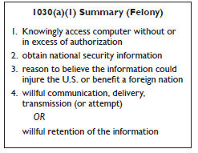
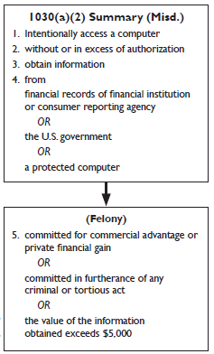
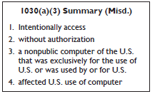
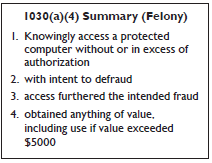
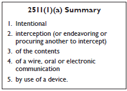
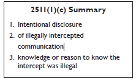
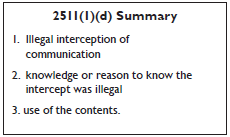
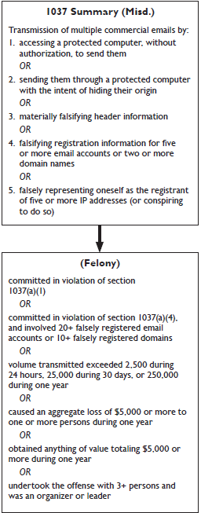
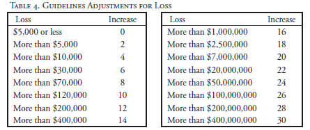

Preface and Acknowledgements
This manual examines the federal laws that relate to computer crimes. Our focus is on those crimes that use or target computer networks, which we interchangeably refer to as “computer crime,” “cybercrime,” and “network crime.” Examples of computer crime include computer intrusions, denial of service attacks, viruses, and worms. We do not attempt to cover issues of state law and do not cover every type of crime related to computers, such as child pornography or phishing.
This publication is the second edition of “Prosecuting Computer Crimes” and updates the previous version published in February 2007. During the three years since then, case law developed and, more importantly, Congress significantly amended the Computer Fraud and Abuse Act.
Like the first edition of this manual, the revisions contained in this edition of the manual are the result of the efforts and knowledge of many people at CCIPS. Scott Eltringham edited and published it under the supervision of John Lynch and Richard Downing. Substantial assistance was provided by Mysti Degani, Jenny Ellickson, Josh Goldfoot, and Jaikumar Ramaswamy, all of whom took lead responsibility for revising one or more chapters.
We are grateful to Ed Hagen and the Office of Legal Education for their assistance in publishing this manual and the prior edition.
Tis manual is intended as assistance, not authority. The research, analysis, and conclusions herein reflect current thinking on difficult and dynamic areas of the law; they do not represent the official position of the Department of Justice or any other agency. Tis manual has no regulatory effect, confers no rights or remedies, and does not have the force of law or a U.S. Department of Justice directive. See United States v. Caceres, 440 U.S. 741 (1979).
Electronic copies of this document are available from our website, www. cybercrime.gov. We may update the electronic version periodically and we advise prosecutors and agents to check the website’s version for the latest developments. CCIPS will honor requests for paper copies only when made by law enforcement officials or by public institutions. Please send such requests to the following address:
Attn: Prosecuting Computer Crime manual
Computer Crime and Intellectual Property Section
10th & Constitution Ave., N.W.
John C. Keeney Bldg., Suite 600
Washington, DC 20530
Chapter 1
Computer Fraud and Abuse Act
In the early 1980s law enforcement agencies faced the dawn of the computer age with growing concern about the lack of criminal laws available to fight emerging computer crimes. Although the wire and mail fraud provisions of the federal criminal code were capable of addressing some types of computer related criminal activity, neither of those statutes provided the full range of tools needed to combat these new crimes. See H.R. Rep. No. 98-894, at 6 (1984), reprinted in 1984 U.S.C.C.A.N. 3689, 3692.
In response, Congress included in the Comprehensive Crime Control Act of 1984 provisions to address the unauthorized access and use of computers and computer networks. the legislative history indicates that Congress intended these provisions to provide “a clearer statement of proscribed activity” to “the law enforcement community, those who own and operate computers, as well as those who may be tempted to commit crimes by unauthorized access.” Id. Congress did this by making it a felony to access classified information in a computer without authorization and making it a misdemeanor to access financial records or credit histories stored in a financial institution or to trespass into a government computer. In so doing, Congress opted not to add new provisions regarding computers to existing criminal laws, but rather to address federal computer-related offenses in a single, new statute, 18 U.S.C. § 1030.
Even after enacting section 1030, Congress continued to investigate problems associated with computer crime to determine whether federal criminal laws required further revision. Throughout 1985, both the House and the Senate held hearings on potential computer crime bills, continuing the efforts begun the year before. These hearings culminated in the Computer Fraud and Abuse Act (CFAA), enacted by Congress in 1986, which amended 18 U.S.C. § 1030.
In the CFAA, Congress attempted to strike an “appropriate balance between the Federal Government’s interest in computer crime and the interests and abilities of the States to proscribe and punish such offenses.” See S. Rep. No. 99-432, at 4 (1986), reprinted in 1986 U.S.C.C.A.N. 2479, 2482. Congress addressed federalism concerns in the CFAA by limiting federal jurisdiction to cases with a compelling federal interest—i.e., where computers of the federal government or certain financial institutions are involved or where the crime itself is interstate in nature. See id.
In addition to clarifying a number of the provisions in the original section 1030, the CFAA also criminalized additional computer-related acts. For example, Congress added a provision to penalize the theft of property via computer that occurs as a part of a scheme to defraud. Congress also added a provision to penalize those who intentionally alter, damage, or destroy data belonging to others. This latter provision was designed to cover such activities as the distribution of malicious code and denial of service attacks. Finally, Congress also included in the CFAA a provision criminalizing trafficking in passwords and similar items.
As computer crimes continued to grow in sophistication and as prosecutors gained experience with the CFAA, the CFAA required further amending, which Congress did in 1988, 1989, 1990, 1994, 1996, 2001, 2002, and 2008. The 2008 amendments made the following changes to section 1030:
- Eliminated the requirement in 18 U.S.C. § 1030(a)(2)(C) that information must have been stolen through an interstate or foreign communication, thereby expanding jurisdiction for cases involving theft of information from computers;
- Eliminated the requirement in 18 U.S.C. § 1030(a)(5) that the defendant’s action must result in a loss exceeding $5,000 and created a felony offense where the damage affects ten or more computers, closing a gap in the law;
- Expanded 18 U.S.C. § 1030(a)(7) to criminalize not only explicit threats to cause damage to a computer, but also threats to (1) steal data on a victim's computer, (2) publicly disclose stolen data, or (3) not repair damage the offender already caused to the computer;
- Created a criminal offense for conspiring to commit a computer hacking offense under section 1030;
- Broadened the definition of “protected computer” in 18 U.S.C. § 1030(e)(2) to the full extent of Congress’s commerce power by including those computers used in or affecting interstate or foreign commerce or communication; and
- Provided a mechanism for civil and criminal forfeiture of property used in or derived from section 1030 violations.
Aside from the list above, this manual does not explore each of these amendments, but focuses on the law as it exists at the date of the publication of this manual. Additional information on some of the more significant amendments may be found on the CCIPS website, www.cybercrime.gov.
The current version of the CFAA includes seven types of criminal activity, outlined in Table 1 below. Conspiracy to commit and attempts to commit these crimes are also crimes. 18 U.S.C. § 1030(b). However, despite the fact that a conspiracy charge under section 1030(b) does not require proof of an overt act, CCIPS recommends using section 371 to charge conspiracies due to the lack of clarity on penalties. See pages 55-56. Lawfully authorized activities of law enforcement and intelligence agencies are explicitly excluded from coverage of section 1030. 18 U.S.C. § 1030(f).
Table 1. Summary of CFAA Penalties
|
Offense
|
Section
|
Sentence*
|
|
Obtaining National Security Information
|
(a)(1)
|
10 (20) years
|
|
Accessing a Computer and Obtaining Information
|
(a)(2)
|
1 or 5 (10)
|
|
Trespassing in a Government Computer
|
(a)(3)
|
1 (10)
|
|
Accessing a Computer to Defraud & Obtain Value
|
(a)(4)
|
5 (10)
|
|
Intentionally Damaging by Knowing Transmission
|
(a)(5)(A)
|
1 or 10 (20)
|
|
Recklessly Damaging by Intentional Access
|
(a)(5)(B)
|
1 or 5 (20)
|
|
Negligently Causing Damage & Loss by Intentional Access
|
(a)(5)(C)
|
1 (10)
|
|
Trafficking in Passwords
|
(a)(6)
|
1 (10)
|
|
Extortion Involving Computers
|
(a)(7)
|
5 (10)
|
* The maximum prison sentences for second convictions are noted in parentheses.
In some circumstances, the CFAA allows victims who suffer specific types of loss or damage as a result of violations of the Act to bring civil actions against the violators for compensatory damages and injunctive or other equitable relief. 18 U.S.C. § 1030(g). Tis manual does not address the civil provisions of the statute except as they may pertain to the criminal provisions.
For draft jury instructions, please see Appendix B.
A. Key Definitions
Two terms are common to most prosecutions under section 1030 and are discussed below: “protected computer” and “authorization.” Other terms are discussed with their applicable subsection.
1. Protected Computer
The term “protected computer,” 18 U.S.C. § 1030(e)(2), is a statutory term of art that has nothing to do with the security of the computer. In a nutshell, “protected computer” covers computers used in or affecting interstate or foreign commerce and computers used by the federal government and financial institutions.
Section 1030(e)(2) defines protected computer as:
a computer—
(A) exclusively for the use of a financial institution or the United States Government, or, in the case of a computer not exclusively for such use, used by or for a financial institution or the United States Government and the conduct constituting the offense affects that use by or for the financial institution or the Government; or
(B). which is used in or affecting interstate or foreign commerce or communication . . . .
18 U.S.C. § 1030(e)(2). Note that the computer must be “used in or affecting” not “used by the defendant in”—that is, it is enough that the computer is connected to the Internet; the statute does not require proof that the defendant also used the Internet to access the computer or used the computer to access the Internet.
Several courts have held that using the Internet from a computer is sufficient to meet this element. See, e.g., United States v. Drew, 259 F.R.D. 449, 457 (C.D. Cal. 2009) (“[T]he latter two elements of the section 1030(a)(2)(C) crime [obtaining information from a protected computer] will always be met when an individual using a computer contacts or communicates with an Internet website.”); United States v. Trotter, 478 F.3d 918, 921 (8th Cir. 2007) (“No additional interstate nexus is required when instrumentalities or channels of interstate commerce are regulated.”) (internal citations omitted); Paradigm Alliance, Inc. v. Celeritas Technologies, LLC, 248 F.R.D. 598, 602 (D. Kan. 2008) (“As a practical matter, a computer providing a ‘web-based’ application accessible through the internet would satisfy the ‘interstate communication’ requirement.”).
Prior to 2008, this definition did not explicitly cover computers that were not connected to the Internet and that were not used by the federal government or financial institutions. For example, some state-run utility companies operate computers that are not connected to the Internet for security reasons. Congress remedied this gap in the Identity Theft Enforcement and Restitution Act of 2008 by broadening the definition of “protected computer” to include computers that “affect” interstate or foreign commerce or communications. 18 U.S.C. § 1030(e)(2)(B).
In the USA PATRIOT Act, Congress amended the definition of “protected computer” to make clear that this term includes computers outside of the United States so long as they affect “interstate or foreign commerce or communication of the United States.” 18 U.S.C. § 1030(e)(2)(B) (2001). This change addresses situations where an attacker within the United States attacks a computer system located abroad and situations in which individuals in foreign countries route communications through the United States as they hack from one foreign country to another. Both situations can therefore be violations of section 1030.
2. “Without Authorization” or “Exceeds Authorized Access”
Several of the criminal offenses in the CFAA require that the defendant access a computer “without authorization.” See 18 U.S.C. §§ 1030(a)(3), (a)(5)(B), (a)(5)(C). Others require that the defendant either access a computer “without authorization” or “exceed authorized access.” See 18 U.S.C. §§ 1030(a)(1), (a)(2), (a)(4). The term “without authorization” is not defined by the CFAA. The term “exceeds authorized access” means “to access a computer with authorization and to use such access to obtain or alter information in the computer that the accessor is not entitled so to obtain or alter.” 18 U.S.C. § 1030(e)(6).
The legislative history of the CFAA reflects an expectation that persons who “exceed authorized access” will be insiders (e.g., employees using a victim’s corporate computer network), while persons who access computers “without authorization” will typically be outsiders (e.g., hackers). See S. Rep. No. 99432, at 10 (1986), reprinted in 1986 U.S.C.C.A.N. 2479 (discussing section 1030(a)(5), “insiders, who are authorized to access a computer, face criminal liability only if they intend to cause damage to the computer, not for recklessly or negligently causing damage. By contrast, outside intruders who break into a computer could be punished for any intentional, reckless, or other damage they cause by their trespass.”); S. Rep. No. 104-357, at 11 (1996), available at 1996 WL 492169; United States v. Phillips, 477 F.3d 215, 219 (5th Cir. 2007) (discussing legislative history).
Civil cases interpreting the authorization elements of CFAA offenses have often followed this insider/outsider distinction and concluded that insiders “exceed authorized access,” while outsiders access computers “without authorization.” However, some courts have diverged from this general approach and have found that insiders acted “without authorization” in certain civil cases. The next two subsections discuss the contours of “without authorization” and “exceeding authorized access” in more detail.
Without Authorization
It is relatively easy to define the universe of individuals who lack any authorization to access a computer. When someone from this group of people accesses the computer, the access is necessarily “without authorization” for purposes of the CFAA. See, e.g., United States v. Ivanov, 175 F. Supp. 2d 367 (D. Conn. 2001) (Russian hacker accessed victim company’s computers without authorization). A more difficult question is whether a person with some authorization to access a computer can ever act “without authorization” with respect to that computer. The case law on this issue is muddy, but, as discussed below, there is growing consensus that such “insiders” cannot act “without authorization” unless and until their authorization to access the computer is rescinded.
Prosecutors rarely argue that a defendant accessed a computer “without authorization” when the defendant had some authority to access that computer. However, several civil cases have held that defendants lost their authorization to access computers when they breached a duty of loyalty to the authorizing parties, even if the authorizing parties were unaware of the breach. See, e.g., Int’l Airport Ctrs., LLC v. Citrin,1 440 F.3d 418, 420-21 (7th Cir. 2006); Shurgard Storage Ctrs., Inc. v. Safeguard Self Storage, Inc., 119 F. Supp. 2d 1121, 1125 (W.D. Wash. 2000); Ervin & Smith Advertising and Public Relations, Inc. v. Ervin, 2009 WL 249998 (D. Neb. 2009). Some of these cases further suggest that such a breach can occur when the user decides to access the computer for a purpose that is contrary to the interests of the authorizing party. See, e.g., Citrin, 440 F.3d at 420 (defendant’s authorization to access computer terminated when he resolved to destroy employer’s fles); ViChip Corp. v. Lee, 438 F. Supp. 2d 1087, 1100 (N.D. Cal. 2006) (same); NCMIC Finance Corp.
v. Artino, 638 F. Supp. 2d 1042, 1057 (S.D. Iowa 2009) (“[T]he determinative question is whether Artino breached his duty of loyalty to NCMIC when Artino obtained information from NCMIC’s computers.”).
The Citrin/Shurgard line of cases has been criticized by courts adopting the view that, under the CFAA, an authorized user of a computer cannot access the computer “without authorization” unless and until the authorization is revoked. Most significantly, the Ninth Circuit recently rejected Citrin’s interpretation of “without authorization” and found that, under the plain language of the CFAA, a user’s authorization to access a computer depends on the actions of the authorizing party and not on the user’s duty of loyalty. See LVRC Holdings LLC v. Brekka, 581 F.3d 1127, 1133-34 (9th Cir. 2009) (“It is the employer’s decision to allow or to terminate an employee’s authorization to access a computer that determines whether the employee is with or ‘without authorization.’”). The court also suggested that Citrin’s reading of the CFAA is inconsistent with the rule of lenity, which requires courts to construe any ambiguity in a criminal statute against the government. Id. at 1134-35. The court then held that “a person uses a computer ‘without authorization’ . . . when the person has not received permission to use the computer for any purpose (such as when a hacker accesses someone’s computer without any permission), or when the employer has rescinded permission to access the computer and the defendant uses the computer anyway.” Id. at 1135.
Several district courts have also recently moved away from the Citrin/ Shurgard view that a user can lose authorization to access a computer by breaching a duty of loyalty to the authorizing party. See, e.g., Bell Aerospace Services, Inc. v. U.S. Aero Services, Inc., 690 F. Supp. 2d 1267 (M.D. Ala. 2010); U.S. Bioservices v. Lugo, 595 F. Supp. 2d 1189 (D. Kan. 2009); Losco Foods v. Hall & Shaw Sales, 600 F. Supp. 2d 1045 (E.D. Mo. 2009); Bro-Tech Corp. v. Termax, Inc., 651 F. Supp. 2d 378, 407-08 (E.D. Pa. 2009); Shamrock Foods Co. v. Gast, 535 F. Supp. 2d 962, 964-967 (D. Ariz. 2008); Diamond Power Int’l, Inc. v. Davidson, 540 F. Supp. 2d 1322, 1342 (N.D. Ga. 2007); B&B Microscopes v. Armogida, 532 F. Supp. 2d 744, 758 (W.D. Pa. 2007); Lockheed Martin Corp. v. Speed, 2006 WL 2683058, at *4 (M.D. Fla. 2006). These courts, like the Ninth Circuit, generally hold that an authorized computer user can never access the computer “without authorization” unless and until the authorization is rescinded. See, e.g., Shamrock Foods, 535 F. Supp. 2d at 967 (“[A] violation for accessing ‘without authorization’ occurs only where initial access is not permitted.”).
Based on this recent case law, courts appear increasingly likely to reject the idea that a defendant accessed a computer “without authorization” in insider cases—cases where the defendant had some current authorization to access the computer. Accordingly, prosecutors should think carefully before charging such defendants with violations that require the defendants to access a computer “without authorization” and instead consider bringing charges under those subsections that require proof that the defendant exceeded authorized access.
Exceeding Authorized Access
Several provisions of the CFAA impose criminal liability on a defendant who, among other things, “exceeds authorized access” when accessing a computer. See 18 U.S.C. §§ 1030(a)(1), (a)(2), & (a)(4). The CFAA defines “exceeds authorized access” as “to access a computer with authorization and to use such access to obtain or alter information in the computer that the accessor is not entitled so to obtain or alter.”2 18 U.S.C. § 1030(e)(6). Accordingly, to prove that someone has “exceeded authorized access,” prosecutors should be prepared to present evidence showing (a) how the person’s authority to obtain or alter information on the computer was limited, rather than absolute, and (b) how the person exceeded those limitations in obtaining or altering information.
It is relatively easy to prove that a defendant had only limited authority to access a computer in cases where the defendant’s access was limited by restrictions that were memorialized in writing, such as terms of service, a computer access policy, a website notice, or an employment agreement or similar contract. See, e.g., EF Cultural Travel BV v. Zefer Corp., 318 F.3d 58 (1st Cir. 2003) (website notices); Cont’l Group, Inc. v. KW Prop. Mgmt., LLC, 622 F. Supp. 2d 1357, 1372 (S.D. Fla. 2009) (computer access policies); United States v. Drew,3 259 F.R.D. 449 (C.D. Cal. 2009) (website terms of service); Modis, Inc. v. Bardelli, 531 F. Supp. 2d 314, 319 (D. Conn. 2008) (employment agreement); Hewlett-Packard Co. v. Byd:Sign, Inc., 2007 WL 275476, at *13 (E.D. Tex. 2007) (confidentiality agreement); Am. Online, Inc. v. Nat’l Health Care Discount, Inc., 174 F. Supp. 2d 890, 899 (N.D. Iowa 2001) (email terms of service). In addition, password protection is an implicit (and technological) limit on access for otherwise authorized users who are not given the password. See EF Cultural Travel BV v. Zefer Corp., 318 F.3d 58 (1st Cir. 2003). However, courts have split on the question of whether limits on authorized access can be reasonably inferred from the circumstances in cases where no explicit or implicit restrictions on access existed. Compare EF Cultural Travel BV v. Zefer Corp., 318 F.3d 58 (1st Cir. 2003) (rejecting “reasonable expectations” test for lack of authorization), with United States v. Phillips, 477 F.3d 215, 219 (5th Cir. 2007) (“Courts have . . . typically analyzed the scope of a user’s authorization to access a protected computer on the basis of the expected norms of intended use or the nature of the relationship established between the computer owner and the user.”).4
The most commonly litigated issue about “exceeding authorized access” in reported opinions is whether a particular defendant exceeded authorized access by accessing the computer for an improper purpose. The cases on this issue are difficult to untangle, but this argument generally arises in one of three contexts: (1) the authorizing party has expressly prohibited the defendant from accessing the computer for the improper purpose; (2) the authorizing party has expressly prohibited the defendant from using the authorizing party’s data for the improper purpose but did not condition the defendant’s computer access on compliance with this prohibition; and (3) the authorizing party did not expressly prohibit the defendant from using its data for the improper purpose, but the defendant was acting against the authorizing party’s interests.
The first category of cases is the least controversial. Because the authorizing party explicitly imposed a purpose-based limitation on the defendant’s computer access, a defendant exceeds authorized access when he accesses the computer for an expressly forbidden purpose. See, e.g., United States v. John, 597 F.3d 263, 272 (5th Cir. 2010) (“Access to a computer and data that can be obtained from that access may be exceeded if the purposes for which the access has been given are exceeded.”); Cont’l Group, Inc. v. KW Prop. Mgmt., LLC, 622 F. Supp. 2d 1357, 1372 (S.D. Fla. 2009) (computer access policies stated that computers were provided “for business use” and were “to be used solely for the [authorizing party’s] purposes”); United States v. Salum, 257 Fed. Appx. 225, 227 (11th Cir. 2007) (officers could access NCIC system only for official business of criminal justice agency); Register.com, Inc. v. Verio, Inc., 126 F. Supp. 2d 238, 242-43, 248 (S.D.N.Y. 2000), af’d, 356 F.3d 393 (2d Cir. 2004) (in order to submit query to website, users must agree not to use responsive data for direct marketing activities); United States v. Czubinski, 106 F.3d 1069, 1071 (1st Cir. 1997) (“[IRS] employees may not use any Service computer system for other than official purposes.”).
It may be more difficult to prove that a defendant exceeded authorized access in the second category of cases. In these cases, the authorizing party has expressly prohibited the defendant from using the authorizing party’s data for certain purposes, but it did not condition the defendant’s computer access on compliance with this prohibition. For example, the defendant might have signed a confidentiality agreement in which he agreed not to use the authorizing party’s information for personal gain, but the agreement did not specifically prohibit the defendant from accessing the authorizing party’s computer for that purpose. In essence, the authorizing party has explicitly limited the defendant’s authorization to use information that he might find on the computer, but it has not imposed the same purpose-based limitations on the defendant’s authorization to obtain or alter that information. The CFAA provides that a defendant “exceeds authorized access” when he “obtain[s] or alter[s] information in the computer that [he] is not entitled so to obtain or alter,” 18 U.S.C. § 1030(e)(6), but it does not discuss using the information in an unauthorized way. Because of this statutory language, several courts have concluded that defendants did not “exceed authorized access” when they were permitted to obtain certain information from the computers, but then used that information for a specifically forbidden purpose. See, e.g., Brett Senior & Assocs, P.C. v. Fitzgerald, 2007 WL 2043377, at *4 (E.D. Pa. 2007) (defendant permissibly copied data from computer but then allegedly used data in a way that violated his employment contract); Int’l Ass’n of Machinists and Aerospace Workers v. Werner-Masuda, 390 F. Supp. 2d 479, 498-99 (D. Md. 2005) (defendant was authorized to access data on proprietary website but then violated agreement not to use the data for certain purposes). However, at least one circuit has upheld an “exceeding authorized access” claim in this context. See EF Cultural Travel BV v. Explorica, 274 F.3d 577, 582-83 (1st Cir. 2001) (defendant exceeded authorized access by disclosing computer data in violation of confidentiality agreement).
The third and final category of “improper purposes” cases is arguably the most controversial. In these cases, the defendant accessed the computer within the limits of his authorization but used the computer for a purpose that was contrary to the implicit interests or intent of the authorizing party. The case law is divided on whether these facts are sufficient to establish that the defendant exceeded authorized access. Some courts have concluded that the improper purpose, without more, establishes that the defendant exceeded authorized access. See, e.g., Motorola, Inc. v. Lemko Corp., 609 F. Supp. 2d 760, 767 (N.D. Ill. 2009) (“Allegations that an employee emailed and downloaded confidential information for an improper purpose are sufficient to state a claim that the employee exceeded her authorization.”). These cases typically rely on the reasoning set forth in Citrin, 440 F.3d at 420-21, which is discussed in more detail in the previous subsection.
However, a number of recent civil cases have rejected the idea that users can exceed authorized access within the meaning of section 1030(e)(6) when they access information that they are authorized to access, even if their access is motivated by an implicitly improper purpose. See, e.g., LVRC Holdings LLC v. Brekka, 581 F.3d 1127, 1135 n.7 (9th Cir. 2009) (stating in dicta that defendant does not “exceed authorized access” under the CFAA when he breaches a duty of loyalty to authorizing party); Bell Aerospace Services, Inc. v.
U.S. Aero Services, Inc., 690 F. Supp. 2d 1267 (M.D. Ala. 2010); Orbit One Communications, Inc. v. Numerex Corp., 652 F. Supp. 2d 373 (S.D.N.Y. 2010); National City Bank v. Republic Mortgage Home Loans, 2010 WL 959925 (W.D. Wash. 2010); RedMedPar, Inc. v. Allparts Medical, LLC, 683 F. Supp. 2d 605 (M.D. Tenn. 2010); U.S. Bioservices Corp. v. Lugo, 595 F. Supp. 2d 1189, 1192 (D. Kan. 2009) (collecting cases); Jet One Group, Inc. v. Halcyon Jet Holdings, Inc., 2009 WL 2524864, at *5-6 (E.D.N.Y. 2009); Brett Senior & Assocs, P.C. v. Fitzgerald, 2007 WL 2043377, at *4 (E.D. Pa. 2007).
B. Obtaining National Security Information: 18 U.S.C. § 1030(a)(1)

The infrequently-used section 1030(a)(1) punishes the act of obtaining national security information without or in excess of authorization and then willfully providing or attempting to provide the information to an unauthorized recipient, or willfully retaining the information.
Any steps in investigating or indicting a case under section 1030(a)(1) require the prior approval of the National Security Division of the Department of Justice, through the Counterespionage Section. See USAM 9-90.020. Please contact them at (202) 514-1187.
Title 18, United States Code, Section 1030(a)(1) provides:
Whoever—
(1) having knowingly accessed a computer without authorization or exceeding authorized access, and by means of such conduct having obtained information that has been determined by the United States Government pursuant to an Executive order or statute to require protection against unauthorized disclosure for reasons of national defense or foreign relations, or any restricted data, as defined in paragraph y. of section 11 of the Atomic Energy Act of 1954, with reason to believe that such information so obtained could be used to the injury of the United States, or to the advantage of any foreign nation willfully communicates, delivers, transmits, or causes to be communicated, delivered, or transmitted, or attempts to communicate, deliver, transmit or cause to be communicated, delivered, or transmitted the same to any person not entitled to receive it, or willfully retains the same and fails to deliver it to the officer or employee of the United States entitled to receive it . . .
shall be punished as provided in subsection (c) of this section.
1. Knowingly Access a Computer Without or In Excess of Authorization
A violation of this section requires proof that the defendant knowingly accessed a computer without authorization or in excess of authorization. Tis covers both completely unauthorized individuals who intrude into a computer containing national security information as well as insiders with limited privileges who manage to access portions of a computer or computer network to which they have not been granted access. The scope of authorization will depend upon the facts of each case. However, it is worth noting that computers and computer networks containing national security information will normally be classified and incorporate security safeguards and access controls of their own, which should facilitate proving this element.
Please see page 5 for the discussion of access and authorization.
2. Obtain National Security Information
A violation of this section requires that the information obtained is national security information, meaning information “that has been determined by the United States Government pursuant to an Executive Order or statute to require protection against unauthorized disclosure for reasons of national defense or foreign relations, or any restricted data, as defined in paragraph y. of section 11 of the Atomic Energy Act of 1954.” An example of national security information used in section 1030(a)(1) would be classified information obtained from a Department of Defense computer or restricted data obtained from a Department of Energy computer.
3. Information Could Injure the United States or Benefit a Foreign Nation
A violation of this section requires proof that the defendant had reason to believe that the national security information so obtained could be used to the injury of the United States or to the advantage of any foreign nation. The fact that the national security information is classified or restricted, along with proof of the defendant’s knowledge of that fact, should be sufficient to establish this element of the offense.
4. Willful Communication, Delivery, Transmission, or Retention
A violation of this section requires proof that the defendant willfully communicated, delivered, or transmitted the national security information, attempted to do so, or willfully retained the information instead of delivering it to the intended recipient. Tis element could be proven through evidence showing that the defendant did any of the following: (a) communicated, delivered, or transmitted national security information, or caused it to be communicated, delivered, or transmitted, to any person not entitled to receive it; (b) attempted to communicate, deliver, or transmit national security information, or attempted to cause it to be communicated, delivered, or transmitted to any person not entitled to receive it; or (c) willfully retained national security information and failed to deliver it to an officer or employee of the United States who is entitled to receive it in the course of their official duties.
5. Penalties
Convictions under this section are felonies punishable by a fine, imprisonment for not more than ten years, or both. 18 U.S.C. § 1030(c)(1)(A). A violation that occurs after another conviction under section 1030 is punishable by a fine, imprisonment for not more than twenty years, or both. 18 U.S.C. § 1030(c)(1)(B).
6. Relation to Other Statutes
Section 1030(a)(1) was originally enacted in 1984 and was substantially amended in 1996. As originally enacted, section 1030(a)(1) provided that anyone who knowingly accessed a computer without authorization or in excess of authorization and obtained classified information “with the intent or reason to believe that such information so obtained is to be used to the injury of the United States, or to the advantage of any foreign nation” was subject to a fine or imprisonment for not more than ten years for a first offense. Tis scienter element mirrored that of 18 U.S.C. § 794(a), the statute that prohibits gathering or delivering defense information to aid a foreign government. Section 794(a), however, provides for life imprisonment, whereas section 1030(a)(1) is only a ten-year felony. Based on that distinction, Congress amended section 1030(a) (1) in 1996 to track more closely the language of 18 U.S.C. § 793(e), which also provides a maximum penalty of ten years imprisonment for obtaining from any source certain information connected with the national defense and thereafter communicating or attempting to communicate it in an unauthorized manner.
Violations of this subsection are charged quite rarely. Te reason for this lack of prosecution may well be the close similarities between sections 1030(a)(1) and 793(e). In situations where both statutes are applicable, prosecutors may tend towards using section 793(e), for which guidance and precedent are more prevalent.
Although sections 793(e) and 1030(a)(1) overlap, the two statutes do not reach exactly the same conduct. Section 1030(a)(1) requires proof that the individual knowingly accessed a computer without or in excess of authority and thereby obtained national security information, and subsequently performed some unauthorized communication or other improper act with that data. In this way, it focuses not only on the possession of, control over, or subsequent transmission of the information (as section 793(e) does), but also focuses on the improper use of a computer to obtain the information itself. Existing espionage laws such as section 793(e) provide solid grounds for the prosecution of individuals who attempt to peddle governmental secrets to foreign governments. However, when a person, without authorization or in excess of authorized access, deliberately accesses a computer, obtains national security information, and seeks to transmit or communicate that information to any prohibited person, prosecutors should consider charging a violation section 1030(a)(1) in addition to considering charging a violation of section 793(e).
One other issue to note is that section 808 of the USA PATRIOT Act added section 1030(a)(1) to the list of crimes in that are considered “Federal Crime[s] of Terrorism” under 18 U.S.C. § 2332b(g)(5)(B). Tis addition affects prosecutions under section 1030(a)(1) in three ways. First, because offenses listed under section 2332b(g)(5)(B) are now incorporated into 18
U.S.C. § 3286, the statute of limitation for subsection (a)(1) is extended to eight years and is eliminated for offenses that result in, or create a foreseeable risk of, death or serious bodily injury to another person. Second, the term of supervised release after imprisonment for any offense listed under section 2332b(g)(5)(B) that results in, or creates a foreseeable risk of, death or serious bodily injury to another person, can be any term of years or life. 18 U.S.C. § 3583. Formerly, the maximum term of supervised release for any violation of section 1030 was five years. Third, the USA PATRIOT Act added the offenses listed in section 2332b(g)(5)(B) to 18 U.S.C. § 1961(1), making them predicate offenses for prosecutions under the Racketeer Influenced and Corrupt Organizations (RICO) statute. As a result, any “RICO enterprise” (which may include terrorist groups) that violates section 1030(a)(1) (or section 1030(a)(5)(A)) can now be prosecuted under the RICO statute.
C. Accessing a Computer and Obtaining Information: 18 U.S.C. § 1030(a)(2)

The distinct but overlapping crimes established by the three subsections of section 1030(a)(2) punish the unauthorized access of different types of information and computers. Violations of this section are misdemeanors unless aggravating factors exist.
Title 18, United States Code, Section 1030(a)(2) provides:
Whoever—
(2) intentionally accesses a computer without authorization or exceeds authorized access, and thereby obtains—
(A) information contained in a financial record of a financial institution, or of a card issuer as defined in section 1602(n) of title 15, or contained in a file of a consumer reporting agency on a consumer, as such terms are defined in the Fair Credit Reporting Act (15 U.S.C. 1681 et seq.);
(B) information from any department or agency of the United States;
or
(C) information from any protected computer . . .
shall be punished as provided in subsection (c) of this section.
Some intrusions may violate more than one subsection. For example, a computer intrusion into a federal agency’s computer in violation of section 1030(a)(2)(B) might also be covered as information obtained from a “protected computer” under section 1030(a)(2)(C).
Section 1030(a)(2) does not impose a monetary threshold for a misdemeanor violation, in recognition of the fact that some invasions of privacy do not lend themselves to monetary valuation but still warrant federal protection. For example, it may be difficult to measure the harm in dollars where an individual unlawfully downloads sensitive medical information from a hospital’s computer or gathers personal data from the National Crime Information Center. Although there is no monetary threshold for establishing a misdemeanor offense under section 1030(a)(2), the value of the information obtained during an intrusion can elevate the crime to a felony.
1. Intentionally Access a Computer
A violation of this section generally requires that the defendant actually access a computer without or in excess of authorization, rather than merely receive information that was accessed without or in excess of authorization by another. For example, if A obtains information in violation of section 1030(a)(2) and forwards it to B, B has not violated this section, even if B knew the source of the information. See Role Models America, Inc. v. Jones, 305 F. Supp. 2d 564 (D. Md. 2004). Of course, depending on the facts, B might be subject to prosecution for participating in a criminal conspiracy to violate this section or for aiding and abetting a violation.
In 1986, Congress changed the intent standard in this section from “knowingly” to “intentionally” in order to emphasize that “intentional acts of unauthorized access—rather than mistaken, inadvertent, or careless ones— are precisely what the Committee intends to proscribe.” S. Rep. No. 432, 99th Cong., 2d Sess., reprinted in 1986 U.S.C.C.A.N. 2479, 2483. They also designed the “‘intentional’ standard to focus Federal criminal prosecutions on those whose conduct evinces a clear intent to enter, without proper authorization, computer files or data belonging to another.” Id. at 2484 (emphasis added); see also United States v. Willis, 476 F.3d 1121, 1125 n.1 (10th Cir. 2007).
2. Without or In Excess of Authorization
Please see page 5 for the discussion of access and authorization.
3. Obtained Information
The term “obtaining information” is an expansive one that includes merely viewing information without downloading or copying a file. See S. Rep. No. 99-432, at 6; America Online, Inc. v. National Health Care Discount, Inc., 121 F. Supp. 2d 1255, 1275 (N.D. Iowa 2000). Information stored electronically can be obtained not only by actual physical theft, but also by “mere observation of the data.” Id. The “crux of the offense under subsection 1030(a)(2)(C) . . . is the abuse of a computer to obtain the information.” Id.
“Information” includes intangible goods; section 1030(a)(2) therefore covers conduct not necessarily covered by other statutes. In United States v. Brown, 925 F.2d 1301, 1308 (10th Cir. 1991), the Tenth Circuit held that purely intangible intellectual property, such as a computer program, did not constitute goods or services that can be stolen or converted in violation of 18 U.S.C. §§ 2314-15 (transportation and possession of stolen property). 925 F.2d at 1306-07. In the 1996 amendments to section 1030, Congress clarified that section 1030(a)(2) would “ensure that the theft of intangible information by the unauthorized use of a computer is prohibited in the same way theft of physical items are protected.” S. Rep. No. 104-357, at 7, available at 1996 WL 492169.
4. Target
Department or Agency of the United States
Department or agency includes any federal government entity, including the legislature, judiciary, and all parts of the Executive Branch.
“Department” is defined in the CFAA as “the legislative or judicial branch of the Government or one of the [fifteen] executive departments enumerated in section 101 of title 5.” 18 U.S.C. § 1030(e)(7). Although “agency” is not defined in section 1030, the general provisions section of Title 18 defines “agency” as “any department, independent establishment, commission, administration, authority, board or bureau of the United States or any corporation in which the United States has a proprietary interest, unless the context shows that such term was intended to be used in a more limited sense.” 18 U.S.C. § 6.
Under case law, a particular entity is considered an agency when the federal government exercises considerable control over it, or the United States has a proprietary interest in the entity. See Rauscher Pierce Refsnes, Inc. v. FDIC, 789 F.2d 313, 314 (5th Cir. 1986) (“[W]hen the interest of the United States is more than incidental or custodial the corporation meets the definition of agency.” (citing Acron Invest., Inc. v. Federal Sav. & Loan Ins. Corp., 363 F.2d 236, 240 (9th Cir. 1966))); Fed. Land Bank v. Cotton, 410 F. Supp. 169, 171 (N.D. Ga. 1975) (“[C]corporation is not an ‘agency’ unless the government has a substantial proprietary interest in it, or at least exercises considerable control over operation and policy in the corporation.”); Walton v. Howard, 683 F. Supp. 826, 830 (D.D.C. 1987) (“The American National Red Cross . . . was not set up to perform an essential regulatory function, or an essential function in the operation of the national economy, with the federal government maintaining primary control of the corporation. . . . [I]t is not subject to the substantial federal control that is characteristic of a governmental agency.”).
Whether a company working as a private contractor for the government constitutes a “department or agency of the United States” for purposes of prosecution under subsection (a)(2)(B) has not been addressed by any court. However, the argument that private contractors are intended to be covered by this section may be undercut by section 1030(a)(3), which includes language permitting prosecution of trespass into government systems and nongovernment systems, if “such conduct affects that use by or for the Government of the United States.” The existence of this language suggests that if Congress had intended to extend the reach of section 1030(a)(2)(B) beyond computers owned by the federal government, it would have done so using language it used elsewhere in section 1030.
Protected Computer
The term “protected computer” is defined in section 1030(e)(2) and is discussed in the “Key Definitions” discussion on page 4.
5. Penalties
Violations of section 1030(a)(2) are misdemeanors punishable by a fine or a one-year prison term unless aggravating factors apply. 18 U.S.C. § 1030(c)(2)(A). Merely obtaining information worth less than $5,000 is a misdemeanor, unless committed after a conviction for another offense under section 1030, in which case the maximum prison term is 10 years. 18 U.S.C. § 1030(c)(2)(C). A violation or attempted violation of section 1030(a)(2) is a felony if:
- committed for commercial advantage or private financial gain,
- committed in furtherance of any criminal or tortious act in violation of the Constitution or laws of the United States or of any State, or
- the value of the information obtained exceeds $5,000.
18 U.S.C. § 1030(c)(2)(B). If the aggravating factors apply, a violation is punishable by a fine, up to five years’ imprisonment, or both.
Any reasonable method can be used to establish the value of the information obtained. For example, the research, development, and manufacturing costs or the value of the property “in the thieves’ market” can be used to meet the $5,000 valuation. See, e.g., United States v. Stegora, 849 F.2d 291, 292 (8th Cir. 1988). The terms “for purposes of commercial advantage or private financial gain” and “for the purpose of committing any criminal or tortious act” are taken from copyright law (17 U.S.C. § 506(a)) and the wiretap statute (18 U.S.C. § 2511(2)(d)), respectively.
Prosecutors should consider whether the defendant manifested intent to commit a state tort, such as invasion of privacy, at the time the information was obtained. The phrase “laws of the United States or of any State” unquestionably covers state statutory torts. Although defendants may argue that the phrase should be interpreted to refer only to statutory laws and should not cover state “common law” torts, this argument is incorrect. First, the statute’s plain language makes no distinction between statutory and common law. Second, at least one district court has held that the phrase applies to common law torts. United States v. Powers, 2010 WL 1418172 (D. Neb. 2010) (slip copy) (applying section 1030(a)(2) to Nebraska torts of invasion of privacy and intentional infliction of emotional distress). Moreover, the legislative history of section 1030 reveals that Congress intended the phrase to have the same meaning as identical language under the Wiretap Act, and cases construing that language hold the phrase encompasses state common law torts. S. Rep. No. 104-357, at 8 (1996), available at 1996 WL 492169, at *8 (“The terms . . . ‘for the purpose of committing any criminal or tortious act’ . . . are taken from . . . the wiretap statute . . . and are intended to have the same meaning as th[at] statute.”); see Doe v. Smith, 429 F.3d 706 (7th Cir. 2005); Bowens v. Aftermath Entertainment, 254 F. Supp. 2d 629 (E.D. Mich. 2003); Sussman v. American Broadcasting Companies, Inc., 186 F.3d 1200, 1202 (9th Cir. 1999).
Defendants may also argue that, if the statute covered state common law torts then it would federalize and criminalize all common law torts occurring on the Internet and usurp state jurisdiction in common law cases. This argument is also incorrect. First, defendants may only be charged under section 1030(a) (2) when they intentionally accessed a computer without authorization or exceeded authorized access. See United States v. Sablan, 92 F.3d 865, 869 (9th Cir. 1996). Second, the defendant’s access must have been in furtherance of the tortious act. See In re Doubleclick Inc. Privacy Litigation, 154 F. Supp. 2d 497, 519 (S.D.N.Y. 2001) (dismissing claim under section 2511 for lack of evidence of “criminal or tortious” purpose). Nonetheless, because it is possible to contest the applicability of the phrase “laws of the United States or of any State,” prosecutors should carefully consider reliance on minor or obscure common law torts. However, well-recognized common law torts, such as invasion of privacy and intentional infliction of emotional distress, will likely succeed.
6. Historical Notes
Originally, section 1030(a)(2) protected individual privacy by criminalizing unauthorized access to computerized information and credit records relating to customers’ relationships with financial institutions. See S. Rep. No. 99-432, at 6 (1986), reprinted in 1986 U.S.C.C.A.N. 2479, 2483; see also S. Rep. No. 104-357, at 7; America Online, Inc. v. National Health Care Discount, Inc., 121 F. Supp. 2d 1255, 1275 (N.D. Iowa 2000). In 1996, Congress expanded the scope of the section by adding two subsections that also protected information on government computers (§ 1030(a)(2)(B)) and computers used in interstate or foreign communication (§ 1030(a)(2)(C)).
In 1986, Congress changed the scienter requirement from “knowingly” to “intentionally.” See Pub. L. No. 99-474, § 2(a)(1). The first reason for the change was to ensure that only intentional acts of unauthorized access were prohibited, rather than “mistaken, inadvertent, or careless” acts of unauthorized access. S. Rep. No. 99-432, at 5, 1986 U.S.C.C.A.N. at 2483. The second reason for the change was a concern that the “knowingly” standard “might be inappropriate for cases involving computer technology.” Id. The specific concern was that a scienter requirement of “knowingly” might include an individual “who inadvertently ‘stumble[d] into’ someone else’s computer file or computer data,” especially where such individual was authorized to use a particular computer. Id. at 6, 1986 U.S.C.C.A.N. at 2483. The Senate Report offered that “[t]he substitution of an ‘intentional’ standard is designed to focus Federal criminal prosecutions on those whose conduct evinces a clear intent to enter, without proper authorization, computer files or data belonging to another.” Id., 1986 U.S.C.C.A.N. at 2484.
Until 2008, a violation of section 1030(a)(2)(C) required an actual interstate or foreign communication. See 18 U.S.C. § 1030(a)(2)(C) (2007). Tis limitation precluded prosecution in serious cases where sensitive or proprietary information was stolen from within a single state, as is often the case with “insider” thefts. Trough the Identity Theft Enforcement and Restitution Act, Congress deleted the portion of section 1030(a)(2)(C) that required an interstate or foreign communication. Accordingly, the government may now prosecute those who steal information from a computer without regard to how or where the criminal gained access to the victim computer, so long as that computer constitutes a “protected computer.” In such cases, federal jurisdiction is founded on the definition of “protected computer”—such as a computer owned by the federal government or one used in or affecting interstate commerce—in the same way as other parts of section 1030.
D. Trespassing in a Government Computer: 18 U.S.C. § 1030(a)(3)

Section 1030(a)(3) protects against “trespasses” by outsiders into federal government computers, even when no information is obtained during such trespasses. Congress limited this section’s application to outsiders out of concern that federal employees could become unwittingly subject to prosecution or punished criminally when administrative sanctions were more appropriate. S. Rep. No. 99-432, at 7, reprinted in 1986 U.S.C.C.A.N. 2479, 2485. However, Congress intended interdepartmental trespasses (rather than intradepartmental trespasses) to be punishable under section 1030(a)(3). Id.
Note that section 1030(a)(2) applies to many of the same cases in which section 1030(a)(3) could be charged. In such cases, section 1030(a)(2) may be the preferred charge because a first offense of section 1030(a)(2) may be charged as a felony if certain aggravating factors are present, while a first offense of section 1030(a)(3) is only a misdemeanor.
Title 18, United States Code, Section 1030(a)(3) provides:
Whoever—
(3) intentionally, without authorization to access any nonpublic computer of a department or agency of the United States, accesses such a computer of that department or agency that is exclusively for the use of the Government of the United States or, in the case of a computer not exclusively for such use, is used by or for the Government of the United States and such conduct affects that use by or for the Government of the
United States . . .
shall be punished as provided in subsection (c) of this section.
1. Intentionally Access
The meaning of this term under this section is identical to the meaning under section 1030(a)(2), discussed on page 17.
2. Without Authorization
By requiring that the defendant act without authorization to access the computer, section 1030(a)(3) does not apply to situations in which employees merely exceed authorized access to computers in their own department. S. Rep. No. 99-432, at 7, reprinted in 1986 U.S.C.C.A.N. 2479, 2485. However, Congress apparently intended that section 1030(a)(3) apply “where the offender’s act of trespass is interdepartmental in nature.” Id. at 8. Tus, while federal employees may not be subject to prosecution under section 1030(a) (3) as insiders as to their own agency’s computers, they may be eligible for prosecution in regard to intrusions into other agencies’ computers.
Please see page 5 for the discussion of access without or in excess of authorization.
3. Nonpublic Computer of the United States
“Nonpublic” includes most government computers, but not Internet servers that, by design, offer services to members of the general public. For example, a government agency’s database server is probably “nonpublic,” while the same agency’s web servers are “public.”
The computer must be either owned or controlled by a department or agency of the United States, or at least used “by or for” the government of the United States in some capacity. For example, if the United States has obtained an account on a private company’s server, that server is used “by” the United States even though it is not owned by the United States.
4. Affected United States’ Use of Computer
Demonstrating that the attacked computer is affected by an intrusion should be relatively simple. Almost any network intrusion will affect the government’s use of its computers because any intrusion potentially affects the confidentiality and integrity of the government’s network and often requires substantial measures to assure the integrity of data and the security of the network.
Section 1030(a)(3) “defines as a criminal violation the knowing unauthorized access or use of the system for any unauthorized purpose.” Sawyer v. Department of Air Force, 31 M.S.P.R. 193, 196 (M.S.P.B. 1986). Notably, it is not necessary to demonstrate that the intruder obtained any information from the computer or that the intruder’s trespass damaged the computer. It is not even necessary to show that the intruder’s conduct “adversely” affected the government’s operation of a computer. Under section 1030(a)(3), there are no benign intrusions into government computers.
5. Statutory Penalties
Violations of this section are punishable by a fine and up to one year in prison, 18 U.S.C. § 1030(c)(2)(A), unless the individual has previously been convicted of a section 1030 offense, in which case the maximum punishment increases to ten years in prison, 18 U.S.C. § 1030(c)(2)(c).
6. Relation to Other Statutes
Prosecutors rarely charge section 1030(a)(3) and few cases interpret it, probably because section 1030(a)(2) applies in many of the same cases in which section 1030(a)(3) could be charged. In such cases, section 1030(a) (2) may be the preferred charge because statutory sentencing enhancements may allow section 1030(a)(2) to be charged as a felony on the first offense. A violation of section 1030(a)(3), on the other hand, is only a misdemeanor for a first offense.
. Historical Notes
Congress added the term “nonpublic” in 1996, in recognition of the occasions when a department or agency authorizes access to some portions of its systems by the public, such as websites and interactive services. Tis addition eliminated the potential defense that intruders were not “without authorization to access any computer” if they had been given authority to access websites and other public networked services offered by the government. By adding the word “nonpublic,” Congress clarified that persons who have no authority to access nonpublic computers of a department or agency may be convicted under section 1030(a)(3), even if they are allowed to access publicly available computers.
During enactment of section 1030(a)(3), the Department of Justice expressed concern that the section could be interpreted to require that the offender’s conduct harm the overall operation of the government, which would be an exceedingly difficult showing for federal prosecutors. Congress responded in 1996 by drafting section 1030(a)(3) so that an offender’s conduct need only affect the use of the government’s operation of the attacked computer rather than affect the government as a whole. See S. Rep. No. 99-432 (1986), reprinted in 1986 U.S.C.C.A.N. 2479.
E. Accessing to Defraud and Obtain Value: 18 U.S.C. § 1030(a)(4)

When deciding how to charge a computer hacking case, prosecutors should consider this subsection as an alternative to subsection 1030(a)(2) when evidence of fraud exists, particularly because offenses under this section are felonies whereas offenses under subsection (a)(2) are misdemeanors (unless certain aggravating factors apply).
Prosecutors may also want to consider charges under the wire fraud statute, 18 U.S.C. § 1343, which requires proof of many elements similar to those needed for section 1030(a)(4) but carries stiffer penalties. For more detail on the comparison, please see page 34. For more discussion about wire fraud, please see page 109.
Title 18, United State Code, Section 1030(a)(4) provides:
Whoever—
(4) knowingly and with intent to defraud, accesses a protected computer without authorization, or exceeds authorized access, and by means of such conduct furthers the intended fraud and obtains anything of value, unless the object of the fraud and the thing obtained consists only of the use of the computer and the value of such use is not more than $5,000 in any 1-year period . . .
shall be punished as provided in subsection (c) of this section.
Although section 1030(a)(4) bears similarities to the federal mail fraud statute (18 U.S.C. § 1341) and wire fraud statute (18 U.S.C. § 1343), section 1030(a)(4) does not have the same broad jurisdictional sweep as the mail and wire fraud statutes. See S. Rep. No. 99-432, at 9 (1986), reprinted in 1986 U.S.C.C.A.N. 2479, 2487 (“It has been suggested that the Committee approach all computer fraud in a manner that directly tracks the existing mail fraud and wire fraud statutes. However, the Committee was concerned that such an approach might permit prosecution under this subsection of acts that do not deserve classification as ‘computer fraud.’”). The specific concern expressed was “that computer usage that is wholly extraneous to an intended fraud might nevertheless be covered by this subsection if the subsection were patterned directly after the current mail fraud and wire fraud laws.” Id. As a result, section 1030(a)(4) includes the requirement, without analogy in the mail and wire fraud statutes, that computer usage be of a protected computer and without or in excess of authorization. See id. (“To be prosecuted under [section 1030(a) (4)], the use of the computer must be more directly linked to the intended fraud. That is, it must be used by the offender without authorization or in excess of his authorization to obtain property of another, which property furthers the intended fraud.”). Of course, most computer crimes involving fraud also make use of a “wire,” making it possible to charge section 1343 as well.
1. Knowingly Access Without or In Excess of Authorization
Please see page 5 for the discussion of access and authorization.
2. With Intent to Defraud
The phrase “knowingly and with intent to defraud” is not defined by section 1030. Very little case law under section 1030 exists as to its meaning, leaving open the question of how broadly a court will interpret the phrase. When Congress added this subsection in 1986, a Senate cosponsor’s comments suggested that Congress intended section 1030(a)(4) to punish attempts to steal valuable data and not to punish mere unauthorized access:
The acts of fraud we are addressing in proposed section 1030(a) (4) are essentially thefts in which someone uses a federal interest computer to wrongly obtain something of value from another. . . . Proposed section 1030(a)(4) is intended to reflect the distinction between the theft of information, a felony, and mere unauthorized access, a misdemeanor.
132 Cong. Rec. 7128, 7129, 99th Cong., 2d Sess. (1986). The Senate Committee Report further emphasizes the fact that section 1030(a)(4) should apply to those who steal information through unauthorized access as part of an illegal scheme:
The Committee remains convinced that there must be a clear distinction between computer theft, punishable as a felony [under this section], and computer trespass, punishable in the first instance as a misdemeanor. The element in the new paragraph (a)(4), requiring a showing of an intent to defraud, is meant to preserve that distinction, as is the requirement that the property wrongfully obtained via computer furthers the intended fraud.
S. Rep. No. 99-432, at 10, reprinted in 1986 U.S.C.C.A.N. 2479, 2488.
Congress also specifically noted that “[t]he scienter requirement for this subsection, ‘knowingly and with intent to defraud,’ is the same as the standard used for 18 U.S.C. [section] 1029 relating to credit card fraud.” See S. Rep. No. 99-432, at 10, reprinted in 1986 U.S.C.C.A.N. 2479, 2488. Interestingly, despite having specifically discussed the mail and wire fraud statutes in the context of section 1030(a)(4), the Committee did not relate the scienter requirement of the term “to defraud” to the use of the same term in the mail and wire fraud statutes, leaving open the question of whether the meaning and proof of “to defraud” is the same for sections 1030(a)(4) and 1029 as it is for the mail and wire fraud statutes. As it is, no reported cases discuss the meaning of “to defraud” under section 1029.
The courts’ treatment of wire fraud and mail fraud, however, is instructive. The Supreme Court has recognized that the mail and wire fraud statutes sweep more broadly than the common law definition of fraud and false pretenses. Durland v. United States, 161 U.S. 306, 313-14 (1896).4 However, the Court also rejected the notion that every “scheme or artifice that in its necessary consequence is one which is calculated to injure another [or] to deprive him of his property wrongfully” constitutes fraud under the mail fraud provision. Fasulo v. United States, 272 U.S. 620, 629 (1926). Fasulo examined the outer limits of the phrase “to defraud,” determining that “broad as are the words ‘to defraud,’ they do not include threat and coercion through fear or force.” Id. at 628. Instead, the Supreme Court placed emphasis on the central role of deception to the concept of fraud— “the words ‘to defraud’ . . . primarily mean to cheat, . . . usually signify the deprivation of something of value by trick, deceit, chicane, or overreaching, and . . . do not extend to theft by violence, or to robbery or burglary.” Id. at 627 (construing Hammerschmidt v. United States, 265 U.S. 182 (1924)).
The Supreme Court held that the mail and wire fraud statutes incorporate the materiality requirement of common-law fraud. See Neder v. United States, 527 U.S. 1, 22-23 (1999) (extending common-law fraud’s requirement of misrepresentation or concealment of material fact to wire fraud and mail fraud statutes). However, the Court recognized that the mail and wire fraud statutes did not incorporate all the elements of common-law fraud, but only those elements not clearly inconsistent with the statutory language. See id. at 24-25 (acknowledging that the common-law requirements of “justifiable reliance” and “damages” are clearly inconsistent with and therefore have no place in federal mail and wire fraud statutes which prohibit the “scheme to defraud” rather than the completed fraud); see also Anza v. Ideal Steel Supply Corp., 547 U.S. 451, 476 (2006).
In the context of the Computer Fraud and Abuse Act, district courts addressing the issue have held that, as in wire and mail fraud cases, there is no need to plead the elements of common law fraud. In Shurgard Storage Centers, Inc. v. Safeguard Self Storage, Inc., 119 F. Supp. 2d 1121, 1123 (W.D. Wash. 2000), a civil case involving section 1030(a)(4), the court favored an expansive interpretation of “intent to defraud.” In denying the defendant’s motion to dismiss, the court held that the word “fraud” as used in section 1030(a)(4) simply means “wrongdoing” and does not require proof of the common law elements of fraud. Id. at 1126 (construing United States v. Czubinski, 106 F.3d 1069, 1078 (1st Cir. 1997)). Tus, the plaintiff stated a sufficient cause of action under section 1030(a)(4) by alleging that the defendant participated in “dishonest methods to obtain the plaintiff’s secret information.” Id. Shurgard does not directly address the Supreme Court’s decisions in the mail or wire fraud contexts, but nevertheless provides some basis for interpreting “fraud” in its broadest sense (i.e., finding “fraud” when there is evidence of “wrongdoing,” as opposed to requiring proof of “trick, deceit, chicane, or overreaching”). See also Hanger Prosthetics & Orthotics, Inc. v. Capstone Orthopedic, Inc., 556 F. Supp. 2d 1122, 1131 (E.D. Cal. 2008) (citing Shurgard); eBay Inc. v. Digital Point Solutions, Inc., 608 F. Supp. 2d 1156, 1164 (N.D. Cal. 2009) (citing Hanger).
However, merely browsing information which does not produce anything of value does not qualify as a “scheme to defraud.” United States v. Czubinski, 106 F.3d 1069 (1st Cir. 1997) (defendant’s unauthorized browsing of confidential taxpayer information in which he did not obtain “anything of value” did not constitute the statutory crime of computer fraud because he did not defraud Internal Revenue Service of its property within meaning of 18 U.S.C. § 1030(a)(4)).
3. Access Furthered the Intended Fraud
The defendant’s illegal access of the protected computer must “further” a fraud. Accessing a computer without authorization—or, more often, exceeding authorized access—can further a fraud in several ways. For example:
- This element is met if a defendant alters or deletes records on a computer and then receives something of value from an individual who relied on the accuracy of those altered or deleted records. In United States v. Butler, 16 Fed. Appx. 99 (4th Cir. 2001) (unpublished), the defendant altered a credit reporting agency’s record to improve the credit ratings of his coconspirators, who then used their improved credit ratings to make purchases. In United States v. Sadolsky, 234 F.3d 938 (6th Cir. 2000), the defendant used his employer’s computer to credit amounts for returned merchandise to his personal credit card.
- This element is met if a defendant obtains information from a computer and then later uses that information to commit fraud. For example, in United States v. Lindsley, 2001 WL 502832 (5th Cir. 2001) (unpublished), the defendant accessed a telephone company’s computer without authorization, obtained calling card numbers, and then used those calling card numbers to make free long-distance telephone calls.
- This element is met if a defendant uses a computer to produce falsified documents that are later used to defraud. For example, in United States v. Bae, 250 F.3d 774 (D.C. Cir. 2001), the defendant used a lottery terminal to produce backdated tickets with winning numbers and then turned those tickets in to collect lottery prizes.
The courts have found an increasingly wide range of activities punishable under the mail and wire fraud statutes. See United States v. McNeive, 536 F.2d 1245, 1248-49 (1976) (listing cases covered under mail and wire fraud statutes, including false insurance claims, cheating investors, false odometer schemes, and check kiting schemes). Courts have interpreted section 1341 and section 1343 expansively to cover not only schemes to defraud individuals of money or property, but also schemes to defraud individuals of “intangible” interests and rights. See United States v. Newman, 664 F.2d 12 (2d Cir. 1981) (employer’s interest in confidential information); United States v. Bronston, 658 F.2d 920, 927 (2d Cir. 1981) (client’s right to “undivided loyalty” of attorney); United States v. Von Barta, 635 F.2d 999 (2d Cir. 1980), cert. denied, 450 U.S. 998 (1981) (employer’s right to the honest and faithful service of employees); United States v. Bohonus, 628 F.2d 1167 (9th Cir. 1980), cert. denied, 447 U.S. 928 (1980) (same); United States v. Condolon, 600 F.2d 7 (4th Cir. 1979) (“time, effort and expectations”); United States v. Louderman, 576 F.2d 1383 (9th Cir. 1978), cert. denied, 439 U.S. 896 (1978) (privacy rights); United States v. Bush, 522 F.2d 641 (7th Cir. 1975), cert. denied, 424 U.S. 977 (1976) (citizen’s right to honest services of municipal employee); United States v. States, 488 F.2d 761, 765 (8th Cir. 1973), cert. denied, 417 U.S. 909 (1974) (“certain intangible political rights”); Shushan v. United States, 117 F.2d 110 (5th Cir. 1941), cert. denied, 313 U.S. 574 (1941) (public’s right to a public official’s honest, faithful, and disinterested services). While the Supreme Court held that intangible rights did not receive protection as property rights under the mail fraud statute, see McNally v. United States, 483 U.S. 350 (1987), Congress amended the act to affirm that the statute does protect such rights. See 18 U.S.C. § 1346 (expanding the definition of scheme or artifice to defraud in both the mail and wire fraud statutes to include schemes to deprive individuals of “honest services”).
Some schemes involve not only fraud, but also the theft and alteration of confidential information through unauthorized access of computers. See, e.g., United States v. Scheier, 908 F.2d 645, 646 (10th Cir. 1990), cert. denied, 498 U.S. 1069 (1991) (holding that defendants were in violation of section 1343 for accessing American Airlines’ computer reservation system and altering information therein); United States v. Riggs, 739 F. Supp. 414 (N.D. Ill. 1990) (holding that defendants were in violation of section 1343 when they gained unauthorized access to Bell South’s emergency computer file and schemed to defraud Bell South of property).
The term “by means of such conduct” explicitly links the unauthorized accessing of a protected computer to the furthering of the intended fraud. In creating this link, Congress wished to distinguish those cases of computer trespass where the trespass is used to further the fraud (covered by section 1030(a)(4)) from those cases of fraud that involve a computer but the computer is only tangential to the crime (not covered by section 1030(a)(4)). See S. Rep. No. 99-432, at 9, reprinted in 1986 U.S.C.C.A.N. 2479, 2487.
In order to fall within section 1030(a)(4), “the use of the computer must be more directly linked to the intended fraud.” Id. The section does not apply simply because “the offender signed onto a computer at some point near to the commission or execution of the fraud.” Id. More explicitly, a fraudulent scheme does not constitute computer fraud just because a computer was used “to keep records or to add up [the] potential ‘take’ from the crime.” Id.
4. Obtains Anything of Value
Tis element is easily met if the defendant obtained money, cash, or a good or service with measurable value. Two cases that are more difficult arise (1) when the defendant obtains only the use of a computer, and (2) when the defendant obtains only information.
Use of the computer as a thing of value
The statute recognizes that the use of a computer can constitute a thing of value, but this element is satisfied only if the value of such use is greater than $5,000 in any one-year period.
At the time the statute was written, it was common for owners of top-of-the-line supercomputers to rent the right to run programs on their computers by the hour. In 1986, for example, an hour of time on a Cray X-MP/48 supercomputer reportedly cost $1,000. William F. Eddy, Rejoinder, Statistical Science, Nov. 1986, 451, 453. Conceivably, repeated and sustained use of an expensive modern computer could reach the statutory threshold within one year.
Data or information as a thing of value
Aside from the “computer use” exception, subsection (a)(4) has no minimum dollar amount. Still, the legislative history suggests that obtaining some computer data or information, alone, is not valuable enough to qualify. See S. Rep. 99-432, at 9, reprinted in 1986 U.S.C.C.A.N. 2479, 2487) (“In intentionally trespassing into someone else’s computer files, the offender obtains at the very least information as to how to break into that computer system. If that is all he obtains, the offense should properly be treated as a simple trespass.”).
One case involving the mere viewing of information is United States v. Czubinski, 106 F.3d 1069 (1st Cir. 1997). While Czubinski turned on its specific facts and was decided before Congress amended section 1030(a)(2) to cover obtaining information from a department or agency of the United States, the court’s discussion may be instructive in assessing the parameters of the term “something of value.” Specifically, Czubinski was employed as a Contact Representative in the Boston office of the Taxpayer Services Division of the Internal Revenue Service (IRS). As part of his official duties, Czubinski routinely accessed taxpayer-related information from an IRS computer system using a valid password provided to Contact Representatives. Despite IRS rules plainly forbidding employees from accessing taxpayer files outside the course of their official duties, Czubinski carried out numerous unauthorized searches of taxpayer records on a number of occasions. Based upon these actions, he was indicted and convicted for wire fraud and computer fraud. Id. at 1071-72. On appeal, Czubinski argued that his conviction for violating section 1030(a)(4) should be overturned because he did not obtain “anything of value.” In reviewing the facts surrounding Czubinski’s actions, the First Circuit agreed with Czubinski, stating that “[t]he value of information is relative to one’s needs and objectives; here, the government had to show that the information was valuable to Czubinski in light of a fraudulent scheme. The government failed, however, to prove that Czubinski intended anything more than to satisfy idle curiosity.” Id. at 1078.
Further elaborating on its holding, the court went on to explain that:
[t]he plain language of section 1030(a)(4) emphasizes that more than mere unauthorized use is required: the “thing obtained” may not merely be the unauthorized use. It is the showing of some additional end—to which the unauthorized access is a means—that is lacking here. The evidence did not show that Czubinski’s end was anything more than to satisfy his curiosity by viewing information about friends, acquaintances, and political rivals. No evidence suggests that he printed out, recorded, or used the information he browsed. No rational jury could conclude beyond a reasonable doubt that Czubinski intended to use or disclose that information, and merely viewing information cannot be deemed the same as obtaining something of value for the purposes of this statute.
Id.5
The parameters of what constitutes a “thing of value” were further explored in In re America Online, Inc., 168 F. Supp. 2d 1359 (S.D. Fla. 2001). Specifically, America Online (AOL) was sued by computer users and competitor Internet service providers, alleging that AOL’s software had caused damage to users’ computers and had blocked utilization of competitors’ software by potential users. Id. In moving to dismiss the section 1030(a)(4) allegation, AOL argued that the plaintiffs could not make out an actionable claim because they had failed to plead that AOL had deprived them of “anything of value.” Id. at 1379. In response, the plaintiffs asserted that AOL’s actions had deprived them of their subscribers “custom and trade” and that this interest constituted a “thing of value.” Id.
In distinguishing the case from Czubinski, the America Online court noted that “AOL allegedly has been motivated by more than the mere satisfaction of its curiosity [as was allegedly the sole motivation of the defendant in Czubinski]. AOL’s alleged end is to obtain a monopoly, or at least secure its stronghold, as an ISP.” America Online at 1379-80. Noting that the “typical item of value” in cases brought under the CFAA is usually data, the court observed that “in other areas of the law, customers have been found to be a thing of value.” Id. at 1380. The court therefore found that “damage to an ISP’s goodwill and reputation is actionable under the CFAA” and that “[b]ecause [the plaintiff] has alleged that AOL’s actions have interfered with its relationships with its existing customers and potential subscribers, it has alleged that AOL has obtained something of value within the meaning of 18 U.S.C. § 1030(a)(4).” Id.
5. Statutory Penalties
A violation of section 1030(a)(4) is punishable by a fine and up to five years in prison, unless the individual has been previously convicted of a section 1030 offense, in which case the maximum punishment increases to ten years in prison. 18 U.S.C. § 1030(c)(3).
6. Relation to Other Statutes
In appropriate cases, prosecutors may also want to consider charges under the wire fraud statute, 18 U.S.C. § 1343, which requires proof of many elements similar to those needed for section 1030(a)(4). Please see page 109 for more on section 1343. However, unlike section 1030(a)(4), which is punishable by a maximum of 5 years in prison (assuming the defendant does not have prior section 1030 convictions), wire fraud carries stiffer penalties and is punishable by a maximum of 20 years in prison, or 30 years if the violation affected a financial institution. Compare 18 U.S.C. § 1030(a)(4) with 18 U.S.C. § 1343.
F. Damaging a Computer or Information: 18 U.S.C. § 1030(a)(5)

Criminals can cause damage to computers in a wide variety of ways. For example, an intruder who gains unauthorized access to a computer can send commands that delete files or shuts the computer down. Intruders can initiate a “denial of service attack” that foods the victim computer with useless information and prevents legitimate users from accessing it. A virus or worm can use up all of the available communications bandwidth on a corporate network, making it unavailable to employees. When a virus or worm penetrates a computer’s security, it can delete files, crash the computer, install malicious software, or do other things that impair the computer’s integrity. Prosecutors can use section 1030(a)(5) to charge all of these different kinds of acts.
Title 18, United State Code, Section 1030(a)(5) provides:
Whoever—
(5)(A) knowingly causes the transmission of a program, information, code, or command, and as a result of such conduct, intentionally causes damage without authorization, to a protected computer;
(B) intentionally accesses a protected computer without authorization, and as a result of such conduct, recklessly causes damage; or
(C) intentionally accesses a protected computer without authorization, and as a result of such conduct, causes damage and loss . . .
shall be punished as provided in subsection (c) of this section.
Section 1030(a)(5) criminalizes a variety of actions that cause computer systems to fail to operate as their owners would like them to operate. Damaging a computer can have far-reaching effects. For example, a business may not be able to operate if its computer system stops functioning or it may lose sales if it cannot retrieve the data in a database containing customer information. Similarly, if a computer that operates the phone system used by police and fire fighters stops functioning, people could be injured or die as a result of not receiving emergency services. Such damage to a computer can occur following a successful intrusion, but it may also occur in ways that do not involve the unauthorized access of a computer system.
At their basic level, all three of these subsections are misdemeanors. If the intruder causes sufficient loss or other specified harms, the penalties increase to felonies for subsections (a)(5)(A) and (a)(5)(B). The differences between the conduct criminalized by the three subsections of section 1030(a)(5) vary depending on the mental state of the attackers and their ability to access the victim computer. In basic terms, subsection (5)(A) prohibits anyone from intentionally damaging a computer (without authorization) while subsection (5)(B) prohibits unauthorized users from causing damage recklessly and subsection (5)(C) from causing damage (and loss) negligently.
The latter two subsections require that the defendant “access” the computer without authorization. These criminal prohibitions hold intruders accountable for any damage they cause while intentionally trespassing on a computer, even if they did not intend to cause that damage. See S. Rep. No. 104-357, at 11 (1996), available at 1996 WL 492169 (“Anyone who knowingly invades a system without authority and causes significant loss to the victim should be punished . . . even when the damage caused is not intentional.”).
By contrast, section 1030(a)(5)(A) requires proof only of the knowing transmission of data, a command, or software to intentionally damage a computer without authorization. The government does not need to prove “access.” Because it is possible to damage a computer without “accessing” it, this element is easier to prove (except for the mental state requirement). For example, where an attacker foods an Internet connection with data during a denial of service attack, the damage is intentional even though the attacker never accesses the site.
1. The Transmission or Access Element
Subsection (a)(5)(A): Knowingly causing the transmission of a program, information, code, or command to a protected computer
Section 1030(a)(5)(A) prohibits knowingly causing the transmission of a “program, information, code, or command” and as a result of such conduct, intentionally causing damage to a protected computer. Tis subsection applies equally to offenders who are authorized to use the victim computer system (an “insider”), to those not authorized to use it (an “outsider”), and to those who have never accessed the system at all.
The term “program, information, code, or command” broadly covers all transmissions that are capable of having an effect on a computer’s operation. This includes software code (such as a worm), software commands (such as an instruction to delete information), and network packets designed to food a network connection or exploit system vulnerabilities.
In the ordinary case where the attacker releases a worm or initiates a denial of service attack, the government should easily meet this element of the crime. On the other hand, this subsection likely does not apply to “physical” acts that shut down a computer, such as flipping a switch to cut of the electrical supply, because they do not involve transmission of a program or command. Other criminal statutes may cover such conduct, however.
An attacker need not directly send the required transmission to the victim computer in order to violate this statute. In one case, a defendant inserted malicious code into a software program he wrote to run on his employer’s computer network. United States v. Sullivan, 40 Fed. Appx. 740 (4th Cir. 2002) (unpublished). After lying dormant for four months, the malicious code activated and downloaded certain other malicious code to several hundred employee handheld computers, making them unusable. Id. at 741. The court held that the defendant knowingly caused transmission of code in violation of the statute. Id. at 743.
In the civil context, courts have taken the idea of transmission of code even further. In International Airport Centers, LLC v. Citrin, 440 F.3d 418, 419-20 (7th Cir. 2006), the Seventh Circuit held that a civil complaint stated a claim when it alleged that the defendant copied a secure-erasure program to his (company-issued) laptop, and even said in dicta that it made no difference if the defendant copied the program over an Internet connection, from an external disk drive, or an internal disk drive. Similarly, in Shaw v. Toshiba America Information Systems, 91 F. Supp. 2d 926, 931 (E.D. Tex. 1999), Toshiba manufactured computers with faulty software that improperly deleted data on diskettes used in their floppy drives, and Toshiba shipped the computers in interstate commerce. In that case, the court found that the shipment of the software by itself constituted transmission for purposes of the statute. Id.6
Subsections (a)(5)(B) or (C): Intentionally accessed a protected computer without authorization
Subsections 1030(a)(5)(B) and (C) require proof that the defendant intentionally accessed a protected computer without authorization. These subsections do not include the phrase “exceeds authorized access.” Compare 18 U.S.C. § 1030(a)(2) & (a)(4) with 18 U.S.C. § 1030(a)(5)(B) & (C). Tus, these subsections do not apply to authorized users of a computer who exceed their authorization.
Please see page 5 for the discussion of access without authorization.
2. The Damage Element
Section 1030(a)(5) prohibits damaging a computer system. 18 U.S.C. § 1030(a)(5)(A)-(C). The statute requires only that the defendant’s conduct “cause” damage in a computer. It is not necessary to prove that the damaged computer was the same computer that the defendant accessed. “Damage” is defined as “any impairment to the integrity or availability of data, a program, a system, or information.” 18 U.S.C. § 1030(e)(8). Although this definition is broad and inclusive, as the use of the word “any” suggests, the definition differs in some ways from the idea of damage to physical property. Tis definition contains several concepts that allow section 1030(a)(5) to apply to a wide variety of situations.
First, “damage” occurs when an act impairs the “integrity” of data, a program, a system, or information. This part of the definition would apply, for example, where an act causes data or information to be deleted or changed, such as where an intruder accesses a computer system and deletes log files or changes entries in a bank database.
Similarly, “damage” occurs when an intruder changes the way a computer is instructed to operate. For example, installing keylogger software on a home computer can constitute damage. Damage also occurs if an intruder alters the security software of a victim computer so that it fails to detect computer trespassers. In United States v. Middleton, 231 F.3d 1207, 1213-14 (9th Cir. 2000), for example, part of the damage consisted of a user increasing his permissions on a computer system without authorization.
In addition to the impairment of the integrity of information or computer systems, the definition of damage also includes acts that simply make information or computers “unavailable.” Intruders have devised ways to consume all of a computer’s computational resources, effectively making it impossible for authorized users to make use of the computer even though none of the data or software on the victim computer has been modified. Similarly, a “denial of service attack” can food a computer’s Internet connection with junk data, preventing legitimate users from sending or receiving any communications with that computer. See Your Net Dating v. Mitchell, 88 F. Supp. 2d 870, 871 (N.D. Ill. 2000) (granting temporary restraining order where defendant installed code on plaintiff’s web server that diverted certain users trying to access plaintiff’s website to pornography website).
The following examples may help to illustrate this point.
Example 1: Prior to the annual football game between rival schools, an intruder from one high school gains access to the computer system of a rival school and defaces the football team’s website with graffiti announcing that the intruder’s school was going to win the game.
In this example, the intruder has caused damage—the integrity of the information on the website has been impaired because viewers of the site will not see the information that the site’s designers put there.
Example 2: An attacker configures several thousand computers to access the washingtonpost.com website at the same time in a coordinated denial of service attack. As a consequence, the site is jammed, and for approximately 45 minutes, ordinary web surfers find that the site will not load when they type its URL into their browsers.
Tis example also shows damage as defined by the CFAA. The attacker has, via a code or command, impaired the availability of the data on the website to its normal users.
A computer network intrusion—even a fairly noticeable one—can amount to a kind of trespass that causes no readily discoverable impairment to the computers intruded upon or the data accessed. Even so, such “trespass intrusions” often require that substantial time and attention be devoted to responding to them. In the wake of seemingly minor intrusions, the entire computer system is often audited, for instance, to ensure that viruses, backdoors, or other harmful codes have not been left behind or that data has not been altered or copied. In addition, holes exploited by the intruder are sometimes patched, and the network generally is resecured through a rigorous and time-consuming technical effort.
Example 3: The system administrator of a community college reviews server logs one morning and notes an unauthorized intrusion that occurred through a backdoor at about 3:30 in the morning. It appears to the administrator that the intruder accessed a student database that listed students’ home addresses, phone numbers, and social security numbers. After calling the FBI, she and her staff spend several hours reviewing what occurred, devising patches for the vulnerabilities that the intruder exploited, and otherwise trying to prevent similar intrusions from occurring again. Still, the result of the technical review is that no offending code can be found, and the network appears to function as before. In the two months after the intrusion, staff at the community college report no known alterations or errors in the student database. The cost of the employee time devoted to the review totaled approximately $7,500.
Although the intruder apparently did not make any alterations to the database and the system seems to work as it did before, in a few civil cases courts have held that accessing and copying private data may cause damage to the data under the CFAA.7 See Shurgard Storage Centers, Inc. v. Safeguard Self Storage, Inc., 119 F. Supp. 2d 1121, 1126-27 (W.D. Wash. 2000).
In Shurgard Storage Centers, a self-storage company hired away a key employee of its main competitor. Before the employee left to take his new job, he emailed copies of computer files containing trade secrets to his new employer. In support of a motion for summary judgment as to the section 1030(a)(5) count, the defendant argued that the plaintiff’s computer system had suffered no “damage” as a consequence of a mere copying of files by the disloyal employee. the court, however, found the term “integrity” contextually ambiguous and held that the employee did in fact impair the integrity of the data on the system—even though no data was “physically changed or erased” in the process—when he accessed a computer system without authorization to collect trade secrets. Id.
Courts have made similar rulings in HUB Group, Inc. v. Clancy, 2006 WL 208684 (E.D. Pa. 2006) (downloading employer’s customer database to a thumb drive for use at a future employer created sufficient damage to state claim under the CFAA), and I.M.S. Inquiry Management Systems v. Berkshire Information Systems, 307 F. Supp. 2d 521, 525-26 (S.D.N.Y. 2004) (allegation that the integrity of copyrighted data system was impaired by defendant’s copying was sufficient to plead cause of action under CFAA).
3. Loss
For section 1030(a)(5)(C) violations only, the statute also requires that the defendant’s conduct cause “loss,” which the statute defines as “any reasonable cost to any victim, including the cost of responding to an offense, conducting a damage assessment, and restoring data, program, system, or information to its condition prior to the offense, and any revenue lost, cost incurred, or other consequential damages incurred because of interruption of service.” 18 U.S.C. § 1030(e)(11). See subsection 4, below, for further discussion of “loss.”
4. Harm
In order to prove a felony violation of subsections (a)(5)(A) or (a)(5)(B), the government must prove any of the following harms: (1) at least $5,000 loss during a one-year period; (2) an actual or potential effect on medical care; (3) physical injury to a person; (4) a threat to public health or safety; (5) damage to a computer used in the administration of justice, national defense, or national security; or (6) damage affecting ten or more protected computers during any one-year period. 18 U.S.C. §§ 1030(c)(4)(A)(i), 1030(c)(4)(B)(i).

Under prior iterations of the statute, the government had to prove a defendant’s conduct resulted in one of the first five harms listed above in order to prove a section 1030(a)(5) violation. See 18 U.S.C. § 1030(a)(5)(B) (2007). As a result, the government was unable to prosecute a criminal who damaged a protected computer but failed to cause $5,000 of loss or another of the specified damages. In the Identity Theft Enforcement and Restitution Act of 2008, Congress restructured section 1030(a)(5) and its associated penalty provisions. Under the amended text, criminals who cause damage but who do not satisfy the thresholds previously enumerated in section 1030(a)(5)(B) may still be prosecuted and, upon conviction, sentenced to a maximum one-year term in prison.
In addition, under the 2008 amendment, causing damage to ten or more computers became a sixth circumstance in which a violation of section 1030(a) (5)(A) or (B) constitutes a felony. Prosecutors can utilize this change when charging violations involving botnets and other cases in which criminals install malicious spyware on numerous individual computers.
$5,000 Loss
Of these enumerated harms, prosecutors most commonly charge loss. The statute defines “loss” quite broadly: “any reasonable cost to any victim, including the cost of responding to an offense, conducting a damage assessment, and restoring data, program, system, or information to its condition prior to the offense, and any revenue lost, cost incurred, or other consequential damages incurred because of interruption of service.” 18 U.S.C. § 1030(e)(11). Tis definition includes, for example, the prorated salary of a system administrator who restores a backup of deleted data, the prorated hourly wage of an employee who checks a database to make sure that no information in it has been modified, the expense of re-creating lost work, the cost of reinstalling system software, and the cost of installing security measures to resecure the computer to avoid further damage from the offender. See United States v. Middleton, 231 F.3d 1207, 1213-14 (9th Cir. 2000) (interpreting § 1030(a)(5) before addition of the definition of damage); see also EF Cultural Travel BV v. Explorica, Inc., 274 F.3d 577, 584 n.17 (1st Cir. 2001) (awarding costs of assessing damage); United States v. Sablan, 92 F.3d 865, 869-70 (9th Cir. 1996) (in calculating “loss” for purposes of earlier version of sentencing guidelines, court properly included standard hourly rate for employees’ time, computer time, and administrative overhead); see also I.M.S. Inquiry Management Systems v. Berkshire Information Systems, 307 F. Supp. 2d 521, 526 (S.D.N.Y. 2004) (awarding costs related to “damage assessment and remedial measures”).
“Loss” also includes such harms as lost advertising revenue or lost sales due to a website outage and the salaries of company employees who are unable to work due to a computer shutdown. See Register.com, Inc. v. Verio, Inc., 126 F. Supp. 2d 238, 252 n.12 (S.D.N.Y. 2000), af’d, 356 F.3d 393 (2d Cir. 2004) (suggesting, under pre-2001 version of § 1030(a)(5), that lost goodwill and lost profits could properly be included in loss calculations where they result from damage to a computer). However, the cost of installing completely new security measures “unrelated to preventing further damage resulting from [the offender’s] conduct,” should not be included in the loss total. See Middleton, 231 F.3d at 1213; see also Turmond v. Compaq Computer Corp., 171 F. Supp. 2d 667, 680-83 (E.D. Tex. 2001) (cost of hiring outside consultant to analyze damage “solely in preparation of litigation” may not be included in loss calculation (based on pre-amendment statutory text)). Prosecutors should think creatively about what sorts of harms in a particular situation meet this definition and work with victims to measure and document all of these losses.
At least one court has held that harm to a company’s reputation and goodwill as a consequence of an intrusion might properly be considered loss for purposes of alleging a violation of section 1030. See America Online, Inc. v. LCGM, Inc., 46 F. Supp. 2d 444, 451 (E.D. Va. 1998). But cf. In re DoubleClick Inc. Privacy Litigation, 154 F. Supp. 2d 497, 525 n.34 (S.D.N.Y. 2001) (stating that America Online is “unpersuasive” and that reputation and goodwill “seem [] far removed from the damage Congress sought to punish and remedy—namely, damage to computer systems and electronic information by
intruders”).
“Loss” calculations may not include costs incurred by victims primarily to aid the government in prosecuting or investigating an offense. U.S.S.G. § 2B1.1, cmt. n. 3(D)(ii); United States v. Schuster, 467 F.3d 614 (7th Cir. 2006). In meeting the $5,000 loss requirement, the government may aggregate all of the losses to all of the victims of a particular intruder that occur within a one-year period, so long as the losses result from a “related course of conduct.” Tus, evidence showing that a particular intruder broke into a computer network five times and caused $1,000 loss each time would meet the statutory requirement, as would $1 loss to 5,000 computers caused by the release of a single virus or worm.8 In addition, section 1030(e)(12) makes clear that for purposes of establishing loss, the victim can be any natural or legal “person,” including corporations, government agencies, or other legal entities.9
The statute does not impose a proximate causation requirement on loss or any other of the special harms listed in section 1030(c)(4)(A)(i). Nonetheless, in Middleton, the Ninth Circuit noted approvingly that the jury in that case was instructed that the losses claimed had to be a “natural and foreseeable result” of the damage. Middleton, 231 F.3d at 1213. This opinion predates the inclusion of a definition of the term “loss” in section 1030. However, given that the statutory definition was modeled on the one used in Middleton, prosecutors may be well-advised, if possible, to demonstrate that the losses used to reach the $5,000 threshold were proximately caused by their defendants’ actions.
Medical Care
The second harm in section 1030(c)(4)(A)(i) relates to the “modification or impairment, or potential modification or impairment, of the medical examination, diagnosis, treatment or care of 1 or more individuals.” 18 U.S.C. §1030(c)(4)(A)(i)(II). Tis subsection provides strong protection to the computer networks of hospitals, clinics, and other medical facilities because of the importance of those systems and the sensitivity of the data that they contain. This type of harm does not require any showing of financial loss. Indeed, the impairment to computer data caused by an intruder could be minor and easily fable while still giving rise to justified criminal liability. The evidence only has to show that at least one patient’s medical care was at least potentially affected as a consequence of the intrusion.
Example: A system administrator of a hospital resigns her employment. Before she leaves, she inserts a malicious program into the operating system’s code that, when activated one morning, deletes the passwords of all doctors and nurses in the labor and delivery unit. Tis damage prevents medical personnel from logging on to the computer system, making it impossible to access patients’ electronic medical records, charts, and other data. Another system administrator corrects the problem very quickly, restoring the passwords in ten minutes. No patients were in the labor and delivery unit during the incident.
The conduct in this example should satisfy the “medical” special harm provision. Even though nothing harmful actually occurred as a consequence of the impairment to the system in this case, it requires little imagination to conjure a different outcome where the inability to access the computer system would affect a doctor or nurse’s ability to treat a patient. Provided that a medical professional can testify that a patient’s treatment or care could potentially have been modified or impaired, the government can prove this harm.
Physical Injury
The third specified harm occurs when the damage to a computer causes “physical injury to any person.” 18 U.S.C. § 1030(c)(4)(A)(i)(III). Computer networks control many vital systems in our society, such as air traffic control and 911 emergency telephone service. Disruption of these computers could directly result in physical injury.
One issue to consider is whether the chain of causation between the damaged computer and the injury is too attenuated for the court to hold the intruder criminally responsible. Although the statute does not explicitly require that the injury be proximately caused, courts have much experience in applying this sort of test in other areas of the law and might import the doctrine here. So long as there is a reasonable connection between the damaged computer and the injury, however, charging section 1030(c)(4)(A)(i)(III) is appropriate. For example, suppose that an intruder succeeds in accessing an electric utility’s computer system and shuts down power to a three-square-block area, causing the traffic lights to shut down, and a car accident results. If one of the drivers suffers back and neck injuries, the intruder could properly be convicted under this subsection.
Treats to Public Health or Safety
The fourth specified harm is closely related to physical injury, but only requires a “threat” to public health or safety. See 18 U.S.C. § 1030(c)(4)(A) (i)(IV). Indeed, because the government need not prove actual physical harm to a person, this subsection applies to a wider range of circumstances. Today, computer networks control many of the nation’s critical infrastructures, such as electricity and gas distribution, water purification, nuclear power, and transportation. Damage to the computers that operate these systems or their control and safety mechanisms can create a threat to the safety of many people at once.
Justice, National Defense, or National Security
The specified harm requirement can also be satisfied if the damage affects “a computer system used by or for a government entity in furtherance of the administration of justice, national defense, or national security.” 18 U.S.C. § 1030(c)(4)(A)(i)(V). In 2001, Congress added this subsection because this sort of damage can affect critically important functions—such as one intruder’s attempt to access a court computer without authority and change his sentence—but may not be easily quantified in terms of economic loss under section 1030(c)(4)(A)(i)(I).
Here, “the administration of justice” includes court system computers, but would also appropriately extend to computers owned by state or federal law enforcement agencies, prosecutors, and probation offices. Similarly, computers used “in furtherance of . . . national defense, or national security” would include most computer networks owned by the Department of Defense. The statutory language does not require that the computer be owned or operated by the government—computers owned by a defense contractor, for example, could be “used . . . for” the military in furtherance of national security. At the same time, not every Defense Department computer is used “in furtherance” of the national defense. A computer at the cafeteria in the Pentagon might not qualify, for example.
Damage to ten or more computers
The last specified harm occurs if a defendant causes damage “affecting 10 or more protected computers during any 1-year period.” 18 U.S.C. § 1030(c)(4)(A)(i)(VI). This type of harm would exist, for example, if a criminal installed malicious spyware on a number of computers. Prosecutors can utilize this provision when bringing charges for violations that involve botnets or other circumstances in which the criminal has affected many machines but the nature of the damage makes it difficult or impossible to quantify the harm to each computer or to prove that the total value of the losses exceeds $5,000.
5. Penalties
If an offender accesses a computer without authorization and causes damage and loss with no culpable mental state (i.e., accidentally or negligently), he commits a violation of section 1030(a)(5)(C). This crime is a misdemeanor with a maximum penalty of one year imprisonment. 18 U.S.C. § 1030(c)(4)(G). However, violations of section 1030(a)(5)(C) that follow a previous conviction under section 1030 result in a ten-year maximum penalty. 18 U.S.C. § 1030(c)(4)(D).
Table 2. Penalty Summary for Section 1030(a)(5)
|
Section
|
Statutory Penalty
|
|
Intentional Damage
|
10-year felony if one of six special harms exist; otherwise,
|
|
§ 1030(a)(5)(A)
|
misdemeanor
20-year felony for subsequent convictions or serious bodily injury
Life imprisonment if cause, or attempts to cause, death
|
|
Reckless Damage
|
5-year felony if one of six special harms exist; otherwise,
|
|
§ 1030(a)(5)(B)
|
misdemeanor
20-year felony for subsequent convictions
|
|
Damage
|
Misdemeanor
|
|
§ 1030(a)(5)(C)
|
10-year felony for subsequent convictions
|
Offenders who intentionally or recklessly cause damage, and therefore violate section 1030(a)(5)(A) or (B), are guilty of a misdemeanor and may be sentenced up to one year of imprisonment. The crime becomes a felony, however, if the government can show that the offender caused one of six specific types of harm discussed above. An offender who causes such harm while violating section 1030(a)(5)(A) is subject to a ten-year maximum prison term, a fine, or both, 18 U.S.C. § 1030(c)(4)(B), while an offender who causes such harm while violating section 1030(a)(5)(B) is subject to a five-year maximum prison term, a fine, or both, 18 U.S.C. § 1030(c)(4)(A). Importantly, the statute does not create a mental state with respect to these resulting harms. The government need not prove that the actor intended to cause any particular one of these harms, but merely that the actor’s conduct in fact caused the harm. See United States v. Suplita, Case No. 01cr3650, Order Denying Motion to Dismiss Indictment, at 4 (S.D. Cal. July 23, 2002) (available at www.cybercrime.gov/ suplita_order.pdf).
In any event, if a conviction under either section 1030(a)(5)(A) or (B) follows a conviction for any crime under section 1030, the maximum sentence rises to 20 years’ imprisonment. 18 U.S.C. § 1030(c)(4)(C).
In 2002, Congress added an additional sentencing provision that raised the maximum penalties for certain of these crimes that result in serious bodily injury or death. If the offender intentionally damages a protected computer under section 1030(a)(5)(A) and “attempts to cause or knowingly or recklessly causes serious bodily injury,” the maximum penalty rises to 20 years’ imprisonment. 18 U.S.C. § 1030(c)(4)(E). Where the offender knowingly or recklessly causes or attempts to cause death, the court may impose life in prison. 18 U.S.C. § 1030(c)(4)(F).
6. Relation to Other Statutes
In many cases, intruders cause damage to systems even though their primary intent is to steal information or commit a fraud in violation of sections 1030(a)(2) or (a)(4). For example, intruders commonly try to make it difficult for system administrators to detect them by erasing log files that show that they accessed the computer network. Deleting these files constitutes intentional “damage” for purposes of section 1030(a)(5). Similarly, intruders commonly modify system programs or install new programs to circumvent the computer’s security so that they can access the computer again later. This activity impairs the integrity of the computer and its programs and therefore meets the damage requirement. A charge under section 1030(a)(5) is therefore appropriate in addition to any other charges under section 1030.
Prosecutors should also consider section 1030(a)(5) in cases where an individual breaks into a federal government computer in violation of section 1030(a)(3), a misdemeanor. If the act causes damage, as well as one of the enumerated harms, prosecutors may be able to charge a felony violation of section 1030(a)(5).
When faced with conduct that damages a protected computer, prosecutors should also consider several other statutes that punish the same conduct when particular circumstances are present. For example, where the criminal act causes damage to a computer for communications that is “operated or controlled by the United States” or is “used or intended to be used for military or civil defense functions,” prosecutors should consider charging 18 U.S.C. § 1362, a ten-year felony. Other potentially applicable statutes are discussed in Chapter 3, “Other Network Crime Statutes.”
G. Trafficking in Passwords: 18 U.S.C. § 1030(a)(6)

Section 1030(a)(6) prohibits a person from knowingly and with intent to defraud trafficking in computer passwords and similar information when the trafficking affects interstate or foreign commerce, or when the password may be used to access without authorization a computer used by or for the federal government. First offenses of this section are misdemeanors.
Title 18, United States Code, Section 1030(a)(6) provides:
Whoever—
(6) Knowingly and with intent to defraud traffics (as defined in section 1029) in any password or similar information through which a computer may be accessed without authorization, if—
(A) such trafficking affects interstate or foreign commerce; or
(B) such computer is used by or for the Government of the United States . . .
shall be punished as provided in subsection (c) of this section.
1. Trafficking
The term “traffic” in section 1030(a)(6) is defined by reference to the definition of the same term in 18 U.S.C. § 1029, which means “transfer, or otherwise dispose of, to another, or obtain control of with intent to transfer or dispose of.” 18 U.S.C. § 1029(e)(5). A profit motive is not required. However, the definition excludes mere possession of passwords if the defendant has no intent to transfer or dispose of them. Id. Similarly, personal use of an unauthorized password is not a violation of section 1030(a)(6), although it may be a violation of other provisions under section 1030 that apply to unauthorized access to computers or of section 1029.
2. Computer Password or Similar Information
The term “password” does not mean just a single word or phrase that enables one to access a computer. As a Senate report noted, the statute prohibits trafficking in passwords or similar information:
The Committee recognizes that a “password” may actually be comprised of a set of instructions or directions for gaining access to a computer and intends that the word “password” be construed broadly enough to encompass both single words and longer more detailed explanations on how to access others’ computers.
S. Rep. No. 99-432, at 13 (1986), reprinted in 1986 U.S.C.C.A.N. 2479, 2491. Therefore, prosecutors should apply the term “password” using a broad meaning to include any instructions that safeguard a computer. Pass phrases, codes, usernames, or any other method or combination of methods by which a user is authenticated to a computer system may qualify as a password under section 1030(a)(6).
3. Knowingly and With Intent to Defraud
For a discussion of this phrase in section 1030(a)(4), please see page 27.
4. Object
Trafficking Affects Interstate or Foreign Commerce
For a violation of subsection (A), the trafficking must affect interstate or foreign commerce. The phrase “affects interstate or foreign commerce” is not statutorily defined or interpreted in case law. However, courts have typically construed this requirement expansively when interpreting other statutes that require a certain conduct to affect interstate or foreign commerce. For example, the Ninth Circuit held that a defendant’s illicit possession of out-of-state credit card account numbers is an offense “affecting interstate or foreign commerce” within the meaning of section 1029. United States v. Rushdan, 870 F.2d 1509, 1514 (9th Cir. 1989). In a similar vein, the Sixth Circuit held that a fraudulent credit card transaction affects interstate commerce for purposes of section 1029, inasmuch as banking channels were used for gaining authorization for the charges. United States v. Scartz, 838 F.2d 876, 879 (6th Cir. 1988).
Computer Used By or For the U.S. Government
To prove a violation of subsection (B), the password or similar information must be for accessing without authorization a computer “used by or for the Government of the United States.” This phrase, which is also used in section 1030(a)(3)), is not defined by statute or case law, but its plain meaning should encompass any computer used for official business by a federal government employee or on behalf of the federal government.
5. Penalties
Violations of section 1030(a)(6) are misdemeanors punishable by a fine or a one-year prison term for the first offense. See 18 U.S.C. § 1030(c)(2)(A). If the defendant has a previous conviction under section 1030, the maximum sentence increases to ten years’ imprisonment. See 18 U.S.C. § 1030(c)(2)(C).
6. Relation to Other Statutes
Given the shared statutory definition, section 1030(a)(6) cases often overlap with access device cases under section 1029. Passwords are also access devices under section 1029. See, e.g., United States v. Fernandez, 1993 WL 88197, at *2 (S.D.N.Y. 1993) (holding that the plain meaning of the term “access device” covers “stolen and fraudulently obtained passwords which may be used to access computers to wrongfully obtain things of value”). For more information on section 1029, see Chapter 3, “Other Network Crime Statutes.”
7. Historical Notes
Congress enacted section 1030(a)(6) in 1986 as a “misdemeanor offense aimed at penalizing conduct associated with ‘pirate bulletin boards,’ where passwords are displayed that permit unauthorized access to others’ computers.” S. Rep. No. 99-432, at 13 (1986), reprinted in 1986 U.S.C.C.A.N. 2479, 2490.
H. Threatening to Damage a Computer: 18 U.S.C. § 1030(a)(7)

Section 1030(a)(7), which prohibits extortion threats involving damage to a computer or involving confidential data, is the high-tech variation of old-fashioned extortion. This section applies, for example, to situations in which intruders threaten to penetrate a system and encrypt or delete a database. Other scenarios might involve the threat of distributed denial of service attacks that would shut down the victim’s computers or threats to steal confidential data. Section 1030(a)(7) enables the prosecution of modern-day extortionists who threaten harm unless their demands are met.
Title 18, United States Code, Section 1030(a)(7) provides:
Whoever—
(7) with intent to extort from any person any money or other thing of value, transmits in interstate or foreign commerce any communication containing
any—
(A) threat to cause damage to a protected computer;
(B) threat to obtain information from a protected computer without authorization or in excess of authorization or to impair the confidentiality of information obtained from a protected computer without authorization or by exceeding authorized access; or
(C) demand or request for money or other thing of value in relation to damage to a protected computer, where such damage was caused to facilitate the extortion;
shall be punished as provided in subsection (c) of this section.
1. Intent to Extort Money or Other Ting of Value
In order to prove the “intent to extort” element, it is not necessary to prove that the defendant actually succeeded in obtaining the money or thing of value, or that the defendant actually intended to carry out the threat made. Extortion generally refers to the intent to obtain money or other thing of value with a person’s consent induced by the wrongful use of actual or threatened fear, violence, or force. See, e.g., 18 U.S.C. § 1951.
2. Transmit Communication In Interstate or Foreign Commerce
The extortion threat must be transmitted in interstate or foreign commerce. However, the threat need not be sent electronically. Rather, the statute covers “any interstate or international transmission of threats against computers, computer networks, and their data and programs where the threat is received by mail, a telephone call, electronic mail, or through a computerized messaging service.” S. Rep. No. 104-357, at 12 (1996), available at 1996 WL 492169.
3. Prohibited Communications
Treat to Cause Damage to a Protected Computer
The term “damage” is defined in section 1030(e)(8) and is discussed in the context of section 1030(a)(5) beginning on page 38. Unlawful threats to cause damage include threats to interfere in any way with the normal operation of the computer or system in question, including denying access to authorized users, erasing or corrupting data or programs, or slowing down the operation of the computer or system. See S. Rep. No. 104-357, at 12 (1996), available at 1996 WL 492169. In contrast, unlawful threats to the business that owns the computer system, such as threats to reveal flaws in the network or to reveal that the network has been hacked, are not threats to damage a protected computer under section 1030(a)(7). However, a threat to a business, rather than to a protected computer, might be chargeable as a violation of the Hobbs Act, 18 U.S.C. § 1951.
The term “protected computer” is defined in section 1030(e)(2) and is discussed in the “Key Definitions” on page 4.
Treat to Obtain or Disclose Confidential Information
Section 1030(a)(7)(B) covers two different scenarios. In the first, the criminal threatens to steal confidential information from the victim’s computer systems unless his demands are met. In the second, the criminal has already obtained information by exceeding his authorization or accessing the victim’s computers without authorization and threatens to disclose this previously obtained information unless the victim complies with his demands.
Demand or Request in Relation to Damage to a Protected Computer
In some instances, a criminal will refrain from contacting the victim until after he has done damage to the victim’s computers but then refuse to repair the damage already done unless the victim complies with his demands. For example, the criminal may access the victim’s computer system, encrypt data, and then demand money for the decryption key. See S. Rep. No. 104-357, at 12 (1996), available at 1996 WL 492169. Prosecutors could charge such conduct under section 1030(a)(7)(C).
4. Penalties
A violation of section 1030(a)(7) is punishable by a fine and up to five years in prison. 18 U.S.C. § 1030(c)(3)(A). If the defendant has a previous conviction under section 1030, the maximum sentence increases to 10 years imprisonment. 18 U.S.C. § 1030(c)(3)(B).
5. Relation to Other Statutes
The elements of section 1030(a)(7) generally parallel the elements of a Hobbs Act violation (18 U.S.C. § 1951, interference with commerce by extortion) with some important differences. First, the intent to extort from any person money or other thing of value is the same under section 1030(a)(7) and under section 1951. However, in contrast to section 1951, section 1030(a)(7) does not require proof that the defendant delayed or obstructed commerce. Proving that the threat was transmitted in interstate or foreign commerce is sufficient.
At least one case has recognized the similarities between the two statutes. In United States v. Ivanov, 175 F. Supp. 2d 367 (D. Conn. 2001), the defendant hacked into the victim’s network and obtained root access to the victim’s servers. He then proposed that the victim hire him as a “security expert” to prevent further security breaches, including the deletion of all of the files on the server. Without much discussion, the court determined that the analysis under section 1030(a)(7) was the same as that for the Hobbs Act. See id. at 372.
6. Historical Notes
Congress added section 1030(a)(7) to the CFAA in 1996 to fill perceived gaps in the application of existing anti-extortion statutes:
These cases, although similar in some ways to other cases involving extortionate threats directed against persons or property, can be different from traditional extortion cases in certain respects. It is not entirely clear that existing extortion statutes, which protect against physical injury to persons or property, will cover intangible computerized information.
For example, the “property” protected under existing laws, such as the Hobbs Act, 18 U.S.C. 1951 (interference with commerce by extortion) or 18 U.S.C. 875(d) (interstate communication of a threat to injure the property of another), does not clearly include the operation of a computer, the data or programs stored in a computer or its peripheral equipment, or the decoding keys to encrypted data.
S. Rep. No. 104-357, at 12 (1996), available at 1996 WL 492169.
I. Attempt and Conspiracy: 18 U.S.C. § 1030(b)
Attempts to commit the crimes covered in section 1030 are also criminal acts. Although the maximum sentence is the same as for the completed crime, the Sentencing Guidelines instruct courts to apply the appropriate guideline for the substantive offense and then decrease the offense level by three. See
U.S.S.G. § 2X1.1(a), (b)(1). For more on sentencing issues, please see Chapter
5.
Previous versions of section 1030 did not specifically provide for the prosecution of conspiracies. In 2008, the Identity Theft Enforcement and Restitution Act amended section 1030(b) to create a new conspiracy offense. Title 18, United States Code, Section 1030(b) provides:
Whoever conspires to commit or attempts to commit an offense under subsection (a) of this section shall be punished as provided in subsection (c) of this section.
Like the drug and money laundering conspiracy statutes (21 U.S.C. § 846 and 18 U.S.C. § 1956(h)), section 1030(b) makes no reference to an overt act. Tus, the government need not prove an overt act in order to obtain a conviction for a section 1030 conspiracy. See United States v. Whitfeld, 543 U.S. 209, 214 (2005); United States v. Shabani, 513 U.S. 10, 14 (1994).
Nor must the object of the conspiracy be achievable; conspiracy to hack a honeypot may still violate the CFAA. United States v. Schafer, 586 F.3d 414 (6th Cir. 2009) (basis of a conspiracy charge is the agreement to commit the unlawful act, and not the unlawful act itself; further stating that the illegality of the agreement does not depend upon the achievement of its ends, because objective impossibility is irrelevant for the conspirators to commit the substantive offense).
Despite the existence of section 1030(b), however, prosecutors should consider foregoing charges under this subsection and instead charge defendants under the general conspiracy provision found at 18 U.S.C. § 371. Congress failed to amend the penalty provisions of section 1030(c) to specify what penalties apply to offenders who engage in a conspiracy to violate section 1030. See, e.g., 18 U.S.C. § 1030(c)(1)(A) (specifying a penalty of 10 years imprisonment for “an attempt to commit an offense punishable under this subparagraph” but not mentioning the penalty for conspiracy to commit such an offense). Due to the problems and defense challenges to which this ambiguity may give rise, prosecutors are asked to contact CCIPS if they are considering charging a defendant with conspiracy under section 1030(b).
J. Forfeiture: 18 U.S.C. § 1030(i) & (j)
Prior to 2008, section 1030 did not provide for forfeiture of property used in or derived from computer crime. Congress rectified this gap in the 2008 Identity Theft Enforcement and Restitution Act through the addition of sections 1030(i) & (j).
Title 18, United States Code, Section 1030(i) provides:
(1) The court, in imposing sentence on any person convicted of a violation of this section, or convicted of conspiracy to violate this section, shall order, in addition to any other sentence imposed and irrespective of any provision of State law, that such person forfeit to the United States:
(A) such person’s interest in any personal property that was used or intended to be used to commit or to facilitate the commission of such violation; and
(B) any property, real or personal, constituting or derived from, any proceeds that such person obtained, directly or indirectly, as a result of such violation.
(2) The criminal forfeiture of property under this subsection, any seizure and disposition thereof, and any judicial proceeding in relation thereto, shall be governed by the provisions of section 413 of the Comprehensive Drug Abuse Prevention and Control Act of 1970 (21 U.S.C. 853), except subsection (d) of that section.
Under section 1030(i), personal property is criminally forfeitable if it is either “used or intended to be used to commit or facilitate the commission” of a section 1030 violation or if it “constitute[s] or [is] derived from” the proceeds of such crime. Real property, however, is forfeitable only if it “constitutes or is derived from” the proceeds of a section 1030 offense. 18 U.S.C. § 1030(j)(2). This provision applies only to criminal forfeiture; the statute does not provide for civil forfeiture proceedings.
Case law in the forfeiture context generally has interpreted the word “proceeds” to mean “gross proceeds.” See, e.g., United States v. Bucci, 582 F.3d 108 (1st Cir. 2009); United States v. Valladares, 544 F.3d 1257 (11th Cir. 2008). The Seventh Circuit, however, has reached the opposite conclusion. See, e.g., United States v. Segal, 495 F.3d 826, 839 (7th Cir. 2006) (“[O]ur cases require that proceeds forfeitures be of net, not gross, proceeds and that while restitution is loss based, forfeiture is gain based.”); United States v. Masters, 924 F.2d 1362, 1369-1370 (7th Cir. 1991) (proceeds forfeitable under RICO statute are limited to net proceeds, because they alone represent the defendant’s gain).
Additionally, the proceeds of a section 1030 violation are subject to criminal and civil forfeiture under sections 981 and 982 of Title 18. 18 U.S.C. §§ 981(a)(1)(C), 982(a)(2)(B). Violations of section 1030(a)(1) and most felony violations of section 1030(a)(5)(A) may result in the forfeiture of property involved in the offense. 18 U.S.C. § 2332b(g)(5)(B), 18 U.S.C. § 981(a)(1) (G).
For more information about forfeiture, please contact the Asset Forfeiture & Money Laundering Section at (202) 514-1263.
Chapter 2
Wiretap Act
Prosecutors usually encounter the Wiretap Act during criminal investigations, because it regulates the use of wiretaps to investigate crime. However, the Wiretap Act, also known as “Title III,” is both procedural and substantive. It prohibits not just law enforcement, but “any person,” from making an illegal interception or disclosing or using illegally intercepted material. 18 U.S.C. § 2511(1). The Wiretap Act was used, for example, to prosecute the Watergate burglars. See United States v. Liddy, 509 F.2d 428 (D.C. Cir. 1974). It became a useful computer crime statute in 1986, when Congress amended it to explicitly cover “electronic communications”—a broad term that includes computer network communications. See Brown v. Waddell, 50 F.3d 285, 289 (4th Cir. 1995) (“The principal purpose of the 1986 amendments to Title III was to extend to ‘electronic communications’ the same protections against unauthorized interceptions that Title III had been providing for ‘oral’ and ‘wire’ communications via common carrier transmissions.”).
Prosecutors should consider whether the Wiretap Act applies whenever a case involves spyware users and manufacturers, intruders using packet sniffers, persons improperly cloning email accounts, or any other surreptitious collection of communications from a victim’s computer.
The Wiretap Act is a complex subject and this chapter is not comprehensive.10 This chapter focuses on three of its prohibitions, each addressed below: the interception of communications, 18 U.S.C. § 2511(1)(a) & (b); the disclosure of intercepted communications, 18 U.S.C. § 2511(1)(c) & (e); and the use of intercepted communications, 18 U.S.C. § 2511(1)(d). These prohibitions are all subject to a number of exceptions, most of them detailed in section 2511(2). This chapter discusses the most relevant of those exceptions.
For draft jury instructions and charging language, please see Appendix B.
A. Intercepting a Communication: 18 U.S.C. § 2511(1)(a)

The core prohibition of the Wiretap Act is found at section 2511(1)(a), which prohibits “any person” from intentionally intercepting, or attempting to intercept, any wire, oral, or electronic communication.
Title 18, United States Code, Section 2511(1)(a) provides:
Except as otherwise specifically provided in this chapter any person who—
(a) intentionally intercepts, endeavors to intercept, or procures any other person to intercept or endeavor to intercept, any wire, oral, or electronic communication
. . . shall be punished as provided in subsection (4).
The First Circuit recently provided a comprehensive statement of the elements of a section 2511(1)(a) offense in a civil case. In re Pharmatrak, Inc. Privacy Litigation, 329 F.3d 9, 18 (1st Cir. 2003). Those elements are listed in the box above and are discussed below. Section 2511(1)(a)’s text describes only three elements: (1) intentionally, (2) intercepts, and (3) communication. However, embedded in the definitions are additional requirements that indictments and jury instructions also frequently include: specifically, the requirements that an interception be done with a “device,” and that it be done contemporaneously with transmission.
1. Intentional
In a civil Wiretap Act case, the Fourth Circuit approved of the following familiar jury instruction defining “intentional.”
An act is done intentionally if it is done knowingly or purposefully. That is, an act is intentional if it is the conscious objective of the person to do the act or cause the result. An act is not intentional if it is the product of inadvertence or mistake. However, the defendant’s motive is not relevant and the defendant needs not to have intended the precise results of its conduct or have known its conduct violated the law.
Abraham v. County of Greenville, 237 F.3d 386, 391 (4th Cir. 2001); see also United States v. Townsend, 987 F.2d 927, 930 (2d Cir. 1993) (setting forth similar model jury charge for mental state in a Wiretap Act prosecution).
Defendants sometimes argue that they lacked the required mental state because they believed that their interception was lawful. However, one can be guilty of intentionally intercepting a communication even if one incorrectly believed the interception was lawful. In 1986, as part of the Electronic Communications Privacy Act, Congress changed the mental state in section 2511 from “willfully” to “intentionally.” See S. Rep. No. 99-541, at 23 (1986), reprinted in 1986 U.S.C.C.A.N. 3555, 3577; United States v. Townsend, 987 F.2d 927, 930 (2d Cir. 1993). Before the change, some courts had held that the old “willfully” standard meant that the jury could consider “evidence that the accused acted or failed to act because of ignorance of the law” as ignorance of the law was relevant to “whether or not the accused acted or failed to act with specific intent.” United States v. Schilleci, 545 F.2d 519, 523-24 (5th Cir. 1977). The Senate Report made clear that “[t]he intentional state of mind is applicable only to conduct and results.” S. Rep. No. 99-541, at 23.
Tus, a mistake of law is not a defense to a Wiretap Act charge; a defendant must have intended to intercept a covered communication, but he or she need not have specifically intended to violate a legal duty not to intercept. See Peavy v. WFAA-TV, Inc., 221 F.3d 158, 178-79 (5th Cir. 2000); Reynolds v. Spears, 93 F.3d 428, 435-36 (8th Cir. 1996) (holding that reliance on incorrect advice from law enforcement officer is not a defense); Williams v. Poulos, 11 F.3d 271, 285 (1st Cir. 1993) (rejecting a good faith defense where defendant mistakenly believed his use and disclosure was authorized by the statute); Tompson v. Dulaney, 970 F.2d 744, 749 (10th Cir. 1992) (noting that a “defendant may be presumed to know the law”); Heggy v. Heggy, 944 F.2d 1537, 1541-42 (10th Cir. 1991) (rejecting a “good faith” defense based upon a mistake of law); Narducci v. Village of Bellwood, 444 F. Supp. 2d 924, 935 (N.D. Ill. 2006) (intent requirement “does not, however, require any intent to violate the law, or even any knowledge that the interception would be illegal”).
Similarly, “[t]he term ‘intentional’ is not meant to connote the existence of a motive.” S. Rep. No. 99-541, at 24. Defendants might be able to argue that their purposes in illegally intercepting communications were noble because their interceptions were part of personal investigations into crime or malfeasance. Such purposes are irrelevant to mental state. See Gelbard v. United States, 408 U.S. 41, 50 (1972) (“Virtually all concede that the use of wiretapping or electronic surveillance techniques by private unauthorized hands has little justification where communications are intercepted without the consent of one of the participants.”); Townsend, 987 F.2d at 931 (“whether the defendant had a good or evil purpose in utilizing the automatic recording equipment is, therefore, irrelevant”); S. Rep. No. 99-541, at 24 (“[P]eople who steal because they like to or to get more money or to feed the poor, like Robin Hood, all commit the same crime. . . . The word ‘intentional’ describes the mental attitude associated with an act that is being done on purpose. It does not suggest that the act was committed for a particular evil purpose.”).
2. Interception
The Wiretap Act defines an “intercept” as “the aural or other acquisition of the contents of any wire, electronic, or oral communication through the use of any electronic, mechanical, or other device.” 18 U.S.C. § 2510(4). Although only twenty-five words long, this definition is surprisingly complex. It uses no fewer than five terms that are each themselves separately defined in section 2510—“contents,” “wire communication,” “electronic communication,” “oral communication,” and “electronic, mechanical, or other device.” See 18 U.S.C. § 2510(8), (1), (12), (2) & (5). These concepts are each sufficiently complex that they are discussed in their own sections below. Additionally, a majority of courts have read into the definition of “intercept” a requirement that does not appear in the text of the statute—that the “acquisition” of the communication be “contemporaneous” with the transmission of the communication.
The “aural or other acquisition” of the contents of a communication refers to some “activity engaged in at the time of the . . . communication which causes such communication to be overheard by uninvited listeners.” United States v. Turk, 526 F.2d 654, 658 (5th Cir. 1976). Typically, this activity involves a “tampering with the established means of communication.” United States v. Campagnuolo, 592 F.2d 852, 862 (5th Cir. 1979), quoting United States v. Pasha, 332 F.2d 193, 198 (7th Cir. 1964). A defendant intercepts a communication upon acquisition; it is not necessary for the defendant to also listen to or read the communication. See Sanders v. Robert Bosch Corp., 38 F.3d 736, 740 (4th Cir. 1994) (“recording of a telephone conversation alone constitutes an ‘aural . . . acquisition’ of that conversation”); Walden v. City of Providence, 495 F. Supp. 2d 245, 262 (D.R.I. 2007) (citing cases).
The Turk court considered the argument that police officers who found a cassette tape recording made by a criminal defendant of his own conversations were “intercepting” the recorded conversation each time they chose to play the cassette tape. The court rejected the argument, holding that “an ‘interception’ requires, at the least, involvement in the initial use of the device contemporaneous with the communication to transmit or preserve the communication.” Turk, 526 F.2d at 658 n.3.
Just as the cassette tape in Turk held a recording of a telephone conversation, computers can hold recordings of electronic communications. Unlike the telephone conversations that the Wiretap Act initially protected, electronic communications usually take the form of text. The computer systems that process email, text messages, instant messages, and other forms of written electronic communication record and save a full copy of the contents of the communication. This is usually inherent in the design of the system: “all messages are recorded and stored not because anyone is ‘tapping’ the system, but simply because that’s how the system works.” Bohach v. City of Reno, 932 F. Supp. 1232, 1234 (D. Nev. 1996). Merely obtaining a copy of a recorded communication—a year-old email on a mail server, for example—is not necessarily an “intercept[ion]” of the communication under the Wiretap Act.
Applying Turk, most courts have held that both wire and electronic communications are “intercepted” within the meaning of Title III only when such communications are acquired contemporaneously with their transmission. An individual who obtains access to a stored copy of the communication left behind after the communication reached its destination does not “intercept” the communication. See, e.g., Steve Jackson Games, Inc. v. United States Secret Service, 36 F.3d 457, 460-63 (5th Cir. 1994) (access to stored email communications); Fraser v. Nationwide Mut. Ins. Co., 352 F.3d 107, 113-14 (3d Cir. 2003) (same); Konop v. Hawaiian Airlines, Inc., 302 F.3d 868, 87679 (9th Cir. 2002) (website); United States v. Steiger, 318 F.3d 1039, 1047-50 (11th Cir. 2003) (files stored on hard drive); United States v. Mercado-Nava, 486 F. Supp. 2d 1271, 1279 (D. Kan. 2007) (numbers stored in cell phone); United States v. Jones, 451 F. Supp. 2d 71, 75 (D.D.C. 2006) (text messages); United States v. Reyes, 922 F. Supp. 818, 836-37 (S.D.N.Y. 1996) (pager communications); Bohach, 932 F. Supp. at 1235-36 (same).
However, the First Circuit has suggested that the contemporaneity requirement, which was developed during the era of telephone wiretaps, “may not be apt to address issues involving the application of the Wiretap Act to electronic communications.” United States v. Councilman, 418 F.3d 67, 79-80 (1st Cir. 2005) (en banc) (citing In re Pharmatrak, Inc. Privacy Litigation, 329 F.3d 9, 21 (1st Cir. 2003)); see also Potter v. Havlicek, 2007 WL 539534, at *6-7 (S.D. Ohio Feb. 14, 2007) (finding “substantial likelihood” that the Sixth Circuit will find the contemporaneity requirement does not apply to electronic communications).
In United States v. Szymuszkiewicz, --- F.3d ----, 2010 WL 3503506 (7th Cir. 2010), the Seventh Circuit stated that “[t]here is no timing requirement in the Wiretap Act, and judges ought not add to statutory definitions.” Id. at *4. It stated that acquisition of a stored voice message would fall within the definition of “interception,” and that “[u]nder the statute, any acquisition of information using a device is an interception.” Id. Szymuszkiewicz was a prosecution for a violation of the Wiretap Act through the interception of e-mail. The court found that the evidence in that case established that the defendant intercepted e-mail contemporaneous with transmission. Consequently, despite Szymuszkiewicz, prosecutors are advised to charge Wiretap Act violations only when the contemporaneity requirement is present.
Courts have generally not delved into the meaning of “contemporaneous.” Exactly how close in time an acquisition must be to a transmission remains an open question. It is clear that “contemporaneous” cannot mean “simultaneous.” It is difficult to imagine that Congress would differentiate its protection of communications by the nanosecond, protecting them as they travel as electrical or optical impulses along a cable but then immediately ceasing protection the moment they are recorded in any fashion. However, the Eleventh Circuit suggested in dicta that “contemporaneous” must equate with a communication “in fight.” Steiger, 318 F.3d at 1050. By contrast, the First Circuit held the contemporaneity requirement could be read simply to exclude acquisitions “made a substantial amount of time after material was put into electronic storage.” In re Pharmatrak, Inc. Privacy Litigation, 329 F.3d 9, 21 (1st Cir. 2003).
This question arises especially often in some email wiretap cases. Email can easily be captured at the mail server; someone with the ability to configure the mail server can cause it to save copies of mail associated with a certain account. For example, in United States v. Councilman, 373 F.3d 197 (1st Cir.), reversed on rehearing en banc, 418 F.3d 67 (1st Cir. 2005), the indictment alleged that before email messages were ultimately delivered to customers, the defendant’s software program made copies of the messages from the servers that were set up to deliver the messages. The indictment charged this as a Wiretap Act violation. Two of the three judges held that email messages acquired from a computer’s random access memory or hard disk were not intercepted “contemporaneously” with transmission. On rehearing en banc, the First Circuit reversed the panel decision, holding that email in “electronic storage”—a statutory term meaning “temporary, intermediate storage,” see 18 U.S.C. § 2510(17)—can be intercepted under the Wiretap Act. See United States v. Councilman, 418 F.3d 67 (1st Cir. 2005) (en banc).
In practice, prosecutors should assume that the “contemporaneous” element applies. When a defendant has interfered with the way that a computer system processes incoming or outgoing messages, causing copies to be stored or forwarded to him at approximately the same time that the computer handled them, then it is safe to argue that the contemporaneity element has been satisfied. If a Councilman-type argument appears to apply to a prosecution, prosecutors are encouraged to contact CCIPS at (202) 514-1026. However, if a defendant appears to have simply accessed a computer system and obtained previously stored copies of a message, then the defendant might not have violated the Wiretap Act. Instead, prosecutors should consider charging 18 U.S.C. § 1030(a)(2), which prohibits accessing a protected computer and obtaining information, or the lesser-used 18 U.S.C. § 2701, which prohibits access to certain communications residing on the computers of an electronic communication service provider.
3. Contents of a Communication
To be an interception, the acquisition must be of the contents of the communication. 18 U.S.C. § 2510(4). “‘[C]ontents’, when used with respect to any wire, oral, or electronic communication, includes any information concerning the substance, purport, or meaning of that communication.” 18 U.S.C. § 2510(8). Congress amended the statute in 1986 “to exclude from the definition of the term ‘contents,’ the identity of the parties or the existence of the communication.” S. Rep. No. 99-541, at 13 (1986). Tus, merely learning the fact that a communication is occurring, or being able to tell who is communicating, is not an interception of the communication. Obtaining this non- “content” information about a communication might, however, be a misdemeanor violation of the prohibition on pen registers and trap and trace devices. See 18 U.S.C. § 3121(d).
Some types of information concerning network communications, such as full-path URLs, may raise arguments about whether they contain content. We encourage prosecutors who have questions about whether a particular type of information constitutes “contents” under the Wiretap Act to contact CCIPS for assistance at (202) 514-1026.
4. Wire, Oral, or Electronic Communication
The Wiretap Act prohibits the interception of “any wire, oral, or electronic communication.” 18 U.S.C. § 2511(1)(a). Those are three different classifications of communication, each with a statutory definition. “Wire” communications roughly correspond to traditional telephone conversations: those that contain the human voice, transmitted through wires or a similar communication system. See 18 U.S.C. § 2510(1), (18). “Oral” communications are vocal communications spoken by persons in private. See 18 U.S.C. § 2510(2); Doe v. Smith, 429 F.3d 706, 709 (7th Cir. 2005) (prohibition on interception of “oral communications” includes sound track of a video recording). “Electronic” communications are most every other type of communication sent using the electronic spectrum, including computer network communications that do not contain the human voice. See 18 U.S.C. § 2510(12); S. Rep. 99-541, at 14 (“As a general rule, a communication is an electronic communication protected by the federal wiretap law if it is not carried by sound waves and cannot fairly be characterized as containing the human voice.”).
The definitions of “wire communication” and “electronic communication” both require that the “communication” be sent using a facility or system that affects interstate or foreign commerce. See 18 U.S.C. § 2510(1), (12). Although this does not require that the communication actually travel interstate, it does exclude some purely local communications. For example, “an internal communication device that physically resembles a telephone handset,” used to allow prisoners to communicate with visitors, did not qualify because it was “not connected to any facility capable of transmitting interstate or foreign communications.” United States v. Peoples, 250 F.3d 630, 636 (8th Cir. 2001). The Internet easily meets the definition of a facility or system that affects interstate or foreign commerce. See United States v. Sutclife, 505 F.3d 944, 952-53 (9th Cir. 2007) (“As both the means to engage in commerce and the method by which transactions occur, ‘the Internet is an instrumentality and channel of interstate commerce.’”).
In at least one circuit, failure to establish the interstate aspect of the facilities (and a lack of judicial notice thereof) led to acquittal in a Title III prosecution. See United States v. Jones, 580 F.2d 219 (6th Cir. 1978). In response, the Fifth Circuit has held that the trivial proof of a telephone number’s area code suffices to establish the interstate nexus. See United States v. Lentz, 624 F.2d 1280, 1285-86 (5th Cir. 1980); see also United States v. Burroughs, 564 F.2d 1111, 1115 (4th Cir. 1977) (as to § 2511(1)(a), “[t]he essential element is that some basis for federal jurisdiction be established at trial”).
Defendants sometimes attempt to argue that the communication they intercepted did not meet this interstate commerce requirement because the particular leg of the communication that they intercepted was intrastate. For instance, a defendant has claimed that his device that acquired transfers between a keyboard and a computer did not acquire any electronic communications. United States v. Ropp, 347 F. Supp. 2d 831 (C.D. Cal. 2004). In Ropp, the defendant placed a piece of hardware between the victim’s computer and her keyboard that recorded the signals transmitted between the two. Id. The court dismissed the indictment charging a violation of section 2511 because it found that the communications that the defendant acquired were not “electronic communications” within the meaning of the statute. Id. The court concluded that “the communications in question involved preparation of emails and other communications, but were not themselves emails or any other communication at the time of the interception.” Id. at 835 n.1. Because the court found that the typing was a communication “with [the victim’s] own computer,” it reasoned that “[a]t the time of interception, [the communications] no more affected interstate commerce than a letter, placed in a stamped envelope, that has not yet been mailed.” Id.
Notwithstanding the Ropp decision, prosecutors should pursue cases involving interceptions occurring on computers or internal networks that affect interstate commerce. For example, if an individual installs malicious software on the victim’s computer that makes a surreptitious copy every time an email is sent, or captures such messages as they move on the local area network on their way to their ultimate destination halfway around the world, such cases can be prosecuted under section 2511.
The text of section 2511 and the statute’s legislative history support this interpretation. A transfer should include all transmission of the communication from the originator to the recipient. The plain text of the definition of “electronic communication” is incompatible with a more piecemeal approach. The definition explicitly contemplates that a “transfer” may be transmitted by a system “in whole or in part.” If “transfer” were meant to refer to each relay between components on a communication’s journey from originator to recipient, no system could be said to transmit a transfer “in part.”
In addition, the legislative history of the 1986 amendments that added the term “electronic communication” provides some useful explanation. The House Report explicitly states that “[t]o the extent that electronic and wire communications passing through [customer equipment] affect interstate commerce, the Committee intends that those communications be protected under section 2511.” H.R. Rep. No. 99-647, at 33. Similarly, the Senate Report discusses the inclusion of communications on private networks and intracompany communications systems. See S. Rep. No. 99-541, at 12, reprinted in 1968 U.S.C.C.A.N. 3555, 3566. In these discussions, Congress explicitly rejected the premise that acquiring a communication on the customer’s own equipment would take it out of the protections of the Wiretap Act.
5. Use of a Device
Under the Wiretap Act, an “interception” must occur by means of an “[e]lectronic, mechanical or other device.” 18 U.S.C. § 2510(4). Generally, “‘electronic, mechanical or other device’ means any device or apparatus which can be used to intercept a wire, oral, or electronic communication,” subject to two exceptions discussed below. 18 U.S.C. § 2510(5). Even though the “device” language is not contained in section 2511(1)(a) itself, but in the definition of “interception,” some courts have treated it as an independent element of a section 2511(1)(a) violation. See, e.g., United States v. Duncan, 598 F.2d 839, 847 (4th Cir. 1979); United States v. Harpel, 493 F.2d 346, 351 (10th Cir. 1974).
Congress included the “device” requirement in the statute in order to eliminate from its scope the plain, unaided use of natural human senses to obtain the contents of a communication. Because the Act protects not only wire and electronic communications, but also “oral” communications—a communication “uttered by a person” with a reasonable expectation of privacy, 18 U.S.C. § 2510(2)—Congress sought to define “intercept” in a way that would not criminalize simply overhearing a private conversation. When wire or electronic communications are intercepted, the use of a “device” is implicit; there is simply no way to obtain the contents of a radio transmission without using a radio, or to obtain the contents of a computer network transmission without a computer. In a typical network crime, the “device” is a computer used to intercept the communication or a software program running on a computer. Each satisfies the statutory requirements. See 18 U.S.C. § 2510(5); cf. MetroGoldwyn-Mayer Studios Inc. v. Grokster, Ltd., 545 U.S. 913, 940 (2005) (in a copyright inducement civil case, referring to software as a “device”).
In its definition of “device,” the statute excludes three categories from its scope. See Adams v. City of Battle Creek, 250 F.3d 980, 983 (6th Cir. 2001) (interpreting “other than” in definition to mean “excluding”). The statute eliminates “a hearing aid or similar device being used to correct subnormal hearing to not better than normal.” 18 U.S.C. § 2510(5)(b). Tis exception furthers Congress’ goal of not criminalizing the use of the human ear.
Additionally, the statute creates two “in-the-ordinary-course-of-business” exceptions to wiretap liability in section 2510(5)(a).
“Extension Telephone” Exception
The first reads of these exception reads:
any telephone or telegraph instrument, equipment or facility, or any component thereof . . . furnished to the subscriber or user by a provider of wire or electronic communication service in the ordinary course of its business and being used by the subscriber or user in the ordinary course of its business or furnished by such subscriber or user for connection to the facilities of such service and used in the ordinary course of its business.
18 U.S.C. § 2510(5)(a)(i).
Subparagraph (i) essentially exempts from the statute’s scope the use of basic, everyday equipment that most people would expect to be used, such as a subscriber’s own telephone. These non- “devices” must be used “by the subscriber or user,” not by an interloper. (The word “user” is defined in § 2510(13) to mean someone who has been “duly authorized” by a provider to use its service). Also, they must be “furnished” either by the provider “in the ordinary course of its business” or by the “subscriber or user.” Were it not for this exemption, a person who uses a telephone to talk with someone else would be engaging in an “interception” of his own conversation because he “acquires” its “contents” using a “device;” this exemption removes a subscriber’s own telephone from the definition of “device.” (Even without this exemption, such an “interception” likely would be lawful under the consent exception, discussed below).
The exception in section 2510(5)(a)(i) is sometimes referred to as the “extension telephone” exception, because several land-line telephone cases involved persons using extension telephones (that is, an additional telephone set connected to the same telephone land-line) to listen to other people’s conversations. The “extension telephone” exception makes clear that when a phone company furnishes an employer with an extension telephone for a legitimate work-related purpose, the employer’s monitoring of employees using the extension phone for legitimate work-related purposes does not violate Title III. See Briggs v. American Air Filter Co., 630 F.2d 414, 418 (5th Cir. 1980) (reviewing legislative history of Title III); Watkins v. L.M. Berry & Co., 704 F.2d 577, 582 (11th Cir. 1983) (applying exception to permit monitoring of sales representatives); James v. Newspaper Agency Corp., 591 F.2d 579, 581 (10th Cir. 1979) (applying exception to permit monitoring of newspaper employees’ conversations with customers).
The case law interpreting the extension telephone exception is split, however, owing to the ambiguity of the phrase “ordinary course of business.” Some courts have interpreted “ordinary course of business” broadly to mean “within the scope of a person’s legitimate concern,” and have applied the extension telephone exception to contexts such as interspousal disputes. See, e.g., Simpson v. Simpson, 490 F.2d 803, 809 (5th Cir. 1974) (holding that husband did not violate Title III by recording wife’s phone calls), cert. denied, 419 U.S. 897 (1974); Anonymous v. Anonymous, 558 F.2d 677, 678-79 (2d Cir. 1977) (husband did not violate Title III in recording wife’s conversations with their daughter in his custody). Other courts have rejected this broad reading, and have implicitly or explicitly excluded surreptitious activity from conduct within the “ordinary course of business.” See Glazner v. Glazner, 347 F.3d 1212 (11th Cir. 2003) (overruling Simpson in the Eleventh Circuit); Adams, 250 F.3d at 984 (“monitoring in the ordinary course of business requires notice to the person or persons being monitored”); Kempf v. Kempf, 868 F.2d 970, 973 (8th Cir. 1989) (Title III prohibits all wiretapping activities unless specifically excepted and the Act does not have an express exception for interspousal wiretapping); United States v. Harpel, 493 F.2d 346, 351 (10th Cir. 1974) (“We hold as a matter of law that a telephone extension used without authorization or consent to surreptitiously record a private telephone conversation is not used in the ordinary course of business.”); Pritchard v. Pritchard, 732 F.2d 372, 374 (4th Cir. 1984) (rejecting view that § 2510(5)(a) exempts interspousal wiretapping from Title III liability). Some of the courts that have embraced the narrower construction of the extension telephone exception have stressed that it permits only limited work-related monitoring by employers. See, e.g., Deal v. Spears, 980 F.2d 1153, 1158 (8th Cir. 1992) (holding that employer monitoring of employee was not authorized by the extension telephone exception in part because the scope of the interception was broader than that normally required in the ordinary course of business).
Department of Justice policy generally prefers local prosecution of illegal interceptions arising from domestic relations disputes, as these case typically present less of a federal interest. See USAM 9-60.202.
On top of the ambiguities concerning the contours of this carve-out that arise from the definition of device, it is not at all clear that this exception would transfer to the network crime context. Tis exception applies only to “any telephone or telegraph instrument, equipment, or facility . . .” 18 U.S.C. § 2510(5)(a)(i). While computers may qualify as equipment or facilities, it is not yet settled whether “telephone or telegraph” modifies all three types of objects.
“Ordinary Course of Business” Exception
The second “in-the-ordinary-course-of-business” exception in section 2510(5)(a) reads:
any telephone or telegraph instrument, equipment or facility, or any component thereof . . . being used by a provider of wire or electronic communication service in the ordinary course of its business, or by an investigative or law enforcement officer in the ordinary course of his duties.
18 U.S.C. § 2510(5)(a)(ii).
The second clause of this exception has been held to apply to the recording of phone calls made by inmates of prisons and jails, when done pursuant to an announced policy. See, e.g., United States v. Lewis, 406 F.3d 11, 18 (1st Cir. 2005); United States v. Hammond, 286 F.3d 189, 192 (4th Cir. 2002) (concluding that routine recording of calls made from prison falls within law enforcement exception); United States v. Van Poyck, 77 F.3d 285, 292 (9th Cir. 1996) (same). However, courts have applied it in few other circumstances. Despite the apparently broad scope of the phrase “ordinary course of his duties,” courts have held that “[t]hat an individual is an investigative or law enforcement officer does not mean that all investigative activity is in the ordinary course of his duties. Indeed, the premise of Title III is that there is nothing ‘ordinary’ about the use of a device to capture communications for investigative purposes.” Id. As Chief Judge Posner explained:
Investigation is within the ordinary course of law enforcement, so if “ordinary” were read literally warrants would rarely if ever be required for electronic eavesdropping, which was surely not Congress’s intent. Since the purpose of the statute was primarily to regulate the use of wiretapping and other electronic surveillance for investigatory purposes, “ordinary” should not be read so broadly; it is more reasonably interpreted to refer to routine no investigative recording of telephone conversations. . . . Such recording will rarely be very invasive of privacy, and for a reason that does after all bring the ordinary course exclusion rather close to the consent exclusion: what is ordinary is apt to be known; it imports implicit notice.
Amati v. City of Woodstock, 176 F.3d 952, 955 (7th Cir. 1999).
Not all prison recordings qualify under this exception. First, only those done by “an investigative or law enforcement officer” qualify. That term, defined in section 2510(7), is limited to persons “empowered by law to conduct investigations of or to make arrests for” the special felony statutes enumerated in section 2516. This category includes federal corrections officers. See Lewis, 406 F.3d at 16. Second, for a prison recording to be “in the ordinary course of his duties,” the phone call must not be specially recorded for an investigatory purpose. For example, this exception did not apply when a prison specially allowed a prisoner “to make the call . . . so that it could be monitored” and engaged in a recording technique that was not ordinarily used at the prison. Campiti v. Walonis, 611 F.2d 387, 392 (1st Cir. 1979).
B. Disclosing an Intercepted Communication: 18 U.S.C. § 2511(1)(c)

The Wiretap Act also prohibits the intentional disclosure of communications that are known to have been illegally intercepted. 18 U.S.C. § 2511(1)(c).112 Title 18, United States Code, Section 2511(1)(c) provides:
Except as otherwise specifically provided in this chapter any person who— . . .
(c) intentionally discloses, or endeavors to disclose, to any other person the contents of any wire, oral, or electronic communication, knowing or having reason to know that the information was obtained through the interception of a wire, oral, or electronic communication in violation of this subsection . . .
shall be punished as provided in subsection (4).
1. Disclosure
The statute’s plain text prohibits the disclosure of the actual contents of a communication. In addition, courts have held that the statute prohibits disclosure of the “nature” of communications. See Deal v. Spears, 780 F. Supp. 618, 624 (W.D. Ark. 1991), af’d, 980 F.2d 1153 (8th Cir. 1992). However, disclosure of the mere fact that an illegal interception took place does not violate the prohibition on disclosure of the contents of intercepted communications. See Fultz v. Gilliam, 942 F.2d 396, 403 (6th Cir. 1991). In addition, disclosure of the contents of an intercepted communication that has already become “public information” or “common knowledge” is not prohibited. See S. Rep. No. 90-1097 (1968), reprinted in 1968 U.S.C.C.A.N. 2112, 2181; Bartnicki v. Vopper, 532 U.S. 514, 546 (2001) (“[O]ne cannot ‘disclose’ what is already in the public domain.”).
The disclosure must be to “any other person.” 18 U.S.C. § 2511(1)(c). In other words, the disclosure must be to a “third party” other than the person making the interception or the parties to the intercepted communication. See Lanier v. Bryant, 332 F.3d 999, 1005 (6th Cir. 2003) (disclosure to an intercepted party and his attorney was not prohibited by 2511(1)(c)).
2. Mental state
Section 2511(1)(c) has two mental state requirements.
The act of disclosing a communication must be done “intentionally.” This is the same mental state requirement that is discussed above in connection with section 2511(1)(a).
The prosecution must also prove that the disclosing individual knew or had reason to know that the “information was obtained through the interception of a wire, oral, or electronic communication in violation of this subsection.” 18 U.S.C. § 2511(1)(c). Tus, in a prosecution for disclosure, “knowledge or reason to know of the illegality is an element.” United States v. Wuliger, 981 F.2d 1497, 1501 (6th Cir. 1992); see also Forsyth v. Barr, 19 F.3d 1527, 1538 (5th Cir. 1994) (requiring proof “that the defendant knew or should have known that the interception was illegal”). Because the statute mentions “reason to know” of illegality, mistake of law is not a defense; the prosecution need show only that the defendant knew the relevant facts, not that the defendant understood the Wiretap Act well enough to know that the interception was unlawful. See Wuliger, 981 F.2d at 1501; see also Williams v. Poulos, 11 F.3d 271, 284-85 (1st Cir. 1993). However, a prosecutor should be prepared to defeat any claim that the defendant was mistaken about any fact that would have authorized the interception. See id.
3. Illegal Interception of Communication
Although the defendant need not be the individual who intercepted the communication, in most cases the prosecution must prove that someone intercepted a covered communication in violation of section 2511(1)(a), covered above. If a defendant both intercepted and disclosed a communication, it may be appropriate to charge the defendant with one count of interception and another count for disclosure.
One court, however, held the disclosure of a communication can be illegal even when the interception was not. Section 2511(1)(c) requires that the disclosed information be obtained through an interception that was “in violation of this subsection.” (emphasis added). In Cafarelli v. Yancy, 226 F.3d 492 (6th Cir. 2000), the Sixth Circuit held that although section 2511(2)(g)(ii)(II) permitted the “interception” of certain radio communications, it did not also permit their “disclosure.” Id. at 495. Even though section 2511(2) authorized the interception, the court interpreted section 2511(1)(c)’s reference to “this subsection” to exclude consideration of the many exceptions contained in 2511(2). Tus, 2511(1)(c)’s prohibition on “disclosure” was violated, even though the interception was lawful. Id. at 495. Other courts have concluded otherwise, however. See United States v. Gass, 936 F. Supp. 810, 816 (N.D. Okla. 1996) (“Since it is not a violation under § 2511 to intercept readily accessible governmental radio communications, § 2511(1)(c) and (d) do not prohibit divulgence or use of such communications.”).
The Senate Report suggests an additional exception to the general rule that section 2511(1)(a) must have been violated. If a communication is intercepted, but the interception does not violate section 2511(1)(a) only because the interception was not intentional, the Senate Report states that use or disclosure of the communication would still violate the Act. See S. Rep. No. 99-541, at 25 (1986), reprinted in 1968 U.S.C.C.A.N. 3555, 3579.
4. First Amendment Concerns
The First Amendment prevents application of section 2511(1)(c) to the disclosure of information of public concern by a third party not involved in the interception, when the third party had no other duty to keep the information confidential. Bartnicki v. Vopper, 532 U.S. 514 (2001); see also Jean v. Massachusetts State Police, 492 F.3d 24, 33 (1st Cir. 2007). In Bartnicki, several news organizations received a tape recording of a telephone conversation that they should have known was illegally intercepted. The case involved a question of immunity from statutorily imposed civil liability, but the same First Amendment principles apply to criminal liability as well. The Supreme Court held that the disclosures by the news organizations were not unlawful.
Although Bartnicki demonstrates that the First Amendment does limit the applicability of section 2511(1)(c), the concurring opinions suggest that those limits are very narrow. For instance, a defendant will not be exempt from prosecution merely because he discloses information of interest to the public. Two of the six Justices in the majority in Bartnicki fled a separate concurring opinion that makes clear that a majority of the Court rejects a blanket “public interest” exception to the disclosure provisions of the Wiretap Act. See Bartnicki, 532 U.S. at 540 (Breyer, J., concurring).
In concurring with the result in Bartnicki, Justice Breyer, with whom Justice O’Connor joined, agreed that privacy interests protected by section 2511(1)(c) must be balanced against media freedom embodied in the First Amendment. Justice Breyer wrote separately, however, to emphasize several facts he found particularly relevant in the case presented. In particular, he found that “the speakers had little or no legitimate interest in maintaining the privacy of the particular conversation.” Id. at 539 (emphasis in original). Justice Breyer based this conclusion on three factors: (1) the content of the communication, (2) the public status of the speaker, and (3) the method by which the communication was transmitted. According to Justice Breyer, the conversation intercepted involved threats to harm others, which the law has traditionally treated as not entitled to remain private. Moreover, Justice Breyer concluded that the speakers were “limited public figures.” Id. Finally, the speakers chose to communicate in what Justice Breyer viewed as an insecure method, via an unencrypted cellular telephone. “Eavesdropping on ordinary cellular phone conversations in the street (which many callers seem to tolerate) is a very different matter from eavesdropping on encrypted cellular phone conversations or those carried on in the bedroom.” Id. at 541.
Although prosecutors should be aware of the First Amendment limits outlined in Bartnicki, the First Amendment will probably be implicated very rarely. In Bartnicki, the Supreme Court explicitly did not address cases where (1) the disclosing party participated in any illegality in obtaining the information, or (2) the disclosure is of “trade secrets or domestic gossip or other information of purely private concern.” Id. at 528, 533. In addition, the limits identified in Bartnicki explicitly do not apply to prosecutions under section 2511(1)(d) for using an illegally intercepted communication, which the Supreme Court expressly characterized as a regulation of conduct, not pure speech. See id. at 526-27.
The First Amendment does not grant the news media a general defense to Wiretap Act violations. If this was not obvious from the care with which the Supreme Court limited the exception in Bartnicki, several courts have explicitly so held. See Peavy v. WFAA-TV, Inc., 221 F.3d 158 (5th Cir. 2000); Sussman v. American Broadcasting Companies, Inc., 186 F.3d 1200 (9th Cir. 1999); Vasquez-Santos v. El Mundo Broad. Corp., 219 F. Supp. 2d 221, 228 (D.P.R. 2002) (rejecting a blanket exemption from Wiretap Act liability for interceptions that occur for a tortious purpose during a media investigation).
Tus, not everyone “who has lawfully obtained truthful information of public importance has a First Amendment right to disclose that information.” Boehner v. McDermott, 484 F.3d 573, 577 (D.C. Cir. 2007). In Boehner, Jim McDermott, a member of Congress and of the House Ethics Committee, received a tape of an illegally intercepted telephone conversation to which John Boehner, another member of Congress, was a party. McDermott disclosed the tape to the media. Te Court held that McDermott did not have a First Amendment right to disclose the tape, because McDermott was subject to committee rule prohibiting disclosure of any evidence relating to an investigation to anyone outside the committee. Id.
C. Using an Intercepted Communication: 18 U.S.C. § 2511(1)(d)

Like a violation of subsection (1)(c), a charge under section 2511(1)(d) has three elements. The first two elements are the same as in section 2511(1)(c) and present the same issues discussed above.
Title 18, United States Code, Section 2511(1)(d) provides:
Except as otherwise specifically provided in this chapter any person who— . . .
(d) intentionally uses, or endeavors to use, the contents of any wire, oral, or electronic communication, knowing or having reason to know that the information was obtained through the interception of a wire, oral, or electronic communication in violation of this subsection . . .
shall be punished as provided in subsection (4).
1. Use of contents
On its face, “use of the contents” of the intercepted communication appears extremely broad. However, “use” does require some “active employment of the contents of the illegally intercepted communication for some purpose.” Peavy
v. Harman, 37 F. Supp. 2d 495, 513 (N.D. Tex. 1999), af’d in part and rev’d in part, 221 F.3d 258 (5th Cir. 2000). Accordingly, “use” does not include mere listening to intercepted conversations. See, e.g., Dorris v. Absher, 179 F.3d 420, 426 (6th Cir. 1999); Reynolds v. Spears, 93 F.3d 428, 432-33 (8th Cir. 1996); Fields v. Atchison, Topeka and Santa Fe Ry. Co., 985 F. Supp. 1308 (D. Kan. 1997), withdrawn in part, 5 F. Supp. 2d (D. Kan 1998). But see Tompson v. Dulaney, 838 F. Supp. 1535, 1547 (D. Utah 1993) (finding listening was a use).
Because the “use” prohibition regulates conduct rather than speech, it may reach cases that would otherwise be difficult to prosecute due to First Amendment concerns. See Boehner v. McDermott, 484 F.3d 573, 583-84 (D.C. Cir. 2007) (recognizing distinction between prohibiting speech and prohibiting uses of information). For instance, a court has held that threatened disclosure in order to influence another is a “use.” See Leach v. Bryam, 68 F. Supp. 2d 1072 (D. Minn. 1999). In the network context, other uses might include the use of intercepted passwords to gain access to other computers or use of intercepted confidential business information for commercial advantage.
D. Statutory Exceptions and Defenses
The Wiretap Act has broad prohibitions in subsection 2511(1), but also has many exceptions in subsection 2511(2). A prosecutor should consider whether these exceptions apply in a particular case before undertaking a prosecution under the Wiretap Act.
Each of the exceptions in section 2511(2) is an affirmative defense, not an element of any offense. See United States v. McCann, 465 F.2d 147, 162 (5th Cir. 1972); United States v. Harpel, 493 F.2d 346 (10th Cir. 1974). Because they are affirmative defenses, the government does not need to negate them in the charging document, see United States v. Sisson, 399 U.S. 267, 288 (1970); McCann, 465 F.2d at 162, the defendant is entitled to a jury instruction only if the theory is supported by the evidence, see United States v. Ricketts, 317 F.3d 540 (6th Cir. 2003), and the defendant has the burden of proof at trial, see McCann, 465 F.2d at 162.
The exceptions that are particularly relevant in the context of network crimes are discussed below.
1. Consent of a Party
An interception is lawful if the interceptor is a party to the communication, or if one of the parties to the communication consents to the interception. Two subsections in section 2511(2) embody this exception. Subsection 2511(2)(c) allows a “person acting under color of law” to intercept a communication with consent:
It shall not be unlawful under this chapter for a person acting under color of law to intercept a wire, oral, or electronic communication, where such person is a party to the communication or one of the parties to the communication has given prior consent to such interception.
18 U.S.C. § 2511(2)(c).
Section 2511(2)(d) uses nearly the same language to allow persons not acting “under color of law” to intercept a communication with consent, but provides an exception-to-the-exception: the interception by such persons is unlawful if “such communication is intercepted for the purpose of committing any criminal or tortious act in violation of the Constitution or laws of the United States or of any State.” 18 U.S.C. § 2511(2)(d).
The consent exceptions under paragraphs 2511(2)(c) and (d) are perhaps the most frequently cited exceptions to the Wiretap Act’s general prohibition on intercepting communications.
“A party to the communication”
The Senate report for the Wiretap Act defined “party” as “the person actually participating in the communication.” S. Rep. No. 90-1097 (1968), reprinted in 1968 U.S.C.C.A.N. 2112, 2182. Tus, a husband cannot “consent” to his own interception of his wife’s telephone calls to other people made with the marital home’s telephone. Simpson v. Simpson, 490 F.2d 803, 805 n.3 (5th Cir. 1974). However, when electronic communications are made using a server computer, some courts have suggested that a company that owns the server computer is a “party” to communications sent to those computers and is capable of consent. See United States v. Mullins, 992 F.2d 1472, 1478 (9th Cir. 1993) (company that owned a computer being communicated with was “one of the parties to the communication”); United States v. Seidlitz, 589 F.2d 152, 158 (4th Cir. 1978) (company that “leased, housed, programmed, and maintained the computers and subscribed to the relevant telephone numbers, was for all intents and purposes a party to the communications initiated by the defendant”).
Individuals are parties to a communication when statements are directed at them, even if they do not respond, United States v. Pasha, 332 F.2d 193 (7th Cir. 1964) (officer who answered phone during execution of warrant on gambling establishment was party to statements placing bets), and even if they lie about their identity, United States v. Campagnuolo, 592 F.2d 852, 863 (5th Cir. 1979) (officer who answered phone in gambling establishment and pretended to be defendant was a party). At least one court appears to have taken a broader approach, holding that someone whose presence is known to other communicants may be a party, even if the communicants do not address her, nor she them. See United States v. Tzakis, 736 F.2d 867, 871-72 (2d Cir. 1984). In appropriate cases, however, prosecutors should consider charging an individual who overhears or records conversations between others who do not know that he is present, as such a person is not a party to the communication. A service provider generally should not be considered a party to communications occurring on its system; a provider does not participate in the communications of its subscribers, but rather merely transmits them. Indeed, if service providers were capable of consenting to the interception of communications as parties to communications occurring on their own systems, the exception that protects the rights and properties of service providers would be unnecessary. See 18 U.S.C. § 2511(2)(a)(i).
Prior consent
Consent under subsections 2511(2)(c) and (d) may be explicit or implied. See United States v. Amen, 831 F.2d 373, 378 (2d Cir. 1987). Consent can be implied when “surrounding circumstances indicat[e] that [the party] knowingly agreed to the surveillance.” United States v. Amen, 831 F.2d 373, 378 (2d Cir. 1987). Those circumstances generally require a showing that the consenting party received actual notice of the monitoring and chose to use the monitored system anyway. See United States v. Workman, 80 F.3d 688, 693 (2d Cir. 1996); Griggs-Ryan v. Smith, 904 F.2d 112, 116-17 (1st Cir. 1990) (“[I]mplied consent is consent in fact which is inferred from surrounding circumstances indicating that the party knowingly agreed to the surveillance.”) (internal quotation marks omitted); Berry v. Funk, 146 F.3d 1003, 1011 (D.C. Cir. 1998) (“Without actual notice, consent can only be implied when the surrounding circumstances convincingly show that the party knew about and consented to the interception.”) (internal quotation marks omitted). For example, a large number of courts have held that prisoners who voluntarily choose to use telephones that they know are being monitored have, by that choice, impliedly consented to interception of telephone calls made using that telephone. See, e.g., United States v. Verdin-Garcia, 516 F.3d 884, 894 (10th Cir. 2008); United States v. Faulkner, 439 F.3d 1221, 1224 (10th Cir. 2006); United States v. Horr, 963 F.2d 1124, 1125 (8th Cir. 1992). However, “knowledge of the capability of monitoring alone cannot be considered implied consent,” especially when a party is told communications will not be monitored. Watkins v. L.M. Berry & Co., 704 F.2d 577, 581 (11th Cir. 1983); see also Deal v. Spears, 980 F.2d 1153, 1157 (8th Cir. 1992) (finding lack of consent despite notice of possibility of monitoring).
Consent must be “actual” rather than “constructive.” See In re Pharmatrak, Inc. Privacy Litigation, 329 F.3d 9, 19-20 (1st Cir. 2003) (citing cases). Proof of notice to the party generally supports the conclusion that the party knew of the monitoring. See Workman, 80 F.3d. at 693; United States v. CoronaChavez, 328 F.3d 974, 979 (8th Cir. 2003) (“[i]f Munoz was required to place a mechanical device into her ear in order to record the conversation, there can be little doubt that she was aware the conversation was being intercepted”). Absent proof of notice, it must be “convincingly” shown that the party knew about the interception based on surrounding circumstances in order to support a finding of implied consent. See United States v. Lanoue, 71 F.3d 966, 981 (1st Cir. 1995).
One way of proving actual notice is a network banner alerting the user that communications on the network are monitored and intercepted; this banner may be used to demonstrate that a user furnished consent to intercept communications on that network. United States v. Angevine, 281 F.3d 1130, 1133 (10th Cir. 2002); Muick v. Glenayre Elecs., 280 F.3d 741, 743 (7th Cir. 2002); United States v. Simons, 206 F.3d 392, 398 (4th Cir. 2000). For example, an employee that knew about a monitoring policy and was daily reminded of it through a warning notice was held to have impliedly consented to having his email monitored by his employer. Sporer v. UAL Corp., 2009 WL 2761329, at *6 (N.D. Cal. 2009). Generally, network banners do not require users to consent to the monitoring of their communications by just anyone, but, rather, only by their employer or by the owner of the computer network. If a defendant intercepts communications, and cannot claim to be among the set of persons authorized to do so by the banner, then the defendant cannot argue that the banner constituted consent to the interception.
Acting under color of law
Section 2511(2)(c) applies only when the person making the interception is “acting under color of law.” If this is not the case, then section 2511(2)(d) may still apply.
Government employees are not “acting under color of law” merely because they are government employees. See Tomas v. Pearl, 998 F.2d 447, 451 (7th Cir. 1993). Whether an individual is “acting under color of law” depends on whether the individual was acting under the government’s direction when conducting the interception. See United States v. Andreas, 216 F.3d 645, 660 (7th Cir. 2000); United States v. Craig, 573 F.2d 455, 476 (7th Cir, 1977); see also Obron Atlantic Corp. v. Barr, 990 F.2d 861, 864 (6th Cir. 1993); United States v. Tousant, 619 F.2d 810, 813 (9th Cir. 1980). The fact that a party to whom consent is provided is secretly cooperating with the government does not vitiate consent under paragraph 2511(2)(c). United States v. Shields, 675 F.2d 1152, 1156-57 (11th Cir. 1982).
Purpose of committing any criminal or tortious act
Section 2511(2)(d) applies when the person making the interception is not “acting under color of law,” but it contains an exception-to-the-exception that section 2511(2)(c) does not: the interception is unlawful if the person making the interception acts “for the purpose of committing any criminal or tortious act in violation of the Constitution or laws of the United States or of any State.” 18 U.S.C. § 2511(2)(d); see also Payne v. Norwest Corp., 911 F. Supp. 1299, 1303 (D. Mont. 1995) (applying exception absent evidence of criminal or tortious purpose for recording of conversations), rev’d on other grounds, 113 F.3d 1079 (9th Cir. 1997).
Congress intended this exception-to-the-exception to prohibit interception done for the purpose of injuring someone else, to the extent that injury was independently prohibited by some other applicable law. See, e.g., Simpson v. Simpson, 490 F.2d 803, 805 n.3 (5th Cir. 1974) (tortious or criminal acts can include “blackmailing the other party, threatening him, or publicly embarrassing him”). Whether an “act” is in violation of a criminal law or a tort can, of course, be decided on a case-by-case basis only. A prosecutor should particularly consider applicable state torts governing invasions of privacy.
In assessing the purpose of the interception, courts look to the intended use of the interception. In re High Fructose Corn Syrup Antitrust Litig., 216 F.3d 621, 626 (7th Cir. 2000). It is possible that an interception is motivated by several purposes, some lawful and some unlawful. For example, a journalist might record a conversation for purposes of both reporting on a story (a lawful purpose) and invading privacy (an unlawful purpose). See Sussman v. American Broadcasting Companies, Inc., 186 F.3d 1200, 1202 (9th Cir. 1999). In such a case, “[t]he existence of the lawful purpose would not sanitize a tape that was also made for an illegitimate purpose; the taping would violate section 2511.” Id.
2. Provider Exception
The Wiretap Act provides that:
It shall not be unlawful under this chapter for an operator of a switchboard, or an officer, employee, or agent of a provider of a wire or electronic communication service, whose facilities are used in the transmission of a wire or electronic communication, to intercept, disclose, or use that communication in the normal course of his employment while engaged in any activity which is a necessary incident to the rendition of his service or to the protection of the rights or property of the provider of that service, except that a provider of wire communication service to the public shall not utilize service observing or random monitoring except for mechanical or service quality control checks.
18 U.S.C. § 2511(2)(a)(i).
The “rights or property of the provider” clause of section 2511(2)(a)(i) grants providers the right “to intercept and monitor [communications] placed over their facilities in order to combat fraud and theft of service.” United States v. Villanueva, 32 F. Supp. 2d 635, 639 (S.D.N.Y. 1998). For example, employees of a cellular phone company may intercept communications from an illegally “cloned” cell phone in the course of locating its source. See United States v. Pervaz, 118 F.3d 1, 5 (1st Cir. 1997). Te exception also permits providers to monitor misuse of a system in order to protect the system from damage or invasions of privacy. For example, system administrators can track intruders within their networks in order to prevent further damage. See United States v. Mullins, 992 F.2d 1472, 1478 (9th Cir. 1993) (need to monitor misuse of computer system justified interception of electronic communications pursuant to section 2511(2)(a)(i)).
Importantly, the rights and property clause of the provider exception does not permit providers to conduct unlimited monitoring. See United States v. Auler, 539 F.2d 642, 646 (7th Cir. 1976). Instead, the exception permits providers and their agents to conduct reasonable monitoring that balances the providers’ needs to protect their rights and property with their subscribers’ right to privacy in their communications. See United States v. Harvey, 540 F.2d 1345, 1351 (8th Cir. 1976) (“The federal courts . . . have construed the statute to impose a standard of reasonableness upon the investigating communication carrier.”); United States v. Councilman, 418 F.3d 67, 82 (1st Cir. 2005) (“indisputable” that provider exception did not permit provider to read customer email when done in the hope of gaining a commercial advantage).
Tus, providers investigating unauthorized use of their systems have broad authority to monitor and disclose evidence of unauthorized use under subsection 2511(2)(a)(i), but they should attempt to tailor their monitoring and disclosure to minimize the interception and disclosure of private communications unrelated to the investigation. See, e.g., United States v. Freeman, 524 F.2d 337, 341 (7th Cir. 1975) (concluding that phone company investigating use of illegal devices designed to steal long-distance service acted permissibly under § 2511(2)(a)(i) when it intercepted the first two minutes of every illegal conversation but did not intercept legitimately authorized communications). In particular, there must be a “substantial nexus” between the monitoring and the threat to the provider’s rights or property. United States v. McLaren, 957 F. Supp. 215, 219 (M.D. Fla. 1997); see Bubis v. United States, 384 F.2d 643, 648 (9th Cir. 1967) (interpreting Title III’s predecessor statute, 47 U.S.C. § 605, and holding impermissible use of far-reaching provider interceptions to convict unauthorized user of interstate transmission of wagering information).
The “normal course of his employment” and “necessary to the rendition of his service” clauses of § 2511(2)(a)(i) provide additional contexts in which the provider exception applies. Courts have held that the first of these exceptions authorizes a business to receive email sent to an account provided by the business to a former employee or to an account associated with a newly acquired business. See Freedom Calls Found. v. Bukstel, 2006 WL 845509, at *27 (E.D.N.Y. 2006) (employer entitled in the normal course of business to intercept emails sent to account of former employee because “monitoring is necessary to ensure that . . . email messages are answered in a timely fashion”); Ideal Aerosmith, Inc. v. Acutronic USA, Inc., 2007 WL 4394447, at *5-6 (E.D. Pa. 2007) (corporation entitled in the normal course of business to intercept emails sent to business it acquired). The “necessary to the rendition of his service” clause permits providers to intercept, use, or disclose communications in the ordinary course of business when the interception is unavoidable. See United States v. New York Tel. Co., 434 U.S. 159, 168 n.13 (1977) (noting that § 2511(2)(a)(i) “excludes all normal telephone company business practices” from the prohibition of Title III). These cases generally arose when analog phone lines were in use. For example, a switchboard operator may briefly overhear conversations when connecting calls. See, e.g., United States v. Savage, 564 F.2d 728, 731-32 (5th Cir. 1977); Adams v. Sumner, 39 F.3d 933, 935 (9th Cir. 1994). Similarly, repair personnel may overhear snippets of conversations in the course of repairs. See United States v. Ross, 713 F.2d 389, 392 (8th Cir. 1983). These cases concerning wire communications suggest that the “necessary incident to the rendition of his service” language would likewise permit a system administrator to intercept communications in the course of repairing or maintaining a computer network.
For a more thorough discussion of this exception, see U.S. Department of Justice, Searching and Seizing Computers and Electronic Evidence (Office of Legal Education 2009).
3. Good faith
Section 2520(d) provides three related “good faith” defenses:
(d) Defense.—A good faith reliance on—
(1) a court warrant or order, a grand jury subpoena, a legislative authorization, or a statutory authorization;
(2) a request of an investigative or law enforcement officer under section 2518(7) of this title; or
(3) a good faith determination that section 2511(3) or 2511(2)(i) of this title permitted the conduct complained of;
is a complete defense against any civil or criminal action brought under this chapter or any other law.
The “good faith” defenses in section 2520 prevent prosecution of a defendant who relied in good faith on the listed types of lawful process (e.g., warrants, court orders, grand jury subpoenas) or an emergency request (under 18 U.S.C. § 2518(7)). These defenses are most commonly applicable to law enforcement officers executing legal process and service providers complying with legal process, even if the process later turns out to be deficient in some manner. They apply even when defendants rely upon convincingly forged subpoenas. See McCready v. eBay, Inc., 453 F.3d 882, 892 (7th Cir. 2006).
The final subsection of section 2520(d) provides that “good faith reliance” on “a good faith determination that section 2511(3) . . . permitted the conduct complained of” is a “complete defense.” 18 U.S.C. § 2520(d)(3). Section 2511(3) permits a provider of electronic communication service to the public to divulge the contents of communications under certain enumerated circumstances. Tus, some good faith mistakes of law are a defense for providers of electronic communication service to the public under subsection 2520(d)(3). See United States v. Councilman, 418 F.3d 67, 83-84 (1st Cir. 2005) (“Congress contemplated that service providers might, in good faith, misunderstand the limits of their authority on a particular set of facts, and provided a statutory mechanism to solve this problem.”).
4. The “Accessible to the Public” Exception, 18 U.S.C. § 2511(2)(g)
Section 2511(2)(g)(i) permits “any person” to intercept an electronic communication made through an electronic communication system “that is configured so that . . . [the] communication is readily accessible to the general public.” Congress intended this language to permit the interception of an electronic communication that has been posted to a public bulletin board, a public chat room, or a Usenet newsgroup. See S. Rep. No. 99-541, at 36 (1986), reprinted in 1986 U.S.C.C.A.N. 3555, 3590 (discussing bulletin boards). “No expectation of privacy attaches to electronic communications made available through facilities readily available to the public, and interception of such communications is also expressly permitted under the Wiretap Act.” Konop v. Hawaiian Airlines, Inc., 236 F.3d 1035, 1045 (9th Cir. 2001). Tis exception may apply even if users are required to register and agree to terms of use in order to access the communication. See Snow v. DirecTV, Inc., 450 F.3d 1314, 1321-22 (11th Cir. 2006) (electronic bulletin board that required visitors to register, obtain a password, and certify that they were not associated with DirecTV was accessible to the public). Notably, section 2511(2)(g)(i) applies only to electronic communications.
When an electronic communication is sent by radio—as with satellite communications or a wireless network—special rules apply. Even though any nearby antenna can receive radio transmissions, not all electronic communications sent by radio are “readily accessible to the general public” under section 2511(2)(g)(i). Section 2510(16) defines “readily accessible to the general public” with respect to radio communications. Encrypted electronic communications sent over radio are not “readily accessible to the general public.” 18 U.S.C. § 2510(16)(A); United States v. Shriver, 989 F.2d 898 (7th Cir. 1992). Section 2510(16) lists several other protected transmission techniques and frequencies, each technology-specific.
Section 2511(2)(g)(ii) addresses both wire and electronic communications sent by radio. It exempts some of those communications from the Wiretap Act’s protections. Radio transmissions sent from “any station for the use of the general public,” such as FM and AM radio stations, are not protected. 18 U.S.C. § 2511(2)(g)(ii)(I). Radio transmissions transmitted “by any governmental, law enforcement, civil defense, private land mobile, or public safety communications system, including police and fire, readily accessible to the general public,” such as police-band radio transmissions, are also unprotected. Id. at § 2511(2)(g)(ii)(II); United States v. Gass, 936 F. Supp. 810, 816 (N.D. Okla. 1996) (“If a governmental radio communication is ‘readily accessible to the general public,’ then where is the harm in intercepting it and divulging the contents of the communication?”). However, when law enforcement uses an electronic communication system that is not a public safety system, such as a private pager system, this exception does not apply. See United States v. Sills, 2000 WL 511025, at *3 (S.D.N.Y. 2000).
E. Statutory Penalties
A Wiretap Act violation is a Class D felony; the maximum authorized penalties for a violation of section 2511(1) of the Wiretap Act are imprisonment of not more than five years and a fine under Title 18. 18 U.S.C. §§ 2511(4) (a) (setting penalties), 3559(a)(4) (classifying sentence). Authorized fines are typically not more than $250,000 for individuals or $500,000 for an organization, unless there is a substantial loss. 18 U.S.C. § 3571 (setting fines for felonies). Generally applicable special assessments and terms of supervised release also apply. 18 U.S.C. § 3013(a)(2) (setting special assessments for felonies at $100 for individuals; $400 for persons other than individuals), 18 U.S.C. § 3583(b)(2) (allowing imposition of a term of supervised release not more than three years for a Class D felony). For a discussion of the Sentencing Guidelines applicable to Wiretap Act violations, please see Chapter 5.
Chapter 3
Other Network Crime Statutes
A. Unlawful Access to Stored Communications: 18 U.S.C. § 2701

Section 2701 focuses on protecting email and voicemail from unauthorized access. See H.R. Rep. No. 647, 99th Cong., 2d Sess., at 63 (1986). At heart, section 2701 protects the confidentiality, integrity, and availability of these communications stored by providers of electronic communication services pending the ultimate delivery to their intended recipients.
A charge under section has four essential elements. requires proof of one additional element.
Title 18, United States Code, Section 2701(a) provides:
Except as provided in subsection (c) of this section whoever—
(1) intentionally accesses without authorization a facility through which an electronic communication service is provided; or
(2) intentionally exceeds an authorization to access that facility;
and thereby obtains, alters, or prevents authorized access to a wire or electronic communication while it is in electronic storage in such system shall be punished as provided in subsection (b) of this section.
1. Intentional Access
The mens rea element of a section 2701 violation is that the defendant’s unauthorized access (or access in excess of authorization) was intentional. Although no court has analyzed the mens rea requirement for this section, courts have addressed the mens rea requirement for similar language in 18 U.S.C. § 1030. See United States v. Sablan, 92 F.3d 865, 867-68 (9th Cir. 1996); United States v. Morris, 928 F.2d 504, 508-09 (2d Cir. 1991). In Sablan, the Ninth Circuit analyzed the wording, structure, and purpose of what was then section 1030(a)(5)(A) and concluded that the “intentionally” language modified only the “accesses without authorization” portion of that statute. Sablan, 92 F.3d at 868. The same reasoning applies to section 2701.
The statute does not define the term “access”; please see page 37 for a discussion of this term under section 1030. In a typical criminal case, in which a defendant will have logged on to a system and obtained, altered, or deleted email or voicemail, there will be no question that the defendant has intentionally accessed a facility.
2. Without or In Excess of Authorization
The second element of section 2701 requires proof that the defendant either was not authorized to access the facility or that the defendant exceeded authorized access. Tis element mirrors the “without authorization” and “exceeds authorized access” language of 18 U.S.C. § 1030. For the discussion of the meaning of these terms, please see page 5.
3. Facility Trough Which an Electronic Communication Service Is Provided
The third element of a section 2701 violation is that the defendant accessed a facility through which an electronic communication service (ECS) was provided. An ECS is “any service which provides to users thereof the ability to send or receive wire or electronic communications.” 18 U.S.C. § 2510(15). In other words, an ECS is a facility that others use to transmit communications to third parties. Section 2701 incorporates that definition. See 18 U.S.C. § 2711(1). “[T]elephone companies and electronic mail companies” generally act as providers of electronic communication services. See S. Rep. No. 99541 (1986), reprinted in 1986 U.S.C.C.A.N. 3555, 3568. A provider of email accounts over the Internet is a provider of ECS, see FTC v. Netscape Communications Corp., 196 F.R.D. 559, 560 (N.D. Cal. 2000), as is the host of an electronic bulletin board. See Konop v. Hawaiian Airlines, Inc., 302 F.3d 868, 879-80 (9th Cir. 2002). Tus, computers that provide such services are facilities through which an ECS is provided. See Snow v. DirecTV, Inc., 450 F.3d 1314 (11th Cir. 2006) (upholding a dismissal for failure to state a claim, where defendants used computers to access a website generally available to the public).
However, not every computer or device connected to a communication system is a facility through which an ECS is provided: a computer or device belonging to an end-user of an ECS is not such a facility. For example, the Eleventh Circuit has held that hacking into a home computer does not implicate section 2701 because a home computer generally does not provide an ECS to others. See United States v. Steiger, 318 F.3d 1039, 1049 (11th Cir. 2003). Similarly, the court in State Wide Photocopy Corp. v. Tokai Fin. Services, Inc., 909 F. Supp. 137, 145 (S.D.N.Y. 1995), and the mere use of business computers and fax machines does not necessarily constitute the activity of an ECS. Courts have also rejected the notion that maintaining a website or merely utilizing Internet access constitutes providing an ECS. See Dyer v. Northwest Airlines Corp., 334 F. Supp. 2d 1196, 1999 (D.N.D. 2004) (airline selling travel services over the Internet is not a provider of ECS); Crowley v. Cybersource Corp., 166 F. Supp. 2d 1263, 1270 (N.D. Cal. 2001) (Amazon.com is not a provider of ECS).
4. Obtained, Altered, or Prevented Authorized Access to a Communication in Electronic Storage
The fourth element of a section 2701 violation is that the defendant obtained, altered, or prevented authorized access to a wire or electronic communication while it was in “electronic storage.” Tis element has three components. The first component, that the defendant “obtained, altered, or prevented authorized access to,” means that a defendant must acquire a stored communication, modify a stored communication, or prevent proper access to a stored communication.
The Ninth Circuit, when distinguishing access under section 2701 from an interception under the Wiretap Act, misinterpreted this component. In United States v. Smith, 155 F.3d 1051 (9th Cir. 1998), the Ninth Circuit stated that “[t]he word ‘intercept’ entails actually acquiring the contents of a communication, whereas the word ‘access’ merely involves being in position to acquire the contents of a communication.” Smith, 155 F.3d at 1058 (emphasis in original). It then opined that one might violate section 2701 by using a purloined password to log on to a voicemail system without ever obtaining the contents of any voicemail. See id. Tis reading of the statute should be given little weight. Not only did the Court’s reasoning rely on an effort to give meaning to text in the Wiretap Act that Congress has since repealed (18 U.S.C. § 2510(1)), see USA PATRIOT Act, Pub. L. No. 107-56, § 209(1)(A), but it ignores this element of the offense—i.e., that the communication be “obtained,” “altered,” or made unavailable.
The second component, that the conduct involved a “wire or electronic communication,” needs little further explanation. Wire communications are essentially communications containing the human voice that are transmitted in part by a wire or other similar method. See 18 U.S.C. § 2510(1), (18). In addition, “electronic communication” is defined broadly in 18 U.S.C. § 2510(12) and includes most electric or electronic signals that are not wire communications. For example, voicemail is a wire communication, and email and other typical Internet communications that do not contain the human voice are electronic communications.
The final component of this element is that the communication was in “electronic storage.” The term “electronic storage” has a narrow, statutorily defined meaning; it does not simply mean storage of information by electronic means. Instead, “electronic storage” means “(A) any temporary, intermediate storage of a wire or electronic communication incidental to the electronic transmission thereof; and (B) any storage of such communication by an electronic communication service for purposes of backup protection of such communication.” 18 U.S.C. § 2510(17). As traditionally understood by the government, “electronic storage” refers only to temporary storage, made in the course of transmission, by a provider of electronic communications service and to backups of such intermediate communications. If the communication has been received by a recipient’s service provider but has not yet been accessed by the recipient, it is in “electronic storage.” For example, a copy of an email or voicemail is in “electronic storage” only if it is at an intermediate point in its transmission and has not yet been retrieved by its intended recipient (e.g., undelivered email). When the recipient retrieves the email or voicemail, the communication reaches its final destination. If the recipient chooses to retain a copy of the communication on the service provider’s system, the retained copy is no longer in “electronic storage” because it is no longer in “temporary, intermediate storage . . . incidental to . . . electronic transmission,” and neither is it a backup of such a communication. See Fraser v. Nationwide Mut. Ins. Co., 135 F. Supp. 2d 623, 635-36 (E.D. Pa. 2001), af’d in part, 352 F.3d 107, 114 (3d Cir. 2004). Instead, it is treated like any other material stored by a user under provisions governing remote computing services. See H.R. Rep. No. 647, 99th Cong., 2d Sess., at 65 (1986) (stating that when a recipient has retrieved an email message and chooses to leave it in storage with the service provider, the email is protected under a provision of 18 U.S.C. § 2702 applicable to remote computing services).
The Ninth Circuit in Teofel v. Farey-Jones, 359 F.3d 1066 (9th Cir. 2004), rejected this long-standing narrow interpretation of “electronic storage.” In Teofel, the Ninth Circuit held that email messages were in electronic storage regardless of whether they had been previously accessed. Although the Ninth Circuit did not dispute that previously accessed email was not in temporary, intermediate storage within the meaning of section 2510(17)(A), it insisted that previously accessed email fell within the scope of the “backup” portion of the definition of “electronic storage.” Id. at 1075. Under Teofel, essentially all stored wire or electronic communications are in “electronic storage.” Although prosecutors within the Ninth Circuit are bound by Teofel, law enforcement elsewhere may continue to apply the traditional narrow interpretation of “electronic storage,” even when the data sought is within the Ninth Circuit. Recent lower court decisions addressing the scope of “electronic storage” have split between the traditional interpretation and the Teofel approach. Compare United States v. Weaver, 636 F. Supp. 2d 769, 772-73 (C.D. Ill. 2009) (rejecting Teofel), and Bansal v. Russ, 513 F. Supp. 2d 264, 276 (E.D. Pa. 2007) (holding that access to opened email in account held by non-public service provider did not violate the Stored Communications Act), with Bailey v. Bailey, 2008 WL 324156, at *6 (E.D. Mich. Feb. 6, 2008) (endorsing Teofel), and Cardinal Health 414, Inc. v. Adams, 582 F. Supp. 2d 967, 976 n.2 (M.D. Tenn. 2008) (same).
If Teofel’s broad interpretation of “electronic storage” were correct, prosecutions under section 2701 would be substantially less difficult, as it can be difficult to prove that communications fall within the traditional narrow interpretation of “electronic storage” in some cases. However, CCIPS continues to question whether Teofel was correctly decided, since little reason exists for treating old email differently than other material a user may choose to store on a network. If you are considering a prosecution under section 2701 that relies on the interpretation used in Teofel, we urge you to contact CCIPS for consultation.
5. Purpose
Felony charges require proof of one additional element: that the defendant acted “for purposes of commercial advantage, malicious destruction or damage, or private commercial gain, or in furtherance of any criminal or tortious act.” 18 U.S.C. § 2701(b)(1).12 The Wiretap Act also uses such language as an exception to when a party may consent to interception of their communications. See 18 U.S.C. § 2511(2)(d). In the Wiretap Act context, one appellate court has stated that this language is operative when a prohibited purpose is either the subject’s primary motivation or a determinative factor in the subject’s motivation. See United States v. Cassiere, 4 F.3d 1006, 1021 (1st Cir. 1993). Naturally, the wording “in furtherance of any criminal or tortious act” means an act other than the unlawful access to stored communications itself. See Boddie v. American Broadcasting Co., 731 F.2d 333, 339 (6th Cir. 1984).
6. Exceptions
Section 2701(c) provides three statutory exceptions to a violation. First, the section does not apply to “the person or entity providing a wire or electronic communication service.” 18 U.S.C. § 2701(c)(1). Tus, unlike in the Wiretap Act context, service providers cannot violate section 2701, regardless of their motives in accessing stored communications. See United States v. Councilman, 418 F.3d 67, 81-82 (1st Cir. 2004) (en banc). Second, the section does not apply to conduct authorized by a user “with respect to a communication of or intended for that user.” 18 U.S.C. § 2701(c)(2). See Konop v. Hawaiian Airlines, Inc., 302 F.3d 868, 880 (9th Cir. 2002) (interpreting “user” narrowly to exclude someone who was properly authorized to access an electronic bulletin board, but who had not actually done so). Third, section 2701 does not apply to conduct authorized by other sections of the Act or the Wiretap Act. See 18 U.S.C. § 2701(c)(3). Although no court has yet addressed the role of these exceptions in a criminal prosecution, prosecutors should treat them as creating affirmative defenses rather than statutory elements to be negated. See generally United States v. Kloess, 251 F.3d 941, 944-46 (11th Cir. 2001) (discussing distinctions between elements of a crime and affirmative defenses created by statutory exceptions).
7. Penalties
The penalties for unlawful access to stored communications fall into three categories. For first-time violations not committed for a specified improper purpose (that is, not committed “for purposes of commercial advantage, malicious destruction or damage, or private commercial gain, or in furtherance of any criminal or tortious act”), the maximum penalty is one year imprisonment and a $100,000 fine. See 18 U.S.C. §§ 2701(b)(2)(A), 3571(b)(5). For repeat violations not committed for an improper purpose, or for first-time violations committed for an improper purpose, the maximum penalty is five years’ imprisonment and a $250,000 fine. See 18 U.S.C. §§ 2701(b)(1)(A), (b)(2)(B), 3571(b)(3). For repeat violations committed for an improper purpose, the maximum penalty is ten years’ imprisonment and a $250,000 fine. See 18 U.S.C. §§ 2701(b)(1)(B), 3571(b)(3).
8. Historical Notes
Since its enactment in 1986, there have been very few prosecutions under section 2701. There are at least three reasons for this lack. First, prior to the Homeland Security Act of 2002, Pub. L. No. 107-296, 116 Stat. 2135 (2002), all first-time violations of this section were misdemeanors. Tat Act, however, increased the maximum penalty for first-time violations to five years when the offense is committed “for purposes of commercial advantage, malicious destruction or damage, or private commercial gain, or in furtherance of any criminal or tortious act in violation of the Constitution or laws of the United States or any State.” 18 U.S.C. § 2701(b)(1). Second, one element of prosecutions can be difficult to prove: that the defendant obtained, altered, or prevented authorized access to communications in “electronic storage,” a term that is narrowly defined in 18 U.S.C. § 2510(17) and that has traditionally been interpreted to include only communications that have not yet been accessed by their intended recipient. Third, many violations of section 2701 also involve conduct that violates 18 U.S.C. § 1030. Because prosecutions under section 1030 do not involve proof that a communication is in “electronic storage,” it will often be easier for the government to prove a violation of section 1030 than section 2701.
B. Identity Theft: 18 U.S.C. § 1028(a)(7)
1. Application to Network Crimes
Network intrusions can compromise the privacy of individuals if data about them or their transactions resides on the victim network. Such cases commonly also involve violations of identity theft statutes. For a more detailed treatment of identity theft, see U.S. Department of Justice, Identity Theft and Social Security Fraud (Office of Legal Education 2004).
Several federal laws apply to identity theft, including 18 U.S.C. § 1028. Tat section criminalizes eight types of conduct involving fraudulent identification documents or the unlawful use of identification information. Section 1028(a)(7), enacted as part of the Identity Theft and Assumption
Deterrence Act of 1998 and amended in 2004 by the Identity Theft Penalty Enhancement Act, will apply to some network crime cases. See, e.g., United States v. Sutclife, 505 F.3d 944 (9th Cir. 2007) (affirming conviction under section 1028(a)(7) for posting stolen social security numbers on website).
Title 18, United States Code, Section 1028(a)(7) provides:
Whoever, in a circumstance described in subsection (c) of this section— . . .
(7) knowingly transfers, possesses, or uses, without lawful authority, a means of identification of another person with the intent to commit, or to aid or abet, or in connection with, any unlawful activity that constitutes a violation of Federal law, or that constitutes a felony under any applicable State or local law . . . shall be punished as provided in subsection (b) of this section.
“Person,” as it is used in the statute, refers to individuals both living and dead. See United States v. Kowal, 527 F.3d 741, 745-77 (8th Cir. 2008); United States v. Jiminez, 507 F.3d 13, 22 (1st Cir. 2007) (“[T]he natural reading of the word ‘person’ in the phrase ‘means of identification of another person’ includes persons deceased.”); United States v. Maciel-Alcala, 2008 WL 4369299, at *23 (C.D. Cal. 2008); United States v. Shain, 2008 WL 2940641, at *1 (W.D. Wash. 2008).13
The term “means of identification” refers to “any name or number that may be used, alone or in conjunction with any other information, to identify a specific individual.” 18 U.S.C. § 1028(d)(7). The statute provides several specific examples, such as name; social security number, date of birth, government issued driver’s license, and other numbers; unique biometric data, such as fingerprints, voice print, retina or iris image, or other unique physical representation; unique electronic identification number, address, or routing code; and telecommunication identifying information or access device. Id.
There is little controversy about classifying a unique identifier, such as a social security number, as a “means of identification.” However, courts disagree about whether non-unique identifiers—including those, such as names and birthdates, that are included in the statutory definition—qualify as a “means of identification” when standing alone. Under one reading, the answer is yes—a piece of information is a “means of identification,” even if it does not pinpoint a specific person on its own, as long as the information could potentially be coupled with other information to do so. See 18 U.S.C. § 1028(d)(7) (means of identification includes names or numbers that “may be used . . . in conjunction with other information [] to identify a specific individual”) (emphasis added). In accordance with this interpretation, several courts have indicated that a name, standing alone, constitutes a “means of identification.” See United States v. Silva, 554 F.3d 13, 23 n.14 (1st Cir. 2009) (defendant’s argument that forged doctor’s signature did not constitute “means of identification” “runs afoul of the plain language of the statute,” which specifies that “any . . . name” is within scope of definition) (omission in original); United States v. Blixt, 548 F.3d 882, 886 (9th Cir. 2008) (“[W]e hold . . . that forging another’s signature constitutes the use of that person’s name and thus qualifies as a ‘means of identification.’”); United States v. Hanson, 2009 WL 2460887, at *5 (C.D. Cal. 2009) (“As the statutory definition makes clear, a name alone is a ‘means of identification.’”).
On the other hand, the Fourth Circuit has held that non-unique identifiers are not “means of identification” unless they are actually used in conjunction with additional information that permits the identification of a specific person. See United States v. Mitchell, 518 F.3d 230 (4th Cir. 2008). In Mitchell, the defendant possessed a false Georgia driver’s license bearing the name Marcus Jackson. Other people in the state of Georgia had this name, and the defendant selected it after seeing it in a phone book. However, the additional information on the license, such as address and date of birth, did not match those of any actual Marcus Jackson. Id. at 232-33. The court reasoned, “[T]he distinguishing feature of a means of identification of another person is that it must identify a specific individual,” id. at 235, whereas names or dates of birth are “likely not ... sufficiently unique to identify a specific individual because many persons have the same [one,]” id. at 234. Because the information used by the defendant, taken as a whole, did not identify a specific person, the court held that the defendant did not use a “means of identification” and reversed his conviction. Id. at 236; see also id. at 234 (non-unique identifiers listed in the statutory definition, such as names, do not “qualify as a means of identification” unless “coupled with other information to identify a specific individual”).14
In any event, prosecutors pursuing charges under section 1028(a)(7) must be careful to ensure that the evidence will permit them to meet their burden with regard to intent. In FloresFigueroa v. United States, 129 S. Ct. 1886, 1889 (2009), the Supreme Court held that section 1028A, which criminalizes “knowingly transfer[ing], possess[ing], or us[ing], without lawful authority, a means of identification of another person,” requires the government to show that “the defendant knew that the means of identification at issue belonged to another person.” Id. at 1894. Because section 1028(a)(7)’s language is identical to the portion of section 1028A at issue in FloresFigueroa, compare 18 U.S.C. § 1028(a)(7), with 18 U.S.C. § 1028A(a)(1), prosecutors should be prepared to make the evidentiary showing required by that case in section 1028(a)(7) prosecutions.
Section 1028(a)(7) also requires a predicate offense, much like section 1028A (discussed below). However, the scope of section 1028(a)(7) is much broader than that of section 1028A. Section 1028A depends solely on certain enumerated federal felonies. See 18 U.S.C. § 1028A(a)(1). Section 1028(a)(7) charges, on the other hand, may be based on any federal violation (felony or misdemeanor) or any local or state felony. See 18 U.S.C. § 1028(a)(7).
In most cases, the government will be required to prove that the “production, transfer, possession, or use prohibited by [section 1028] is in or affects interstate commerce” in order to invoke federal jurisdiction. 18 U.S.C. § 1028(c)(3) (A); see also 18 U.S.C. § 1028(c)(3) (identifying other jurisdictional hooks for section 1028 violations). Courts have interpreted this jurisdictional provision broadly, holding that the government must prove only a “minimal nexus” to interstate commerce in order to sustain a conviction. This standard is satisfied if the government proves that the defendant had the intent to accomplish acts that, if successful, would have affected interstate or foreign commerce; however, the government need not prove that the defendant had knowledge of the potential effects on interstate commerce when he committed the offense. United States v. Klopf, 423 F.3d 1228, 1237-38 (11th Cir. 2005); United States v. Pearce, 65 F.3d 22, 25 (4th Cir. 1995); see also United States v. Jackson, 155 F.3d 942, 946-47 (8th Cir. 1998) (rejecting defendant’s argument that section 1028 conviction required showing that stolen identification document traveled in interstate commerce; jurisdictional requirement satisfied by showing that “possession of the [document] was integral to his scheme to defraud businesses . . . operating in interstate commerce”); United States v. Berry, 583 F. Supp. 2d 749 (E.D. Va. 2008) (“[A]ll that is required of a conviction under [section 1028] is that the fraudulent use of the social security number occur as part of a plan or operation that affected interstate commerce.”). But see United States v. Della Rose, 278 F. Supp. 2d 928 (N.D. Ill. 2003) (evidence insufficient to support conviction where false identification was used to cash an intrastate check at a bank and government presented “no evidence of any out-of-state involvement”).
2. Penalties
An offender who violates section 1028(a)(7) is subject to a fine and up to 15 years’ imprisonment if, as a result of the crime, he obtains anything of value aggregating $1,000 or more during a one-year period. 18 U.S.C. § 1028(b)(1) (D). In most other cases, the maximum term of imprisonment is 5 years. 18 U.S.C. § 1028(b)(2)(B). However, the court may impose higher sentences if the offense facilitates a drug trafficking crime, a crime of violence, or an act of terrorism, or if the offender has a previous conviction under this section. 18 U.S.C. § 1028(b)(3)-(4).
In addition, a court may order the offender to pay restitution to the victims of the identity theft in an amount that is “equal to the value of the time reasonably spent by the victim in an attempt to remediate the intended or actual harm” caused by the offense. 18 U.S.C. § 3663(b)(6). This provision, added to 18 U.S.C. § 3663 by the Identity Theft Enforcement and Restitution Act of 2008, ensures that victims of identity theft can be compensated for the time and expense associated with, among other things, correcting their credit reports or fighting fraudulent charges. Cf. United States v. Havens, 424 F.3d 535, 539 (7th Cir. 2005) (rejecting, prior to amendment of 18 U.S.C. § 3663, argument that identity theft victim was entitled to reimbursement for time spent clearing her credit because it would take the restitution statute “too far”).
C. Aggravated Identity Theft: 18 U.S.C. § 1028A
1. Application to Network Crimes
The Identity Theft Penalty Enhancement Act, which took effect July 15, 2004, established a new offense of aggravated identity theft. Section 1028A applies when a defendant “knowingly transfers, possesses, or uses, without lawful authority, a means of identification of another person” during and in relation to any felony violation of certain enumerated federal offenses, including 18 U.S.C. §§ 1028 (but not 1028(a)(7)), 1029, 1030, 1037, and 1343. See 18 U.S.C. § 1028A(a)(1). In other words, section 1028A is often applicable in the context of computer crime. For example, “carders,” who sell or trade stolen credit or debit card account information on online forums, or “phishers,” who obtain the same type of information via fraudulent emails, often violate section 1029, a predicate crime for a section 1028A charge. Similarly, defendants who engage in hacking activity in violation of section 1030 and obtain identity or account information often may also violate this section.
“Person,” as used in section 1028A, refers to individuals both living and dead, and a defendant violates the statute regardless of whether the individual whose identity is stolen is alive or deceased at the time of the offense. See United States v. Kowal, 527 F.3d 741, 745-77 (8th Cir. 2008); United States v. Jiminez, 507 F.3d 13, 22 (1st Cir. 2007) (“[T]he natural reading of the word ‘person’ in the phrase ‘means of identification of another person’ includes persons deceased.”); United States v. Maciel-Alcala, 2008 WL 4369299, at *23 (C.D. Cal. 2008); United States v. Shain, 2008 WL 2940641, at *1 (W.D. Wash. 2008).
The definition of “means of identification” is found at 18 U.S.C. § 1028(d)
(7) and encompasses “any name or number that may be used, alone or in conjunction with any other information, to identify a specific individual.” As discussed above in the context of section 1028(a)(7), it is not entirely clear whether a non-unique identifier, such as a name, qualifies as a “means of identification” when standing alone or whether it must be combined with additional information that permits the identification of a specific individual (see page 96 above).
After Congress enacted section 1028A, the courts of appeals disagreed about whether the government must prove that the defendant knew that the means of identification at issue actually belonged to someone else in order to obtain a conviction for aggravated identity theft. Compare United States v. Godin, 534 F.3d 51 (1st Cir. 2008) (defendant must know means of identification belongs to another person); United States v. Miranda-Lopez, 532 F.3d 1034 (9th Cir. 2008) (same), and United States v. Villanueva-Sotelo, 515 F.3d 1234 (D.C. Cir. 2008) (same), with United States v. Mendoza-Gonzalez, 520 F.3d 912 (8th Cir. 2008) (knowledge requirement does not apply to “of another person”), United States v. Hurtado, 508 F.3d 603 (11th Cir. 2007) (same), and United States v. Montejo, 442 F.3d 213 (4th Cir. 2006) (same). The Supreme Court resolved the issue in FloresFigueroa v. United States, 129 S. Ct. 1886 (2009). FloresFigueroa, a citizen of Mexico, gave his employer counterfeit social security and alien registration cards that displayed his real name and numbers belonging to other people. FloresFigueroa argued that he could not be convicted under section 1028A because the government could not prove that he knew that the numbers on the cards actually belonged to others; the government, on the other hand, argued that it was sufficient to prove that the numbers were assigned to other people. Id. at 1889-90. The Court sided with FloresFigueroa, holding that “[section] 1028A(a)(1) requires the [g]overnment to show that the defendant knew that the means of identification at issue belonged to another person.”
2. Penalties
In general, those who violate section 1028A are subject to a mandatory two year term of imprisonment. 18 U.S.C. § 1028A(a)(1). In cases of terrorism related aggravated identity theft, including that related to section 1030(a) (1), section 1028A imposes an additional five-year term of imprisonment. 18 U.S.C. § 1028A(a)(2). In most cases, the additional terms of imprisonment will run consecutively, not concurrently. 18 U.S.C. § 1028A(b). In those instances, the statute forbids sentencing judges from reducing the term of imprisonment imposed with regard to the predicate crime in order to compensate for the two year consecutive sentence required by section 1028A. 18 U.S.C. § 1028A(b) (3); see United States v. Guillen-Esquivel, 534 F.3d 817, 818-19 (8th Cir. 2008) (reversing sentence where district court impermissibly imposed a below Guidelines sentence with regard to predicate crime because it thought within Guidelines sentence, in conjunction with two-year mandatory consecutive sentence imposed by section 1028A, was “excessive”; section 1028A “required the district court to ignore altogether [the two-year consecutive sentence] when imposing sentence for the [predicate offense].”). However, the First Circuit has held that a district court may permissibly take into account and compensate for section 1028A’s mandatory two-year consecutive term of imprisonment when deciding what sentence to impose for non-predicate crimes charged in the same indictment. United States v. Vidal-Reyes, 562 F.3d 43, 49-56 (1st Cir. 2009).
As a result of the Identity Theft Enforcement and Restitution Act of 2008, a court may also order the offender to pay restitution to the victims of the identity theft in an amount that is “equal to the value of the time reasonably spent by the victim in an attempt to remediate the intended or actual harm” caused by the offense. 18 U.S.C. § 3663(b)(6).
For questions regarding the application of this provision, please contact the Fraud Section of the Department of Justice at (202) 514-7023.
D. Access Device Fraud: 18 U.S.C. § 1029
Ten separate activities relating to access devices are criminalized in 18 U.S.C. § 1029. The term “access device” is defined to mean
any card, plate, code, account number, electronic serial number, mobile identification number, personal identification number, or other telecommunications service, equipment, or instrument identifier, or other means of account access that can be used, alone or in conjunction with another access device, to obtain money, goods, services, or any other thing of value, or that can be used to initiate a transfer of funds (other than a transfer originated solely by paper instrument).
18 U.S.C. § 1029(e)(1). Prosecutors commonly bring charges under section 1029 in many types of “phishing” cases, where a defendant uses fraudulent emails to obtain bank account numbers and passwords, and “carding” cases, where a defendant purchases, sells, or transfers stolen bank account, credit card, or debit card information. Penalties for violations of section 1029 range from a maximum of 10 or 15 years of imprisonment depending on the subsection violated. See 18 U.S.C. § 1029(c)(1)(A). Second and later offenses are subject to 20 years of imprisonment. See 18 U.S.C. § 1029(c)(1)(B). Forfeiture is also available in many cases. See 18 U.S.C. §§ 1029(c)(1)(C), (c)(2).
The definition of “access device” is “broad” and “open-ended” in order to ensure that the statute encompasses new access devices made available by technological innovation. United States v. Scott, 250 F.3d 550, 552 (7th Cir. 2001). Nonetheless, the definition does not reach all mechanisms that permit the transfer of something of value; rather, the mechanism must also be a “means of account access.” For example, in United States v. Lutz, 2008 WL 4449082 (N.D. Ohio 2008), the defendant utilized a bar code generator to create UPC labels that he affixed to merchandise in Wal-Mart; these fraudulent UPCs permitted the defendant to purchase the goods for less than retail price. He would then remove the fake UPC from the product and return it to the store, obtaining a credit for the full retail value. Id. at *1. The court held that the false UPCs were not access devices, noting that “courts interpret [s]ection 1029 as requiring access to a system that monitors or tracks an ongoing account relationship between two parties,” whereas the false UPC codes only served as a means of accessing Wal-Mart’s internal ledger that tracked payments made and goods sold for inventory purposes. Id. at *3-4. The court reasoned, “[d]efning ‘account’ to include such a general ledger system would turn [section] 1029 into a general theft statute applicable whenever a company can document loss through fraud.” Id. at *4 (internal quotation marks omitted). See also United States v. Bruce, 531 F. Supp. 2d 983 (N.D. Ill. 2008) (reaching same conclusion in similar scheme involving fraudulent UPC labels); United States v. Jackson, 484 F. Supp. 2d 572 (W.D. Tex. 2006) (concluding non-revenue airline tickets, which defendant stole and sold to others, did not constitute an “access device” because they did not access an account; rather, the information on the tickets only accessed the airline’s internal ledger system).
Because of these successful challenges, cases are stronger in which the mechanism at issue permits access to an “identifiable account that exemplifies an ongoing relationship” between two parties, Lutz, 2008 WL 4449082, at *5. It is worth noting, however, that the device does not necessarily have to access a customer account to constitute an “access device.” See, e.g., United States v. Ashe, 47 F.3d 770 (6th Cir. 1995) (altered cell phones were access devices, despite the fact they did not affect customer accounts, because they accessed accounts that cell phone service providers had with each other).
Section 1029 prohibits the production, use, possession, or trafficking of unauthorized or counterfeit access devices. Prosecutors should note the difference between “unauthorized” and “counterfeit” devices because certain key sections of the statute are based on these two terms. “Unauthorized” access devices include lost, stolen, or revoked devices, whereas “counterfeit” ones include fictitious, altered, or forged devices. 18 U.S.C. §§ 1029(e)(2) & (3). Section 1029 also covers activities related to certain tools and instruments used to obtain unauthorized use of telecommunications services. See 18 U.S.C. §§ 1029(a)(7)-(9). Section 1029 also requires that the government prove that the offense “affects interstate or foreign commerce.” 18 U.S.C. § 1029(a). The government need not prove a “substantial” effect on commerce; instead, demonstrating that the defendant’s conduct had an “explicit” or “concrete” effect is sufficient. See United States v. Wilson, 240 F.3d 39 (D.C. Cir. 2001). It is enough, for example, if an out-of-state institution issues the access devices. See United States v. Delgado, 124 Fed. Appx. 694, 696 (2d Cir. 2005); United States v. Klopf, 423 F.3d 1228, 1240 (11th Cir. 2005) (“credit cards generally are issued to applicants by out-of-state financial institutions”); United States v. Rushdan, 870 F.2d 1509, 1513 (9th Cir. 1989) (possession of out-of-state credit cards sufficient to satisfy interstate commerce requirement of section 1029).
For more information about section 1029, please contact the Fraud Section of the Criminal Division of the Department of Justice at (202) 514-7023. For specific information about subsections (7), (8), or (9), please contact CCIPS at (202) 514-1026.
E. CAN-SPAM Act: 18 U.S.C. § 1037

The CAN-SPAM Act of 2003, Pub. L. No. 108-187, 117 Stat. 2699 (2003), which became effective on January 1, 2004, provides a means for prosecuting those responsible for sending large amounts of unsolicited commercial email (a.k.a. “spam”). Although civil and regulatory provisions are the Act’s primary enforcement mechanisms, it also created several new criminal offenses at 18 U.S.C. § 1037. These offenses address more egregious violations of the CAN-SPAM Act, particularly where the perpetrator has taken significant steps to hide his or her identity or the source of the spam from recipients, ISPs, or law enforcement agencies.
In addition to section 1037, the CAN-SPAM Act contained another criminal provision, codified at 15 U.S.C. § 7704(d), that prohibits sending sexually explicit email not containing a label or marking it as such. A knowing violation of this section is punishable by a fine, imprisonment for not more than five years, or both. For questions regarding the application of section 7704(d), please contact the Child Exploitation and Obscenity Section of the Criminal Division of the Department of Justice at (202) 514-5780.
Title 18, United States Code, Section 1037(a) provides:
Whoever, in or affecting interstate or foreign commerce, knowingly—
(1) accesses a protected computer without authorization, and intentionally initiates the transmission of multiple commercial electronic mail messages from or through such computer,
(2) uses a protected computer to relay or retransmit multiple commercial electronic mail messages, with the intent to deceive or mislead recipients, or any Internet access service, as to the origin of such messages,
(3) materially falsifies header information in multiple commercial electronic mail messages and intentionally initiates the transmission of such messages,
(4) registers, using information that materially falsifies the identity of the actual registrant, for five or more electronic mail accounts or online user accounts or two or more domain names, and intentionally initiates the transmission of multiple commercial electronic mail messages from any combination of such accounts or domain names, or
(5) falsely represents oneself to be the registrant or the legitimate successor in interest to the registrant of 5 or more Internet Protocol addresses, and intentionally initiates the transmission of multiple commercial electronic mail messages from such addresses, or conspires to do so, shall be punished as provided in subsection (b).
A person violates this section whether they personally perform the prohibited act or procure another person to do so. See United States v. Kilbride, 507 F. Supp. 2d 1051, 1064 (D. Ariz. 2007) (defendant “initiated” electronic messages, within the meaning of CAN-SPAM Act, when he paid another individual to send said messages; defendant also materially falsified information, within the meaning of section 1037, when third party altered header at defendant’s instruction).
1. Commercial Electronic Mail Messages
Section 1037 only criminalizes conduct involving “commercial electronic mail messages”:
(A) In general. The term “commercial electronic mail message” means any electronic mail message the primary purpose of which is the commercial advertisement or promotion of a commercial product or service (including content on an Internet website operated for a commercial purpose).
(B) Transactional or relationship messages. The term “commercial electronic mail message” does not include a transactional or relationship message.
15 U.S.C. § 7702(2). While the most common type of “electronic mail message” is email, other types of communication, such as messages sent between users of social networking sites, may also qualify. See MySpace, Inc. v. Wallace, 498 F. Supp. 2d 1293 (C.D. Cal. 2007) (messages sent by MySpace user to other users are “electronic mail messages” within scope of CAN-SPAM Act).
2. Materially Falsified
Sections 1037(a)(3) and (a)(4) require proof that certain information was “materially” falsified:
For purposes of paragraphs (3) and (4) of subsection (a), header information or registration information is materially falsified if it is altered or concealed in a manner that would impair the ability of a recipient of the message, an Internet access service processing the message on behalf of a recipient, a person alleging a violation of this section, or a law enforcement agency to identify, locate, or respond to a person who initiated the electronic mail message or to investigate the alleged violation.
18 U.S.C. § 1037(d)(2). One court has rejected a technical approach to this portion of the CAN-SPAM Act that would create liability for an inaccuracy in the header information where the sum total of the information provided in the message makes clear who sent the message and how they can be located and contacted. See Omega World Travel, Inc. v. Mummagraphics, Inc., 469 F.3d 348 (4th Cir. 2006) (commercial emails that contained nonfunctioning “from” email address and inaccurate information regarding server from which email originated were not materially false or misleading; emails contained link through which recipient could unsubscribe from future messages, provided valid address and phone number for sender, and accurately identified name and domain name of sender); but see Aitken v. Comm’n Workers of America, 496 F. Supp. 2d 653, 667 (E.D. Va. 2007) (accepting that “appropriate caution” should be used “in finding technical inaccuracies to be materially misleading,” but concluding that inaccurate “from” email address could be material when it “may have affected an objective recipient’s opinion of the value” of the contents of the message).
A court has also rejected a defense argument that registration and header information was not materially falsified if the information, while accurate, leads back to a third party intermediary. In United States v. Kilbride, 507 F. Supp. 2d 1051 (D. Ariz. 2007), the court concluded that the third party was “a front, a shill, and [the defendant] intentionally designed the header information to impair the ability of recipients and others to identify [him].” Id. at 1065; see also id. at 1067 (“To the extent Defendants now attempt to . . . claim that [the third party] was the actual registrant, their own fraudulent structure defeats their argument. . . . In truth, the persons who created, registered, used, and profited from the domain names were Defendants. They were the men behind the curtain, the actual registrants.”).
3. Multiple
Section 1037 only criminalizes conduct involving “multiple” commercial email messages:
The term “multiple” means more than 100 electronic mail messages during a 24-hour period, more than 1,000 electronic mail messages during a 30-day period, or more than 10,000 electronic mail messages during a one-year period.
18 U.S.C. § 1037(d)(3).
4. Penalties
The penalty for a violation of section 1037 depends on aggravating factors and prior convictions. If committed in furtherance of any federal or state felony, or where the defendant has a prior conviction under section 1037 or 1030 or a similar state law, the maximum prison time is five years. 18 U.S.C. § 1037(b)(1). The maximum prison time is three years if:
- committed in violation of section 1037(a)(1);
- committed in violation of section 1037(a)(4), and it involved 20 or more falsely registered email accounts or 10 or more falsely registered domains;
- the volume of email messages transmitted in furtherance of the offense exceeded 2,500 during any 24-hour period, 25,000 during any 30-day period, or 250,000 during any one-year period;
- the offense caused an aggregate loss of $5,000 or more to one or more persons during any one-year period;
- any individual committing the offense obtained anything of value aggregating $5,000 or more during any one-year period; or
- the defendant undertook the offense with three or more persons and occupied an organizer or leadership position.
18 U.S.C. § 1037(b)(2)(A)-(F).
All other violations of section 1037 are misdemeanors, punishable by a fine, imprisonment for not more than one year, or both. 18 U.S.C. § 1037(b)(3).
Section 1037 also allows for the criminal forfeiture of equipment used to facilitate the offense, as well as any proceeds gained from the commission of the offense. 18 U.S.C. § 1037(c). For more information about forfeitures, please contact the Asset Forfeiture and Money Laundering Section of the Criminal Division of the Department of Justice at (202) 514-1263.
F. Wire Fraud: 18 U.S.C. § 1343
One particularly powerful and commonly applicable charge in network crime cases is wire fraud, 18 U.S.C. § 1343. The United States Attorneys’ Manual provides extensive guidance regarding wire fraud charges, see USAM 9-43.000, as does the manual Identity Theft and Social Security Fraud (Office of Legal Education 2004).
Title 18, United States Code, Section 1343 provides:
Whoever, having devised or intending to devise any scheme or artifice to defraud, or for obtaining money or property by means of false or fraudulent pretenses, representations, or promises, transmits, or causes to be transmitted by means of wire, radio, or television communication in interstate or foreign commerce, any writings, signs, signals, pictures, or sounds for the purpose of executing such scheme or artifice, shall be fined under this title or imprisoned not more than 20 years, or both. If the violation affects a financial institution, such person shall be fined not more than $1,000,000 or imprisoned not more than 30 years, or both.
1. Application to network crimes
Courts have recognized a variety of means of communications, including facsimile, telex, modem, and Internet transmissions, as constituting “wire, radio, or television communication[s].” See, e.g., United States v. Selby, 557 F.3d 968, 978-79 (9th Cir. 2009) (defendant’s act of sending a single email was “sufficient to establish the element of the use of the wires in furtherance of the scheme”); United States v. Drummond, 255 Fed. Appx. 60, 64 (6th Cir. 2007) (affirming wire fraud conviction where defendant made airline reservation with stolen credit card over the Internet); United States v. Pirello, 255 F.3d 728 (9th Cir. 2001) (affirming sentence of defendant who used the Internet to commit wire fraud).
Sections 1343 and 1030(a)(4) overlap to a substantial degree; both require fraudulent intent. Section 1343, however, carries significantly higher penalties. Compare 18 U.S.C. § 1343 (20 years imprisonment; 30 years of imprisonment for fraud affecting financial institutions) with 18 U.S.C. § 1030(c)(3) (5 years of imprisonment for initial section 1030(a)(4) violation; 10 years for later violations). Section 1343 is also a predicate for RICO and money laundering charges, whereas section 1030 is not (with the exception of terrorism-related violations of section 1030(a)(1) and 1030(a)(5)(A)). For the full list of RICO predicate offenses, see 18 U.S.C. § 1961.
2. Penalties
Violations of this section are felonies, punishable by a fine, imprisonment for not more than 20 years, or both. 18 U.S.C. § 1343. If the violation affects a financial institution, the maximum penalty rises to a fine of up to $1,000,000, imprisonment for not more than 30 years, or both. Id.
G. Communication Interference: 18 U.S.C. § 1362
Where a compromised computer is owned or used by the United States for communications purposes, 18 U.S.C. § 1362 may provide an alternative or additional charge.
Title 18, United States Code, Section 1362 provides:
Whoever willfully or maliciously injures or destroys any of the works, property, or material of any radio, telegraph, telephone or cable, line, station, or system, or other means of communication, operated or controlled by the United States, or used or intended to be used for military or civil defense functions of the United States, whether constructed or in process of construction, or willfully or maliciously interferes in any way with the working or use of any such line, or system, or willfully or maliciously obstructs, hinders, or delays the transmission of any communication over any such line, or system, or attempts or conspires to do such an act, shall be fined under this title or imprisoned not more than ten years, or both.
1. Application to Network Crimes
Section 1362 applies to “any of the works, property, or material of any radio, telegraph, telephone or cable, line, station, or system, or other means of communication, operated or controlled by the United States, or used or intended to be used for military or civil defense functions of the United States.” 18 U.S.C. § 1362. The statute’s scope is broad and includes privately owned lines and systems, even those that are not exclusively devoted to military or civil defense functions. See United States v. Turpin, 65 F.3d 1207 (4th Cir. 1995) (internal communications line used by private railroad was “used for a military function” because railroad was sometimes used to ship materials to defense contractors). The list of covered communications systems could include, for example, those belonging to Internet Service Providers and that, in part, carry government communications.
Because section 1362 carries a ten year minimum, it may be an appropriate charge in cases involving a significant intrusion into a U.S. government system that would otherwise only qualify for a misdemeanor charge under section 1030 (e.g., first time violations of section 1030(a)(2)(B), (a)(3), (a)(5)(C), or (a)(6)(B)).
2. Penalties
A violation of this section is a felony punishable by a fine, imprisonment for not more than 10 years, or both. 18 U.S.C. § 1362.
Chapter 4
Special Considerations
A. Jurisdiction
1. Interstate Commerce or Communication Requirement
Several of the statutes discussed in this manual require an interstate or foreign jurisdictional hook. See, e.g., 18 U.S.C. § 1029(a) (prohibiting access device fraud “if the offense affects interstate or foreign commerce”); 18 U.S.C. § 2510(12) (defining “electronic communication” to mean any “transfer of signs, signals, writing, images, sounds, data, or intelligence . . . that affects interstate or foreign commerce”). Failure to establish the “interstate” basis for federal jurisdiction can lead to dismissal or acquittal. See United States v. Jones, 580 F.2d 219 (6th Cir. 1978) (affirming judgment of acquittal in wiretap case where government failed to offer evidence that telephone company provided facilities for the transmission of interstate or foreign communications).
In the context of computer crime, the inexorable connection between the Internet and interstate commerce may sometimes be sufficient to satisfy the jurisdictional element of the statute at issue. For example, many of the charges in 18 U.S.C. § 1030 prohibit unlawful access of a “protected computer,” which includes a computer used in or affecting “interstate or foreign commerce or communication.” 18 U.S.C. § 1030(e)(2)(B). In most cases, demonstrating that a computer was connected to the Internet will satisfy this requirement. See, e.g., United States v. Trotter, 478 F.3d 918, 921 (8th Cir. 2007) (“[The defendant]’s admissions demonstrate that the Salvation Army’s computers fall within the statutory definition of a ‘protected computer.’ Trotter admitted the computers were connected to the Internet.”); NCMIC Finance Corp. v. Artino, 638 F. Supp. 2d 1042, 1060 (S.D. Iowa 2009) (concluding computers qualifed as protected computers because they were connected to Internet); Continental Group, Inc. v. KW Property Management, LLC, 622 F. Supp. 2d 1357, 1370 (S.D. Fla. 2009) (“A connection to the internet is ‘affecting interstate commerce or communication.’”).
Similarly, several courts have indicated a willingness to assume that a crime took place “in or affecting interstate commerce” as long as there is evidence that the defendant used the Internet in connection with the offense. For example, in United States v. Fumo, 2009 WL 1688482 (E.D. Pa. 2009), the Court rejected the argument that a wire fraud conviction required evidence that certain emails actually crossed state lines. The court concluded, “[I]t is legally sufficient for purposes of the ‘interstate commerce’ requirement that the emails at issue were sent and received through the Internet.” Id. at *9. See also United States v. Sutclife, 505 F.3d 944, 952 (9th Cir. 2007) (noting, in context of prosecution under section 1028, that “it seems clear that use of the internet is intimately related to interstate commerce”); United States v. Horne, 474 F.3d 1004, 1006 (7th Cir. 2007) (because defendant utilized Internet to locate and arrange meetings with victims, which he would then rob, government needed to show no further nexus to interstate commerce to sustain Hobbs Act conviction); United States v. MacEwan, 445 F.3d 237, 244 (3d Cir. 2006) (“Regardless of the route taken, however, we conclude that because of the very interstate nature of the Internet . . . the data has traveled in interstate commerce. Here, once the images of child pornography left the website server and entered the complex global data transmission system that is the Internet, the images were being transmitted in interstate commerce.”); United States v. Carroll, 105 F.3d 740, 742 (1st Cir. 1997) (holding, in context of child pornography prosecution, that “[t]ransmission of photographs by means of the Internet is tantamount to moving photographs across state lines and thus constitutes transportation in interstate commerce”); United States v. Runyan, 290 F.3d 223, 239 (5th Cir. 2002) (citing Carroll).
In child pornography case, the Tenth Circuit “decline[d] to assume that Internet use automatically equates with a movement across state lines”; instead, “the government must introduce evidence to satisfy its burden of proof” with regard to interstate movement. United States v. Schaefer, 501 F.3d 1197, 1205 (10th Cir. 2007). However, Schaefer was a child pornography case. After Schaefer, Congress amended 18 U.S.C. § 2252A to alter the scope of the conduct covered to “in or affecting interstate commerce,” rather than just “in interstate commerce.” Pub. L. No. 110-358, 122 Stat. 401 (Oct. 8, 2008). Congress amended section 1030’s definition of “protected computer” in the same way two weeks prior to that. Pub. L. No. 110-326, 122 Stat. 3560 (Sept. 26, 2008); see also United States v. Mellies, 329 Fed. Appx. 592, 605 (6th Cir. 2009) (collecting cases disagreeing with Schaefer). However, it is possible that prosecutors could encounter like-minded judges when trying computer crime cases. Useful evidence for prosecutors required to prove an interstate nexus might include testimony as to the geographic location of relevant computer servers in relation to the offender. See, e.g., United States v. Szymuszkiewicz, 2009 WL 1873657, at *2 n.2 (E.D. Wis. 2009) (noting that evidence of out-of state server through which email was sent “established a sufficient connection to interstate commerce”), af’d, 2010 WL 3503506 (7th Cir. 2010). Moreover, even a “local” provider may utilize communication facilities in another state.
2. Extraterritoriality
Absent evidence of a contrary intent, the laws of the United States are presumed not to have extraterritorial application. See United States v. Cotten, 471 F.2d 744, 750 (9th Cir. 1973). The prosecution may overcome this presumption against extraterritoriality by showing “clear evidence of congressional intent to apply a statute beyond our borders.” United States v. Gatlin, 216 F.3d 207, 211 (2d Cir. 2000) (internal quotations omitted). “Congress has the authority to enforce its laws beyond the territorial boundaries of the United States. Whether Congress has in fact exercised that authority in [a particular case] is a matter of statutory construction.” Equal Employment Opportunity Comm. v. Arabian American Oil Co., 499 U.S. 244, 248 (1991) (internal citations omitted).
In 2001, as part of the USA PATRIOT Act, Congress revised sections 1029 and 1030 to provide explicitly for extraterritorial jurisdiction in certain cases. The USA PATRIOT Act added the following language to section 1029:
(h) Any person who, outside the jurisdiction of the United States, engages in any act that, if committed within the jurisdiction of the United States, would constitute an offense under subsection (a) or (b) of this section, shall be subject to the fines, penalties, imprisonment, and forfeiture provided in this title if—
(1) the offense involves an access device issued, owned, managed, or controlled by a financial institution, account issuer, credit card system member, or other entity within the jurisdiction of the United States; and
(2) the person transports, delivers, conveys, transfers to or through, or otherwise stores, secrets, or holds within the jurisdiction of the United States, any article used to assist in the commission of the offense or the proceeds of such offense or property derived therefrom.
18 U.S.C. § 1029(h).
The Act also amended section 1030(e)(2)(B) to specifically include a computer that “is used in interstate or foreign commerce, including a computer located outside the United States that is used in a manner that affects interstate or foreign commerce or communication of the United States.” 18 U.S.C. § 1030(e)(2)(B). Even prior to the 2001 amendment, however, at least one court held that the plain language of 18 U.S.C. § 1030 was a clear manifestation of congressional intent to apply that section extraterritorially. See United States v. Ivanov, 175 F. Supp. 2d 367, 374-75 (D. Conn. 2001).
Extraterritorial jurisdiction may exist not only based on specific Congressional intent, but also based on intended and actual detrimental effects within the United States. “The intent to cause effects within the United States . . . makes it reasonable to apply to persons outside United States territory a statute which is not extraterritorial in scope.” United States v. Muench, 694 F.2d 28, 33 (2d Cir. 1982). “It has long been a commonplace of criminal liability that a person may be charged in the place where the evil results, though he is beyond the jurisdiction when he starts the train of events of which that evil is the fruit.” United States v. Steinberg, 62 F.2d 77, 78 (2d Cir. 1932).
Other sources of extraterritorial jurisdiction may include 18 U.S.C. § 7, which defines the special maritime and territorial jurisdiction of the United States, and 18 U.S.C. §§ 3261-3267, which govern criminal offenses committed outside of the United States by members of the military and persons employed by or accompanying them.
B. Venue
1. Background
A combination of constitutional provisions, statutes, and rules govern venue. See 2 Charles Alan Wright, Federal Practice & Procedure § 301 (3d ed. 2000). The Constitution mandates that the defendant be tried in the state and district where the crime was committed. See U.S. Const. art. III, § 2, cl. 3; U.S. Const. amend. VI. This principle is implemented by Federal Rule of Criminal Procedure 18, which states in full: “Unless a statute or these rules permit otherwise, the government must prosecute an offense in a district where the offense was committed. The court must set the place of trial within the district with due regard for the convenience of the defendant and the witnesses, and the prompt administration of justice.” Fed. R. Crim. P. 18. However, the Constitution and Rule 18 still leave questions unanswered in many network crime cases, such as how to define where an offense has been “committed” or how to deal with crimes committed in multiple states or countries.
Note that when a defendant is charged with more than one count, venue must be proper with respect to each count. See United States v. Salinas, 373 F.3d 161, 164 (1st Cir. 2004) (“The criminal law does not recognize the concept of supplemental venue.”). If no single district has proper venue for all potential counts, prosecutors can either charge the defendant in multiple districts and seek transfer to a single district or bring all charges in one district and seek a waiver from the defendant. Rule 20 of the Federal Rules of Criminal Procedure allows transfer of prosecution for purposes of entering a guilty plea from the district where the indictment is pending to the district where the defendant is arrested, held, or present. Similarly, Rule 21 allows a court to transfer a prosecution for trial, upon the defendant’s motion, to another district for the convenience of the parties and witnesses. Note, however, that both rules require the explicit consent and cooperation of the defendant. A defendant may also waive any objections to improper venue, either explicitly or by failing to object when the defect in venue is clear. See United States v. Roberts, 308 F.3d 1147, 1151-52 (11th Cir. 2002); United States v. Novak, 443 F.3d 150, 161 (2d Cir. 2006).
2. Locations of Network Crimes
Applying the principles of venue to network crimes is not always a straightforward endeavor. As described above, the central inquiry in venue analysis is determining where the crime was committed. Yet, “in today’s wired world of telecommunication and technology, it is often difficult to determine exactly where a crime was committed, since different elements may be widely scattered in both time and space, and those elements may not coincide with the accused’s actual presence.” United States v. Saavedra, 223 F.3d 85, 86 (2d Cir. 2000); see United States v. Rowe, 414 F.3d 271 (2d Cir. 2005) (finding venue in district where agent connected to Internet, entered chat room, and saw defendant’s posting in child porn case); United States v. Allamon, 2005 WL 2542905 (S.D.N.Y. 2005) (finding venue in district where victims viewed website used in fraudulent scheme).
None of the intrusion crimes discussed in Chapter 1 contains a specific venue provisions. Moreover, few reported cases address venue for these crimes. See, e.g., United States v. Ryan, 894 F.2d 355 (10th Cir. 2000) (noting that 18 U.S.C. § 1029 does not specify venue); Berger v. King World Productions, Inc., 732 F. Supp. 766 (E.D. Mich. 1990) (examining venue under 28 U.S.C. § 1391(b) in a civil suit arising pursuant to 18 U.S.C. § 2511).
Multidistrict offenses “may be . . . prosecuted in any district in which such offense was begun, continued, or completed.” 18 U.S.C. § 3237(a). Note that only the “essential conduct elements” of a crime qualify. United States v. Rodriguez-Moreno, 526 U.S. 275, 280 (1999). For instance, section 1030(a) (2)(C) prohibits intentionally accessing a computer without or in excess of authorization, and thereby obtaining information from any protected computer. The two essential conduct elements in section 1030(a)(2)(C) are “accessing” a computer and “obtaining” information. Tus, it would seem logical that a crime under section 1030(a)(2)(C) is committed where the offender initiates access and where the information is obtained.
The exact location of each event—the “accessing” and the “obtaining”— may not always be easily determined.
Example: An intruder located in California uses communications that pass through a router in Arizona to break into a network in Illinois and then uses those network connections to obtain information from a server in Kentucky.
The intruder initiated access in California, and the router in Arizona enabled that access. Arguably, however, the intruder did not achieve access until reaching the network in Illinois. Of course, one could also argue that access did not occur until the intruder reached the server in Kentucky where the information was located. Likewise, one could argue that the intruder obtained the information in Kentucky, or that he did not obtain the information until it reached him in the district where he was located, in this case, California.
Tis example illustrates an offense governed by 18 U.S.C. § 3237(a). Under any of the options discussed above, the appropriate venue would seem to include both of the endpoints—that is, the district in which the offender is located (California) and the district in which the information is located (Kentucky). It is likely that venue is also proper at some, if not all, of the points in between, since venue may lie “in any district in which [a continuing] offense was begun, continued, or completed.” 18 U.S.C. § 3237(a). Under this section, the “accessing” and “obtaining” arguably continued in Arizona and Illinois. Certainly, venue seems proper in Illinois where the intruder broke into the network. Whether the intruder committed a crime in Arizona is less clear.
Prosecutors looking to fix venue in the locale through which communications passed, as in the case of the router in Arizona, should look closely at the facts to determine whether venue in that district would satisfy the framework discussed above. The case for “pass through” venue may be stronger where transmission of the communications themselves constitutes the criminal offense (e.g., when a threatening email is sent in violation of 18 U.S.C. § 1030(a)(7)) and the path of transmission is certain (e.g., when an employee’s email is sent through a company mail server in a particular state). See, e.g., United States v. Brown, 293 Fed. Appx. 826 (2d Cir. 2008) (venue for wire fraud charges appropriate in district through which wire transfer related to fraudulent scheme passed, even though transfer was not processed in that district); United States v. Ofll, 2009 WL 1649777 (E.D. Va. 2009) (spam emails related to fraudulent scheme passed through server located in district cited as one factor in favor of retaining venue in that district). By contrast, in cases where the path of transmission is unpredictable, a court may find it difficult to conclude that a crime was committed in a district merely because packets of information happened to travel through that district. Cf. Ashcroft v. ACLU, 535 U.S. 564, 602 (2002) (Kennedy, J., concurring) (“In the context of COPA, it seems likely that venue would be proper where the material originates or where it is viewed. Whether it may be said that a website moves ‘through’ other venues in between is less certain.”). Of course, where the “pass through” computer itself is attacked, venue would likely be proper based on the attack, without reference to passthrough rationale.
Federal prosecutors should also take note of the Department of Justice’s policies for wire and mail fraud, which may be analogous. For wire fraud, section 967 of the Department’s Criminal Resource Manual provides that prosecutions “may be instituted in any district in which an interstate or foreign transmission was issued or terminated.” Crim. Resource Manual § 967. Although the text of section 967 refers only to the place of issuance or termination, the case cited in support of that proposition, United States v. Goldberg, 830 F.2d 459, 465 (3d Cir. 1987), relies on 18 U.S.C. § 3237(a), which also includes the place where the conduct continued, thus leaving open the door to “pass through” venue. In the case of mail fraud, section 9-43.300 of the U.S. Attorneys’ Manual states that Department of Justice policy “opposes mail fraud venue based solely on the mail matter passing through a jurisdiction.” USAM 9-43.300; see also Crim. Resource Manual § 966.
In some cases, venue might also lie in the district where the effects of the crime are felt. The Supreme Court has not faced that question directly. See United States v. Rodriguez-Moreno, 526 U.S. 275, 279 n.2 (1999) (“The Government argues that venue also may permissibly be based upon the effects of a defendant’s conduct in a district other than the one in which the defendant performs the acts constituting the offense. Because this case only concerns the locus delicti, we express no opinion as to whether the Government’s assertion is correct.”). However, other courts that have examined the issue have concluded that venue may lie “where the effects of the defendant’s conduct are felt, but only when Congress has defined the essential conduct elements in terms of those effects.” United States v. Bowens, 224 F.3d 302, 314 (4th Cir. 2000), cert. denied, 532 U.S. 944 (2001); see also United States v. Krangle, 142 Fed. Appx. 504, 505 (2d Cir. 2005) (upholding venue in district where continuing offense had “significant effects”). Tus, charges under provisions like 18 U.S.C. § 1030(a)(5) may be brought where the effects are felt because those charges are defined in terms of “loss,” even if the bulk of network crimes may not be prosecuted in a district simply because the effects of the crime are felt there. Prosecutors seeking to establish venue by this method are encouraged to contact CCIPS at (202) 514-1026.
C. Statute of Limitations
For criminal prosecutions, the Computer Fraud and Abuse Act subsections discussed in Chapter 1 do not contain a specific statute of limitations. Civil actions have a two-year statute of limitations. See 18 U.S.C. § 1030(g) (requiring civil actions to be brought “within 2 years of the date of the act complained of or the date of the discovery of the damage”); see also 18 U.S.C. § 2707(f) (creating two-year statute of limitations for civil actions); 18 U.S.C. § 2520(e) (providing that any civil action “may not be commenced later than two years after the date upon which the claimant first has a reasonable opportunity to discover the violation”).
In the absence of a specific statute of limitations, the default federal limitations period of five years applies. See 18 U.S.C. § 3282. There are two exceptions to this five-year default limit: 18 U.S.C. §§ 1030(a)(1) and (a)(5) (A) (if the violation causes the type of damage identified in section 1030(c)(4) (A)(i)(II)-(IV)). These crimes are included in the list of offenses in 18 U.S.C. § 2332b(g)(5)(B) (acts of terrorism transcending national boundaries), which offenses are incorporated into 18 U.S.C. § 3286 (extending the statute of limitations for certain terrorism offenses). Section 3286 extends the statute of limitations for those crimes to eight years and eliminates it for offenses that resulted in, or created a foreseeable risk of, death or serious bodily injury to another person.
For cases involving evidence located in a foreign country, prosecutors can request that the court before which an investigative grand jury is impaneled suspend the statute of limitations. The court may grant this request if it finds by a preponderance of the evidence (1) that an official request has been made for such evidence and (2) that it reasonably appears, or reasonably appeared at the time the request was made, that such evidence is, or was, in such foreign country. See 18 U.S.C. § 3292. Note that the government may make such requests ex parte, but must make them before the return of an indictment. In addition, a request must bear sufficient indicia of reliability, such as a sworn or verified application. See, e.g., United States v. Trainor, 376 F.3d 1325 (11th Cir. 2004). Courts disagree, however, about whether they may grant an application to suspend the statute of limitations if the government makes the request after the statute of limitations has expired. Compare United States v. Kozeny, 541 F.3d 166, 170-71 (2d Cir. 2008) (application must be made before statute of limitations has expired), and United States v. Brody, 621 F. Supp. 2d 1196, 1201-02 (D. Utah 2009) (same), with United States v. Bischel, 61 F.3d 1429, 1434-35 (9th Cir. 1995) (so long as request is made before indictment is returned, court may grant application fled after statute of limitations has expired and retroactively suspend statute of limitations), and United States v. Hofecker, 530 F.3d 137, 163 n.4 (3d Cir. 2008) (noting, in dicta, that “there is no reason why a case seemingly barred by the statute of limitations cannot be revived by a section 3292 application”).
D. Juveniles
Federal prosecutors can bring juvenile offenders to justice, but must understand the applicable provisions of the criminal code. Specifically, the Federal Juvenile Delinquency Act (FJDA), 18 U.S.C. §§ 5031-5042, governs the criminal prosecution and the delinquent adjudication of minors in federal court.
While a complete analysis of the FJDA is beyond the scope of this manual, certain provisions merit discussion because proceedings against juveniles in federal court differ in significant respects from the prosecution of adults. The FJDA creates a unique procedure for delinquency proceedings against juveniles—a process that is quasi-criminal and quasi-civil in nature, replete with its own procedural complexities and particular rules.
As a threshold matter, note that a juvenile proceedings are not the same as criminal prosecutions. Rather, it is a proceeding in which the issue to be determined is whether the minor is a “juvenile delinquent” as a matter of status, not whether he or she is guilty of committing a crime. Tus, a finding against the juvenile does not result in a criminal conviction; instead, it results in a finding of “delinquency.” See, e.g., In re Sweeney, 492 F.3d 1189, 1191 (10th Cir. 2007) (quoting United States v. Brian N., 900 F.2d 218, 220 (10th Cir. 1990)). Indeed, the purpose of the juvenile proceeding is to lessen the amount of stigma that attaches to the act of delinquency compared to a criminal conviction and to emphasize the rehabilitation, rather than the punishment, of the juvenile. See, e.g., United States v. Juvenile Male, 581 F.3d 977, 980-81 (9th Cir. 2009); Sweeney, 492 F.3d at 1191; United States v. Hill, 538 F.2d 1072, 1074 (4th Cir. 1976). With that background in mind, examined below are several aspects of the FJDA.
1. Definition of Juvenile
Under the FJDA, a “juvenile” is a person who has not yet reached the age of eighteen at the time of the commission of the offense and is under twenty-one as of the time of the fling of formal juvenile charges. See 18 U.S.C. § 5031. Tus, a person who committed the offense before his eighteenth birthday, but is over twenty-one on the date formal charges are fled, may be prosecuted as an adult. The juvenile delinquency proceedings would not apply at all in that case. See, e.g., United States v. Blake, 571 F.3d 331, 344-45 (4th Cir. 2009) (explaining defendant who was over twenty-one when indicted for crime committed before he turned eighteen was not a “juvenile” under the FJDA). This is true even where the government could have charged the juvenile prior to his twenty-first birthday, but did not. See In re Jack Glenn Martin, 788 F.2d 696, 698 (11th Cir. 1986) (determinative date is date of fling of formal indictment or information; fact that government could have brought charges against defendant prior to his twenty-first birthday held to be “irrelevant”); see also United States v. Hoo, 825 F.2d 667 (2d Cir. 1987) (holding that absent improper delay by government, age at time of fling of formal charges determines whether FJDA applies).
2. Federal Jurisdiction
As is true in the case of adults, not every criminal act committed by a juvenile violates federal law. Only where Congress has determined that a particular federal interest is at stake, and has passed appropriate legislation, can a federal criminal prosecution go forward. In general, under the FJDA, there are three situations where federal delinquency jurisdiction over a juvenile exists: where the state court lacks jurisdiction or refuses to assume jurisdiction; where the state does not have available programs and services adequate for the needs of juveniles; or where the crime is a federal felony crime of violence or one of several enumerated federal offenses (principally relating to narcotics and firearm offenses), and a substantial federal interest exists to warrant exercise of federal jurisdiction. 18 U.S.C. § 5032.
No State Statute or State Refuses Jurisdiction
This first basis for federal jurisdiction will be the most frequently used basis in the context of juvenile delinquency involving computers. It encompasses situations where a state either has no law criminalizing the specific conduct, or does have a law but, for whatever reason, indicates that it will not pursue proceedings under its law against the minor. With regard to the former, although many states have enacted laws analogous to statutes such as the federal network crime statute (18 U.S.C. § 1030), the electronic wiretap statute (18 U.S.C. § 2511), and the access device fraud statute (18 U.S.C. § 1029), some states do not have laws under which the acts in question can be prosecuted. In these cases, the FJDA nevertheless allows the juvenile to be held accountable for his or her act of delinquency under federal law.
More commonly, however, a state will have a statute that does cover the crime in question, see, e.g., N.Y. Penal Law § 156.10 (computer trespass); § 156.27 (computer tampering in the first degree); § 250.05 (intercepting or accessing electronic communications), but will be unwilling to assume jurisdiction over the juvenile, perhaps because of a shortage of resources or a dearth of technical or prosecutorial expertise. In such cases, upon certification by the United States Attorney that pertinent state officials do not wish to proceed against the juvenile, the federal court may assume jurisdiction. See 18 U.S.C. § 5032.
In the context of intrusion crimes, certain offenses committed by juveniles may amount to crimes in multiple states. A crippling denial of service attack or the transmission of a computer virus can generate victims in numerous jurisdictions. The FJDA, however, does not appear to require the government to certify that each state that could potentially assert jurisdiction is unwilling to assume that jurisdiction. The FJDA merely requires that the “juvenile court or other appropriate court of a State does not have jurisdiction or refuses to assume jurisdiction over [the] juvenile.” 18 U.S.C. § 5032 (emphasis added). Typically, the pertinent state will be the state contemplating proceedings against the minor and which, in practice, will often be the state in which the federal prosecutor investigating the case sits. Of course, because federal criminal proceedings can often preclude state criminal proceedings under state double jeopardy principles, federal prosecutors faced with multistate cases should consult with prosecutors from all affected states in order to determine what, if any, effect a federal juvenile proceeding may have on a state’s proceedings. Consultation is also warranted because certain states may provide for treatment of the juvenile as an adult more easily than the transfer provisions of the FJDA (discussed below).
The State Has No Programs or Inadequate Programs
Tis second basis for federal jurisdiction arises infrequently, as most states do in fact have programs and facilities that provide for the adjudication, detention, and rehabilitation of minors. However, in the event that state officials were, for any reason, unable to address the needs of a juvenile, this exception would apply.
Enumerated Crimes and Crimes of Violence
The FJDA sets forth certain federal crimes for which jurisdiction is deemed to exist because there is a substantial federal interest. The enumerated offenses are controlled substance offenses under 21 U.S.C. §§ 841, 952(a), 953, 955, 959, and 960(b)(1), (2), or (3), as well as firearms-related offenses under 18 U.S.C. §§ 922(x), 924(b), (g), or (h). While these offenses typically do not apply to computer intrusion cases, the FJDA also permits jurisdiction in cases of “crimes of violence” that are punishable as felonies. See 18 U.S.C. § 5032. Although the FJDA itself does not define “crimes of violence,” 18 U.S.C. § 16 states that such offenses “ha[ve] as an element the use, attempted use, or threatened use of physical force against the person or property of another.” 18 U.S.C. § 16. “Crimes of violence” also include any offense “that is a felony and that, by its nature, involves a substantial risk that physical force against the person or property of another may be used in the course of committing the offense.” 18 U.S.C. § 16.
Most of the intrusion offenses discussed in this manual do not involve physical force. However, several statutes may implicate this basis for jurisdiction in the context of computer-related crime, including 18 U.S.C. § 875(b) (transmission in interstate or foreign commerce of extortionate threats to injure another person), 18 U.S.C. § 1951(a) and (b)(2) (interference with commerce by extortion or threats of physical violence), and 18 U.S.C. § 844(e) (transmission of bomb threats).
Prosecutors relying on this third basis for jurisdiction should keep in mind that their certification must not only set forth a federal felony crime of violence, but must also certify that a substantial federal interest in the case or offense justifies federal jurisdiction. Eight of the nine circuits that have addressed the issue have held that the United States Attorney’s certification of a substantial federal interest is not subject to appellate review for factual accuracy. Only the Fourth Circuit has held otherwise. See United States v. John Doe, 226 F.3d 672, 676-78 (6th Cir. 2000) (collecting cases).
Where the federal government is the victim of a crime, the federal interest is apparent. Yet, even when the government is not the victim, federal interests often exist because network crimes affect critical infrastructures (e.g., telecommunications systems) or industries or technologies significant to the nation’s economy (e.g., aerospace, computer software), or they are committed by criminals operating in multiple states and/or foreign countries. In these important situations, which state and local authorities may be ill-equipped to address, federal jurisdiction may be particularly appropriate.
3. Delinquency Proceedings
Assuming that federal juvenile jurisdiction exists, prosecutors bringing such actions will typically commence the action with the fling, under seal, of a juvenile information and the jurisdictional certification. See 18 U.S.C. § 5032. It is important to note that the United States Attorney must sign the certification personally, and a copy of the pertinent memorandum delegating authority from the Assistant Attorney General to the United States Attorney to sign the certification should be attached to the submission. See id. (requiring certification of the Attorney General).
A juvenile has no Fifth Amendment right to have his or her case presented to a grand jury, nor does the juvenile have the right to a trial by jury. See, e.g., United States v. Hill, 538 F.2d 1072, 1075-76 (4th Cir. 1976); United States v. Indian Boy, 565 F.2d 585, 595 (9th Cir. 1975). Instead, the “guilt” phase of a delinquency proceeding is essentially conducted as a bench trial. In that trial, the government must prove that the juvenile has committed the act of delinquency beyond a reasonable doubt, and the juvenile has many of the same rights as a criminal defendant. These include: (1) the right to notice of the charges; (2) the right to counsel; (3) the right to confront and cross-examine witnesses; and (4) the privilege against self-incrimination. See Hill, 538 F.2d at 1075 n.3 (collecting cases). Moreover, in the delinquency proceeding, the Federal Rules of Criminal Procedure apply to the extent that their application is not inconsistent with any provision of the FJDA. See Fed. R. Crim. P. 1(a)(5) (D); see also 3B Charles Alan Wright et al., Federal Practice & Procedure § 873 (3d ed. 2004). The Federal Rules of Evidence likewise apply to the delinquency proceeding, see F.R.E. 101, 1101, although courts have held them inapplicable to transfer proceedings (discussed below). See Government of the Virgin Islands in the Interest of A.M., a Minor, 34 F.3d 153, 160-62 (3d Cir. 1994) (collecting cases).
The Act also affords juveniles special protections not ordinarily applicable to adult defendants. Most notably, it protects the juvenile’s identity from public disclosure. See 18 U.S.C. § 5038 (provisions concerning sealing and safeguarding of records generated and maintained in juvenile proceedings). Tus, court flings should refer to the juvenile by his or her initials and not by name, and investigative agencies should not keep routine booking photographs or fingerprints. Moreover, when a juvenile is taken into custody for an alleged act of delinquency, the juvenile must be informed of his or her legal rights “in language comprehensible to [the] juvenile,” 18 U.S.C. § 5033. In addition, the juvenile’s parent, guardian, or custodian must be notified immediately of the juvenile’s arrest, the nature of the charges, and the juvenile’s rights. Id. Upon arrest, the juvenile may not be detained for longer than a reasonable period before being brought before a magistrate. Id. When brought before a magistrate, the juvenile must be released to his or her parents or guardian upon their promise to bring the juvenile to court for future appearances, unless the magistrate determines that the detention of the juvenile is required to secure his or her appearance before the court or to ensure the juvenile’s safety or the safety of others. See 18 U.S.C. § 5034. At no time may a juvenile who is under twenty-one years of age and charged with an act of delinquency or an adjudicated delinquent be housed in a facility where he or she would have regular contact with incarcerated adults. See 18 U.S.C. §§ 5035, 5039. Under the FJDA, a juvenile has a right to counsel at all critical stages of the proceeding and the FJDA authorizes the appointment of counsel where the juvenile’s parents or guardian cannot afford to retain counsel. See 18 U.S.C. § 5034.
4. Transfers to Adult Criminal Proceedings
As noted above, under certain circumstances, a juvenile’s case may be transferred to adult status, and the juvenile can be tried as an adult. In these situations, the case proceeds as any criminal case would, with the exception that a juvenile under eighteen who is transferred to adult status may not be housed with adults at any time pretrial or post-trial. See 18 U.S.C. §§ 5035, 5039. A juvenile may transfer to adult status by waiving his juvenile status, upon written request and advice of counsel. See 18 U.S.C. § 5032. In addition, the FJDA creates two forms of transfer that do not depend on waiver: discretionary transfer and mandatory transfer.
As the name implies, discretionary transfer is an option available, upon motion by the government, in certain types of cases in which the juvenile is fifteen or older at the time of the commission of the act of delinquency. See 18 U.S.C. § 5032. Such transfer is available in cases involving felony crimes of violence and other enumerated crimes. The government has the burden of proving by the preponderance of the evidence that a discretionary transfer is in the interests of justice. See, e.g., United States v. McQuade Q., 403 F.3d 717, 719 (10th Cir. 2005). The FDJA identifies six factors that the court should consider to determine whether to grant a transfer: (1) the age and social background of the juvenile; (2) the nature of the alleged offense, including the juvenile’s leadership role in a criminal organization; (3) the nature and extent of the juvenile’s prior delinquency record; (4) the juvenile’s present intellectual development and psychological maturity; (5) the juvenile’s response to past treatment efforts and the nature of those efforts; and (6) the availability of programs to treat the juvenile’s behavioral problems. See 18 U.S.C. § 5032. In the context of typical computer crimes committed by juveniles, several of the factors will often counsel in favor of transfer to adult status: many computer delinquents come from middle-class or affluent backgrounds; many commit their exploits with the assistance of other delinquents; and many are extremely intelligent. Moreover, some sophisticated computer criminals are barely under the age of eighteen and, as such nearly adult offenders, may merit punishment as adults.
Mandatory transfer is much more circumscribed than discretionary transfer is. It is limited to certain enumerated offenses (e.g., arson), which typically are not applicable in network crime prosecutions, and violent felonies directed against other persons. See 18 U.S.C. § 5032. Mandatory transfer is also limited to offenses committed by juveniles sixteen or older who have a prior criminal conviction or juvenile delinquency adjudication for which they could be subject to mandatory or discretionary transfer. As a practical matter, therefore, in the area of network crimes, the majority of proceedings begun as juvenile proceedings are unlikely to be transferred to adult prosecutions.
Federal prosecutors who are considering filing a motion to transfer a juvenile proceeding to adult criminal court should notify the Gang Unit of the Criminal Division at (202) 514-1103.
5. Sentencing and Detention
Under the FJDA, a court has several options in sentencing a juvenile adjudged to be delinquent. The court may suspend the finding of delinquency, order restitution, place the juvenile on probation, or order the juvenile’s detention. See 18 U.S.C. § 5037(a). In choosing what sentence to impose on the delinquent juvenile, district courts have broad discretion—broader than that they enjoy when sentencing an adult. United States v. M.R.M., 513 F.3d 866, 868 (8th Cir. 2008). However, in cases where detention is ordered, such detention can never be longer than the period of detention the juvenile would have received had he or she been an adult. See 18 U.S.C. § 5037(b). Accordingly, you should consult the Sentencing Guidelines, although they are not controlling. See U.S.S.G. § 1B1.12; see also United States v. R.L.C., 503 U.S. 291, 307 n.7 (1992). Finally, if the disposition hearing occurs before a juvenile’s eighteenth birthday, the court may commit the juvenile to official detention until age twenty-one or for the length of time the juvenile would have received as an adult under the Sentencing Guidelines, whichever term is less. Juveniles between eighteen and twenty-one at the time of the disposition may be detained for a maximum term of three or five years (depending on the type of felony relevant to the proceeding), but in no event can they be detained longer than the comparable adult sentence under the Guidelines. See 18 U.S.C. § 5037(b), (c).
6. Other Considerations
As demonstrated above, federal delinquency proceedings are unique from a legal point of view, and prosecutors initiating such proceedings would do well to consult closely the provisions of the United States Attorneys’ Manual concerning delinquency proceedings, see USAM § 9-8.00, as well as the Gang Unit, which serves as the Department’s expert in this field. Prosecutors should also familiarize themselves with the legal issues typically litigated in this area in order to avoid common pitfalls. See, e.g., Jean M. Radler, Annotation, Treatment Under Federal Juvenile Delinquency Act (18 U.S.C. §§ 5031-5042) of Juvenile Alleged to Have Violated Law of United States, 137 A.L.R. Fed. 481 (1997).
In addition to the novel nature of the proceedings themselves, crimes committed by juveniles pose unique investigative challenges. For example, common investigative techniques such as undercover operations and the use of cooperators and informants can raise difficult issues rarely present in the investigation of adults. Indeed, a seemingly routine post-arrest interview may raise special issues of consent and voluntariness when the arrestee is a juvenile. Compare United States v. John Doe, 226 F.3d 672 (6th Cir. 2000) (affirming district court’s refusal to suppress juvenile’s confession notwithstanding arresting Officer’s failure to comply with parental notification provisions of FJDA, where circumstances surrounding the confession demonstrated voluntariness of juvenile’s confession), with United States v. Juvenile (RRA-A), 229 F.3d 737 (9th Cir. 2000) (ruling that juvenile’s confession should be suppressed where arresting Officer’s failure to inform parents may have been a factor in confession, notwithstanding juvenile’s request to arresting Officers that her parents not be contacted and informed of the arrest).
Special considerations also arise in transnational contexts, such as a case in which a juvenile in a foreign country uses the Internet to damage a government computer or an e-commerce web server. Ordinarily, treaties govern the extradition of foreign nationals to the United States. Some extradition treaties contain provisions that specifically permit the foreign sovereign to take into account the youth of the offender in deciding whether to extradite. See, e.g., Convention on Extradition Between the United States and Sweden, 14 U.S.T. 1845; T.I.A.S. 5496 (as supplemented by Supplementary Convention on Extradition, T.I.A.S. 10812). Other treaties are silent on the issue of juveniles. How these situations will unfold in the future is unclear. Prosecutors who encounter situations involving network crimes by juveniles operating from abroad should, in addition to consulting with the Department’s Gang Unit, consult with the Department’s Office of International Affairs at (202) 514-0000.
Chapter 5
Sentencing
This section addresses the United States Sentencing Guidelines (“Guidelines”) and the specific offense characteristics and adjustments commonly applicable to network crimes. This chapter should be read in light of the Supreme Court decision in United States v. Booker, 543 U.S. 220 (2005), which holds that courts must consider the United States Sentencing Guidelines, but that the Guidelines are advisory rather than mandatory.
The Guidelines treat most network crimes as basic economic offenses for which U.S.S.G. § 2B1.1 determines an offender’s sentence. Tis guideline applies to property damage, theft, and fraud. Wiretap violations are sentenced under a different Guideline, U.S.S.G. § 2H3.1 and are discussed in Section C.
A. Base Offense Levels
Table 4 sets forth the applicable offense conduct guideline and base offense level for each of the crimes discussed in this manual. When the conviction is for an attempted violation of a section 1030 crime, see 18 U.S.C. § 1030(b), courts should apply the appropriate guideline for the substantive offense and then decrease the offense level by three. See U.S.S.G. § 2X1.1(a), (b)(1).

As noted in Table 4, most network crimes will be sentenced under U.S.S.G. § 2B1.1. An offense sentenced under this section is usually assigned a basic offense level of six.
B. Adjustments Under Section 2B1.1
After determining the base offense level, prosecutors must determine whether any specific offense characteristics and adjustments may apply. Several relevant specific offense characteristics and adjustments are discussed below.
1. Loss
Under U.S.S.G. § 2B1.1(b)(1), the base offense level is increased based on the level of monetary loss the defendant caused according to a loss table:

The government bears the burden of proving the amount of loss by a preponderance of the evidence. See United States v. Jackson, 155 F.3d 942, 948 (8th Cir. 1998). Courts are not required to determine precisely the amount of loss attributable to a defendant. Rather, “[t]he court need only make a reasonable estimate of the loss.” U.S.S.G. § 2B1.1, cmt. n.3(C); see also Elliott v. United States, 332 F.3d 753, 766 (4th Cir. 2003); Jackson, 155 F.3d at 948. Tat reasonable estimate should take into account available information, including, but not limited to, the following: “[t]he fair market value of the property taken [or] copied . . . and revenues generated by similar operations.” U.S.S.G. § 2B1.1 cmt. n.3(C)(i), (v). Additionally, effective November 1, 2009, the Guidelines permit sentencing courts to estimate losses in cases involving proprietary information such as trade secrets by taking into account “the cost of developing that information or the reduction in value of that information” resulting from the offense. U.S.S.G. § 2B1.1, cmt. n.3(C)(ii). Tis language codifies the practice that some courts had already adopted. See United States v. Ameri, 412 F.3d 893 (8th Cir. 2005) (upholding calculation of loss by district court that took into account the costs of developing specialty commercial software that had been illegally copied).
In estimating the loss resulting from a defendant’s unlawful intrusions, courts should include the reasonable cost of any harm caused by his criminal conduct. Such amounts should include the reasonable value of the property taken by defendant (such as the data copied) even if the defendant did not deprive the owner of such data. Moreover, the Application Notes instruct the court to use the greater of actual loss or intended loss to determine the appropriate offense level increase for an offender. U.S.S.G. § 2B1.1, cmt.
n.3(A). If there is no reliable means of determining loss, the court should use the gain to the defendant instead. U.S.S.G. § 2B1.1, cmt. n.3(B); cf. United States v. Chatterji, 46 F.3d 1336, 1340 (4th Cir. 1995) (gain cannot be used where there is no loss); United States v. Andersen, 45 F.3d 217, 221-22 (7th Cir. 1995) (same).
Generally, “actual loss” is limited to “reasonably foreseeable pecuniary harm that resulted from the offense.” In addition, the definition of “intended loss” makes it clear that intended pecuniary harm should be counted even if it “would have been impossible or unlikely to occur.”
Beyond the general rules for calculating loss under the Guidelines, an additional comment expands the definition of “actual loss” to include certain additional harms, whether or not reasonably foreseeable, in cases brought under 18 U.S.C. § 1030. U.S.S.G. § 2B1.1, cmt. n.3(A)(v)(III). The commentary to the 2008 Guidelines states that for such offenses:
actual loss includes the following pecuniary harm, regardless of whether such pecuniary harm was reasonably foreseeable: any reasonable cost to the victim including the cost of responding to an offense, conducting a damage assessment, and restoring the data, program, system, or information to its condition prior to the offense, and any revenue lost, cost incurred, or other damages incurred because of interruption of service.
Id. (emphasis added).
Note that this definition adds to the normal definition of “actual loss” used to calculate sentences under the Guidelines. Accordingly, it is not to be used in place of, but rather in addition to, the fair market value of the data taken or copied by a defendant. This additional language expands the usual definition of “actual loss” for section 1030 offenses by including the value of certain pecuniary harms even if not reasonably foreseeable, but does not alter the definition of “intended loss.” Id.
At least one Circuit has also allowed costs reasonably associated with “preventing further damage resulting from Defendant’s conduct.” United States v. Middleton, 231 F.3d 1207, 1213 (9th Cir. 2000). Such costs must not be “excessive” and may not be costs that “merely create an improved computer system unrelated to preventing further damage.” Id. Given that instructions for exploiting known computer network vulnerabilities are easily shared via the Internet, the cost incurred by a victim to prevent attacks of those who might follow the defendant may be allowable as well.
With the exception of certain felony violations of 18 U.S.C. § 1030(a) (5), which may be proved by showing losses exceeding $5,000, and civil suits brought under 18 U.S.C. § 1030(g), loss is not an element of any offense under section 1030. While little published case law exists on the subject of calculating loss for sentencing purposes under section 1030(a)(5), a number of cases address the issue of loss in civil suits authorized under 18 U.S.C. § 1030(g). Section 1030(g) requires that civil plaintiffs prove one of the factors in 1030(c)(4)(A)(i)—typically loss of more than $5,000—before they can prevail. (“Loss” is discussed in detail beginning on page 41).
There are parallels between the language in the Guidelines commentary for loss in section 1030 cases and the definition of loss that is required to prove a felony violation under 18 U.S.C. § 1030(a)(5) and, therefore, to support a civil claim under 18 U.S.C. § 1030(g). Compare 18 U.S.C. § 1030(e)(11) with U.S.S.G. § 2B1.1, cmt. n.3(A)(v)(III). Section 1030(e)(11) begins the definition of “loss” by stating that loss “means any reasonable cost to any victim.” It then provides a nonexclusive list of costs that may be included within the definition of “loss” such as:
the cost of responding to an offense, conducting a damage assessment, and restoring the data, program, system, or information to its condition prior to the offense, and any revenue lost, cost incurred, or other consequential damages incurred because of interruption of service . . . .
18 U.S.C. § 1030(e)(11). Tis list is substantially similar to the list in the Guidelines commentary for § 2B1.1. See U.S.S.G. § 2B1.1, cmt. n.3(A)(v)(III).
Unlike the definition in the Guidelines that serves to expand the definition of actual loss, for civil cases brought under 18 U.S.C. § 1030(g) loss is limited to the definition set forth in section 1030(e)(11). In that context, a number of courts have held that revenue lost because a computer system was down due to an intrusion would be “loss,” but revenue lost to competitors who used customer data stolen from the victim would not. See Civic Ctr. Motors, Ltd. v. Mason St. Imp. Cars, Ltd., 387 F. Supp. 2d 378, 381 (S.D.N.Y. 2005) (“revenue lost because a defendant used unlawfully gained information to unfairly compete was not a type of ‘loss’ contemplated under the CFAA”) (citing Nexans Wires S.A. v. Sark-USA, Inc., 319 F. Supp. 2d 468, 478 (S.D.N.Y. 2004)). According to this line of civil cases, lost revenue (e.g., from lost goodwill or lost business opportunities) would only be “loss” under the 1030(e)(11) “if it resulted from the impairment or unavailability of data or systems.” Nexans, 319 F. Supp. 2d 468, 477 (quoting Register.com, Inc., v. Verio, 126 F. Supp. 2d 238, 252 n.12 (S.D.N.Y. 2000), af’d, 356 F.3d 393 (2d Cir. 2004)).
Although the concept of loss may be constrained in civil cases brought under section 1030(g)—or when establishing a felony under section 1030(a)(5)— prosecutors should be prepared to explain that courts are not similarly constrained when calculating loss at the time of sentencing for section 1030 offenses. In such cases, the loss that stems from the intrusion is merely one type of loss to be tallied. For example, the fair market value of the data copied unlawfully by a defendant is clearly a proper category of loss to be attributed to him at sentencing, regardless of whether or not that value could have been used to satisfy the loss requirement for a section 1030(a)(5) felony. U.S.S.G. § 2B1.1, cmt. n.3(C)(i).
Where a network offense includes use of a victim’s services without or in excess of authorization, loss may include the cost to the victim of providing such services. See, e.g., America Online, Inc. v. National Health Care Discount, Inc., 174 F. Supp. 2d 890, 900-02 (N.D. Iowa 2001) (awarding AOL $0.78 per thousand pieces of electronic mail that a spammer caused to be delivered in violation of AOL’s use policy). Loss does not include, however, expenses incurred cooperating with law enforcement’s investigation of the offense. U.S.S.G. § 2B1.1, cmt. n.3(D)(ii); United States v. Sablan, 92 F.3d 865, 870 (9th Cir. 1996) (excluding “expenses incurred due to meetings with the FBI” from loss calculation for purposes of restitution).
Finally, section 2B1.1 offers special instructions for determining loss in cases involving “unauthorized access devices.” Section 2B1.1 adopts the definitions used in 18 U.S.C. § 1029 for the terms “counterfeit access device” and “unauthorized access device.” See U.S.S.G. § 2B1.1, cmt. n.3(F)(i), n.9(A). The statute’s broad definition includes any code, account number, password, personal identification number, or other means of account access that has been stolen, forged, or obtained with intent to defraud. See 18 U.S.C. § 1029(e)(1)-(3); United States v. Petersen, 98 F.3d 502, 505 (9th Cir. 1996) (treating computer passwords as access devices). Where a defendant obtains access devices without authorization, such as by stealing a password file or by Internet credit card phishing, “loss includes any unauthorized charges made with the counterfeit access device or unauthorized access device and shall not be less than $500 per access device.” U.S.S.G. § 2B1.1, cmt. n.3(F)(i).
In a credit card phishing case in which the defendant charged $45,000 worth of purchases to fraudulently-obtained credit card numbers, possessed an additional 250 credit card numbers that he had not used, and also possessed 150 email account passwords, the loss would be equal to the sum of the charges ($45,000), $500 for each unused credit card number (250 x $500 = $125,000), and $500 for each password (150 x $500 = $75,000), resulting in a total loss of $245,000 and an offense level increase of 12 ($500 per access device is the minimum loss; if the actual charges exceed $500, the higher figure should be used instead). Under certain circumstances, it may even be appropriate to determine intended loss by aggregating the credit limits of the access devices: “[W]here a sentencing court has facts upon which to base findings that a defendant was capable of and intended to use the [credit] cards to secure amounts at or near their credit limits, aggregating the credit limits of the cards to calculate loss is appropriate.” See United States v. Say, 923 F. Supp. 611, 614 (D. Vt. 1995) (citing United States v. Egemonye, 62 F.3d 425 (1st Cir. 1995); United States v. Sowels, 998 F.2d 249 (5th Cir. 1993)).
2. Number of Victims
Section 2B1.1 imposes a graduated increase in offense level based on the number of victims that suffered actual loss as a result of the offense. See U.S.S.G. § 2B1.1(b)(2), cmt. n.1. If the offense causes loss to ten or more victims, the offense level is increased by two; if it causes loss to fifty or more victims, the offense level is increased by four; and if it causes loss to 250 or more victims, the offense level is increased by six. Tis specific offense characteristic may be particularly important in network crimes such as the propagation of worms or viruses, crimes that, by their very nature, involve a large number of victims.
Although this specific offense characteristic takes into account only those victims that suffered actual loss as a result of the offense, courts have suggested that in cases involving a large, unrealized intended loss, an upward departure may be appropriate. See United States v. Mohammed, 315 F. Supp. 2d 354 (S.D.N.Y. 2003). Similarly, although the specific offense characteristic does not take into account victims that have suffered nonmonetary harm, it may be appropriate for the court to depart upward if there are a large number of such victims. See U.S.S.G. § 2B1.1, cmt. n.19(A)(ii) (indicating that upward departure may be appropriate if “[t]he offense caused or risked substantial nonmonetary harm”).
Additionally, the Guidelines that became effective November 1, 2009, provide a broader definition of victim in cases involving “means of identification.” In such cases, victims include those whose “means of identification were used unlawfully or without authority” in addition to those suffering actual loss.
3. Extraterritorial Conduct
The Guidelines indicate that the sentencing court should increase the base offense level by two levels or, if such an increase does not result in an offense level of at least twelve, to twelve if “a substantial part of a fraudulent scheme was committed from outside the United States.” U.S.S.G. § 2B1.1(b) (9)(B). Although no reported case offers insight into how courts will apply this specific offense characteristic to network crimes that cross international boundaries, there is a strong argument to be made that, even if an offender is physically located within the United States, he is subject to a two-level increase provided for in this specific offense characteristic if he avails himself of a foreign email account to receive, possess, and distribute messages in furtherance of a fraudulent scheme. Similarly, if an intruder avails himself of a computer in another country as a tool dump site or a proxy through which he can intrude into other computers or launch attacks, his conduct falls within the scope of this specific offense characteristic.
The 11th Circuit’s ruling in United States v. Singh, 291 F.3d 756 (11th Cir. 2002), supports this theory. In Singh, the defendant engaged in an elaborate scheme to obtain international long-distance telephone service free of charge for sale to third parties. After initiating a long-distance account with an American carrier using false information, the defendant would call his Kuwaiti “clients,” who would then provide him a number (usually in a third country) to which they wished to be connected. The defendant would use the three-way calling feature of his phone service to connect the Kuwaiti client. The telephone companies were unable to charge the defendant for these international calls (or anything else, for that matter) due to the fraudulent account information. Although the defendant did not originate this scheme outside the United States or personally take action outside the United States, and the government did not produce any evidence as to the identity or number of his coconspirators in Kuwait, the court upheld a sentencing enhancement on the basis that a substantial portion of the scheme was committed from outside the United States.
4. Sophisticated Means
Section 2B1.1 advises sentencing courts to increase the offense level by two levels (or to increase the offense level to 12, if the two-level increase results in an offense level lower than 12) if “the offense . . . involved sophisticated means.” U.S.S.G. § 2B1.1(b)(9)(C). A “sophisticated means” enhancement is appropriate if the offense includes “especially complex or especially intricate offense conduct pertaining to the execution or concealment of an offense.” U.S.S.G. § 2B1.1, cmt. n.8(B). The Application Note provides several examples of “sophisticated means,” such as locating Offices involved in a telemarketing scheme in more than one jurisdiction, or the use of offshore financial accounts. Id.; see also United States v. Paradies, 98 F.3d 1266, 1292 (11th Cir. 1996).
There are few reported cases regarding the application of the sophisticated means enhancement to a computer crime defendant. See, e.g., United States v. Harvey, 413 F.3d 850 (8th Cir. 2005) (defendants’ use of a computer to generate authentic looking checks as part of fraudulent scheme upheld as partial basis for sophisticated means enhancement); United States v. Jones, 530 F.3d 1292, 1305-07 (10th Cir. 2008) (same).
Prosecutors should consider seeking the “sophisticated means” enhancement for computer network crimes in which the defendant uses software or technology to conceal his identity or geographic location. For example, when a criminal uses an online proxy to prevent the victim or investigators from learning his IP address, he has employed a means directly analogous to the examples of offshore accounts and multiple jurisdictions already identified in the application note. Prosecutors contemplating application of this enhancement to computer crime are encouraged to contact CCIPS.
5. Trafficking in Access Devices
Section 2B1.1 advises sentencing courts to increase the offense level by two levels (or to increase the offense level to 12, if the two-level increase results in an offense level lower than 12) if “the offense involved . . . trafficking of any unauthorized access device or counterfeit access device.” U.S.S.G. § 2B1.1(b)
(10)(B). The definition of “access device” includes computer passwords and credit cards. See 18 U.S.C. § 1029(e)(1); United States v. Peterson, 98 F.3d 502, 505 (9th Cir. 1996) (acknowledging district court’s treatment of computer passwords as “access devices”); United States v. Caputo, 808 F.2d 963, 966 (2d Cir. 1987) (upholding district court finding that restaurant receipts containing credit card numbers are access devices). Tis specific offense characteristic may therefore be applicable to computer intrusion cases in which the intruder obtained the victim’s password and to online fraud cases in which the perpetrators obtain the victims’ password, credit card number, or bank account information.
6. Risk of Death or Injury
As basic services such as medical treatment, emergency response, public transportation, water treatment, and military protection rely increasingly on computer networks for their maintenance and operation, the risk that a computer crime might cause death or serious bodily injury increases. Section 2B1.1 takes this into account, providing a two-level increase (or an increase to level 14, if the two-level increase results in an offense level less than 14) “[i]f the offense involved . . . the conscious or reckless risk of death or serious bodily injury.” U.S.S.G. § 2B1.1(b)(13)(A). To merit this enhancement, the government must demonstrate by a preponderance of the evidence that the defendant was aware that his conduct created a risk of death or serious bodily injury and that he nonetheless consciously or recklessly disregarded that risk. See United States v. McCord, Inc., 143 F.3d 1095, 1098 (8th Cir. 1998). Courts have upheld application of this enhancement for a medical researcher who falsely reported the efficacy of a course of treatment for skin cancer, causing test subjects to forego other forms of treatment (United States v. Snyder, 291 F.3d 1291, 1295 (11th Cir. 2002)), for a defense contractor who provided helicopter armor that had not undergone ballistics tests when the contract required pretested armor (United States v. Cannon, 41 F.3d 1462, 1467 (11th Cir. 1995)), and for an airport security manager who consciously disregarded screening and testing requirements for airport security personnel (United States v. Safer, 118 F. Supp. 2d 546, 548-49 (E.D. Pa. 2000)).
7. Private Information15
Section 2B1.1(b)(15) directs a sentencing court to apply a two-level enhancement to the offense level of any defendant convicted of violating 18
U.S.C. § 1030 if his offense involved “an intent to obtain personal information, or . . . the unauthorized public dissemination of information.” U.S.S.G. 2B1.1(b)(15).2 Application Note 13 defines personal information as:
sensitive or private information involving an identifiable person (including such information in the possession of a third party), including (i) medical records; (ii) wills; (iii) diaries; (iv) private correspondence, including email; (v) financial records; (vi) photographs of a sensitive or private nature; or (vii) similar information.
Although the information obtained in many cases will fall squarely within the examples listed in this definition, other cases may require courts to extrapolate and determine whether specific information is of a kind that a reasonable computer user would consider sensitive or private.
Several aspects of this provision deserve brief discussion. First, the provision does not require a defendant to actually obtain personal information—he must merely intend to obtain it. So, for instance, a defendant who accessed without authorization an email service provider’s mail server but was unable to gain access to subscribers’ emails would receive this enhancement where the evidence also included an email or a chat session in which the defendant indicated that his intent was to obtain subscribers’ emails and mine them for sensitive, valuable information. Second, the provision uses the term “obtain,” a term that has been used broadly in the online context to include accessing or merely observing information. See S. Rep. No. 99-432, at 6-7 (1986), reprinted in 1986 U.S.C.C.A.N. 2479, 2484 (“‘obtaining information’ [for the purposes of 18 U.S.C. § 1030(a)(2)] includes mere observation of the data. Actual asportation, in the sense of physically removing the data from its original location or transcribing the data, need not be proved in order to establish a violation of this subsection.”).
Additionally, section 2B1.1(b)(15) includes a two-level enhancement for the public dissemination of personal information. However, because the provision only permits application of either—but not both—enhancements, it is likely to have limited application: the offender who unlawfully obtains personal information is typically the same person who disseminates it.
8. Intentional Damage
Section 2B1.1(b)(16)(A)(ii) requires a sentencing court to increase a defendant’s offense level by four levels if the defendant intentionally damages a protected computer in violation of 18 U.S.C. § 1030(a)(5)(A). Tis enhancement applies to any conviction under this statutory subsection, effectively raising the base offense level for such violations to ten.
Oddly, this provision is not cumulative with the enhancements for computers used to operate critical infrastructures, so intentional damage to an electrical grid earns the defendant the same four-level increase as intentional damage to a home computer.
9. Critical Infrastructures
Section 2B1.1(b)(16) contains a three-tiered approach to computer crimes affecting or relating to a “critical infrastructure.” An Application Note defines “critical infrastructure” as:
systems and assets vital to national defense, national security, economic security, public health or safety, or any combination of those matters. A critical infrastructure may be publicly or privately owned. Examples of critical infrastructures include gas and oil production, storage, and delivery systems, water supply systems, telecommunications networks, electrical power delivery systems, financing and banking systems, emergency services (including medical, police, fire, and rescue services), transportation systems and services (including highways, mass transit, airlines and airports), and government operations that provide essential services to the public. U.S.S.G. § 2B1.1, cmt. n.13(A).
The first tier directs a court to increase a defendant’s offense level by two levels if the offense was a violation of 18 U.S.C. § 1030 that “involved . . . a computer system used to maintain or operate a critical infrastructure, or used by or for a government entity in furtherance of the administration of justice, national defense, or national security.” U.S.S.G. § 2B1.1(b)(16)(A)(i). Tis lowest tier enhancement applies even if the computer in question is not damaged or disrupted; mere access to such a computer is sufficient to trigger the two-level increase.
The second tier imposes a six-level enhancement (or, if the resulting offense level is still less than 24, an increase to 24) for violations of section 1030 that “caused a substantial disruption of a critical infrastructure.” U.S.S.G. § 2B1.1(b)(16)(A)(iii), (b)(16)(B).
The third tier indicates that an upward departure (beyond offense level 24) is appropriate if a violation of section 1030 is “so substantial as to have a debilitating impact on national security, national economic security, national public health or safety, or any combination of those matters.” U.S.S.G. § 2B1.1, cmt. n.19(B) (emphasis added). The Sentencing Commission provides little guidance as to what qualifies as a “substantial disruption” or as a “debilitating impact.” In defining “debilitating impact,” the Commission added the word “national” as a modifier of “security,” “economic security,” and “public health or safety,” indicating that with regard to these factors, a local (as opposed to national) disruption may not qualify as “debilitating.”
C. CAN-SPAM Act
Section 2B1.1 contains a new two-level increase for defendants who are convicted of violating the CAN-SPAM Act, 18 U.S.C. § 1037, and whose offense “involved obtaining electronic mail addresses through improper means.” U.S.S.G. § 2B1.1(b)(7). The commentary states that the term “improper means” includes “unauthorized harvesting of electronic mail addresses of users of a website, proprietary service, or other online public forum.” U.S.S.G. § 2B1.1, cmt. n.6. Prosecutors considering use of this enhancement are encouraged to contact CCIPS.
In addition, under U.S.S.G. § 2B1.1(b)(2)(A)(ii), a violator of section 1037 will automatically receive at least a two-level increase for mass-marketing and may receive a larger increase based on the number of victims.
D. Wiretap Act
Sentences for most violations of the Wiretap Act involving network crimes are addressed by Guideline § 2H3.1 (Interception of Communications; Eavesdropping; Disclosure of Tax Return Information).16 The base offense level is nine. U.S.S.G. § 2H3.1(a)(1). If the purpose of the offense was to obtain commercial advantage or economic gain, the offense level increases by three. U.S.S.G. § 2H3.1(b)(1)(B). If the violation also constitutes an attempt to commit another offense, courts should apply the guideline that would result in a greater offense level. U.S.S.G. § 2H3.1(c)(1).
As a result of being grouped differently than most other network crimes, violations of the Wiretap Act generally begin with a higher base offense level. Tis leads to an initial sentencing range at least four months greater than comparable interceptions of stored communications. Compare U.S.S.G. § 2H3.1(a)(1) (base offense level nine corresponding to imprisonment of 4 to 10 months at Criminal History Category I) with U.S.S.G. § 2B1.1(a)(2) (base offense level six corresponding to 0 to 6 months imprisonment at Criminal History Category I).
However, Wiretap Act violations are not subject to the same specific offense characteristics and adjustments available in Guideline § 2B1.1. The absence of these potential enhancements to the offense level for, among other things, the amount of loss caused by the offense could result in much shorter sentences for Wiretap Act violations than for unauthorized access to stored communications. For instance, a Wiretap Act violation not committed for economic gain by a person with no criminal history would result in a sentencing range of 4 to 10 months. Such a defendant would be in Zone B and thus eligible for a sentence of probation (combined with intermittent confinement, community confinement, or home detention). See U.S.S.G. § 2H3.1. The amount of loss caused by the individual’s interception will not affect the sentence.
In contrast, an intruder who illegally accessed a stored communication in violation of 18 U.S.C. § 2701 (rather than intercepting a communication contemporaneous with its transmission) faces a sentence that is potentially much more severe. Under section 2701, a sentence can be heavily influenced by the amount of damage caused by the intruder’s conduct. For instance, if an intruder’s conduct caused more than $1,000,000 in loss, that individual would face a minimum sentence of almost three and one-half years.
E. Generally-Applicable Adjustments
1. Overview
The sentencing adjustments set forth in Chapter 3 of the Guidelines may further alter the base offense level. In particular, if the computer crime involved, or was intended to promote, a federal crime of terrorism, U.S.S.G. § 3A1.4 may apply. It also may be appropriate to adjust the defendant’s sentence based on his role in the crime. The defendant may have played an aggravating role (U.S.S.G. § 3B1.1) or a mitigating role (U.S.S.G. § 3B1.2), may have used special skill (U.S.S.G. § 3B1.3), or may have involved a minor in the commission of the crime (U.S.S.G. § 3B1.4). If the defendant has tried to delete or destroy evidence, or otherwise frustrate law enforcement’s investigation of his crime, an obstruction adjustment may also be appropriate (U.S.S.G. § 3C1.1). On the other hand, if the defendant has been forthcoming about his role in committing the offense and has cooperated with law enforcement, a downward adjustment for acceptance of responsibility may be appropriate (U.S.S.G. § 3E1.1).
2. Special Skill
Section 3B1.3 of the Guidelines advises sentencing courts to increase a defendant’s offense level by two “[i]f the defendant . . . used a special skill[] in a manner that significantly facilitated the commission or concealment of the offense.” Section 3B1.3 cautions, however, that courts should not impose the enhancement if the factual predicate that justifies a special skill enhancement has already been the basis for a specific offense characteristic (such as the “sophisticated means” characteristic under U.S.S.G. § 2B1.1). However, “so long as the court finds a sufficient independent factual basis for both” a sophisticated means enhancement and a special skill enhancement, “it may impose both.” United States v. Minneman, 143 F.3d 274, 283 (7th Cir. 1998); see also United States v. Rice, 52 F.3d 843, 851 (10th Cir. 1995) (noting that both enhancements may be applied because “each of these enhancements serves a distinct purpose”).
The commentary provides some guidance as to what qualifies as a special skill:
“Special skill” refers to a skill not possessed by members of the general public and usually requiring substantial education, training or licensing. Examples would include pilots, lawyers, doctors, accountants, chemists, and demolition experts.
U.S.S.G. § 3B1.3, cmt. n.4. As courts have noted, however, “[a] defendant does not need to have formal education or professional stature to have a special skill within the meaning of § 3B1.3[;] a special skill can be derived from experience or from self-tutelage.” United States v. Nelson-Rodriguez, 319 F.3d 12, 58 (1st Cir. 2003) (quoting United States v. Noah, 130 F.3d 490, 500 (1st Cir. 1997); see also United States v. Urban, 140 F.3d 229, 236 (1st Cir. 1998) (“[A] § 3B1.3 sentence enhancement is not limited to persons who have received substantial formal education, training from experts, or who have been licensed to perform a special skill.”).
The inquiry regarding whether a particular skill constitutes a “special skill” for the purposes of section 3B1.3 is intensely fact specific. The metric of comparison by which it is determined whether a skill is “special,” i.e., whether it is possessed by the general public, may also evolve over time and vary from one community to another. As a result, courts have not spoken with a clear voice regarding what qualifies as a special skill. Courts have upheld imposition of the enhancement upon a mechanical drafter whose knowledge of “complex” drafting software facilitated his theft of trade secrets (United States v. Lange, 312 F.3d 263, 270 (7th Cir. 2002)) and upon an intruder who demonstrated an ability to “bypass security protocols to gain access to computer systems” (United States v. Petersen, 98 F.3d 502, 508 n.5 (9th Cir. 1996) (noting that imposition of the enhancement is appropriate “[o]nly where a defendant’s computer skills are particularly sophisticated”)). See also United States v. O’Brien, 435 F.3d 36 (1st Cir. 2006) (in section 1030(a)(5) case, upholding sentencing increase based on use of special skill because commission of the offense involved knowledge of specific computer program, which required special training, and defendant had considerable skill in using that program, as demonstrated by fact that he taught class for that program). On the other hand, courts have overturned application of the special skill enhancement to a defendant who copied and modified webpage source code to facilitate a fraud scheme (United States v. Lee, 296 F.3d 792, 799 (9th Cir. 2002)) and a defendant who used of-the-shelf software to produce counterfeit currency (United States v. Godman, 223 F.3d 320, 323 (6th Cir. 2000)). If there is coherent precedent to be gleaned from this case law, it is that the government must present to the sentencing court considerable evidence that the defendant’s uncommon ability facilitated the commission or concealment of the crime.
F. Conditions of Supervised Release
Increasingly, prosecutors, parole Officers, and courts struggle to impose appropriate conditions on the Internet use of defendants whose sentences include terms of supervised release. Courts have circumscribed discretion in imposing such conditions—they may fashion any remedy that takes into consideration certain enumerated criteria. See United States v. Holm, 326 F.3d 872, 876 (7th Cir. 2003); United States v. White, 244 F.3d 1199, 1204 (10th Cir. 2001); see also 18 U.S.C. §§ 3583(c), 3553 (enumerating the criteria). Of particular relevance to computer crimes, courts must consider the need for the sentence imposed “to afford adequate deterrence to criminal conduct” and “to protect the public from further crimes of the defendant.” 18 U.S.C. § 3553(a)(2)(B), (a)(2)(C). Where a networked computer has been used to perpetrate online fraud, to receive contraband such as child pornography or stolen credit card numbers, or as the instrument of intrusions into or attacks on other computers, these considerations may militate in favor of imposing a restriction on computer use as a condition of supervised release.
Section 3553(a) requires that conditions of supervised release impose upon a defendant “no greater deprivation of liberty than is reasonably necessary to achieve” a valid penological purpose. Holm, 326 F.3d at 876; White, 244 F.3d at 1204-05. When such conditions affect a defendant’s use of the Internet, a recognized forum for First Amendment activity, this statutory requirement takes on constitutional implications. See United States v. Scott, 316 F.3d 733, 736 (7th Cir. 2003); see generally ACLU v. Reno, 521 U.S. 844 (1997). On a more pragmatic level, courts have noted that in an era when the Internet is a prevalent means of communication, source of information, and medium for commercial transactions and the provision of public services, “a strict ban on all Internet use . . . renders modern life . . . exceptionally difficult.” Holm, 326 F.3d at 878.
As a result, appellate courts have routinely struck down conditions of supervised release that infringe upon a defendant’s Internet use more than necessary and have admonished sentencing courts and parole Officers to tailor the conditions more narrowly to the end to be served. See, e.g., United States v. Freeman, 316 F.3d 386, 392 (3d Cir. 2003); Scott, 316 F.3d at 737 (suggesting as an alternative to a total ban on Internet use unannounced inspections of a defendant’s computer); Holm, 326 F.3d at 879 (suggesting random searches of a defendant’s computer and use of filtering software as an appropriate condition for a defendant convicted of possessing child pornography); White, 244 F.3d at 1204-07. At least one court has suggested, however, that a total ban may be appropriate where a defendant’s crime involves using a computer to attack or intrude upon others’ networks. See Scott, 316 F.3d at 736 (dicta) (“Inveterate intruders who have used access to injure others may be ordered to give up the digital world.”). Similarly, courts have not hesitated to uphold limitations on computer use that are appropriately circumscribed. See United States v. Ristine, 335 F.3d 692 (8th Cir. 2003) (defendant not allowed home internet connection and if allowed a computer, would be required to consent to unannounced inspections of computer as well as installation of monitoring hardware or software); United States v. Crandon, 173 F.3d 122 (3d Cir. 1999) (defendant not allowed to use Internet or computer networks unless approved by probation Officer).
These cases suggest that prosecutors and parole Officers should work together to propose to sentencing courts conditions of supervised release that achieve their objectives while infringing upon defendants’ legitimate Internet use with care. They also suggest, however, that if such conditions are reasonably crafted to be respectful of defendants’ liberties, they are appropriate and will be upheld.
Appendix A
Unlawful Online Conduct and Applicable Federal Laws
The chart below details the type of unlawful online conduct, potentially applicable federal laws, and the section of the Department of Justice with subject-matter expertise. If the subject matter expert is not a component of the Department, but rather another agency, the entry will have an asterisk preceding its initials.
In many cases, prosecutors may also consider whether the conduct at issue is a violation of 18 U.S.C. § 2 (aiding and abetting) or 18 U.S.C. § 371 (conspiracy).
|
Unlawful Conduct
|
Applicable Federal Law
|
DOJ Section
|
|
Denial of Service Attacks
|
18 U.S.C. § 1030(a)(5)(A) (transmission of program, information, code, or command, resulting in damage)
|
CCIPS
|
|
18 U.S.C. § 1362 (interfering with government communication systems)
|
CCIPS
|
|
Substitution or Redirection of a Website
|
18 U.S.C. § 1030(a)(5)(A) (i) (transmission of program, information, code, or command, resulting in damage)
|
CCIPS
|
|
18 U.S.C. § 1030(a)(5)(A)(ii)-(iii) (accessing a computer without authorization, resulting in damage)
|
CCIPS
|
|
Use of Misleading Domain Name
|
18 U.S.C. § 2252B (using misleading domain name with intent to deceive a person into viewing obscene material or with intent to deceive a minor into viewing harmful material)
|
CEOS
|
|
Extortion
|
18 U.S.C. § 1030(a)(7) (transmitting, with intent to extort, communication containing threat to cause damage)
|
CCIPS
|
|
18 U.S.C. § 875(b), (d) (transmitting, with intent to extort, threat to kidnap or harm a person, or threat to injure a person’s property or harm a reputation) (Hobbs Act)
|
CTS
|
|
18 U.S.C. § 1951 (interfering with commerce by robbery, extortion, threats or violence)
|
DSS
|
|
Internet Fraud (e.g., auction fraud or “phishing”)
|
18 U.S.C. § 1030(a)(4) (accessing a computer to defraud and obtain something of value)
|
CCIPS
|
|
18 U.S.C. § 1028 (fraud in connection with identification documents and authentication features)
|
Fraud
|
|
18 U.S.C. § 1028A (aggravated identity theft)
|
Fraud
|
|
18 U.S.C. § 1343 (wire fraud)
|
Fraud
|
|
18 U.S.C. §§ 1956, 1957 (money laundering)
|
AFMLS
|
|
18 U.S.C. § 1001 (making false statements in any matter within the jurisdiction of the government)
|
Fraud
|
|
15 U.S.C. § 45 (unfair or deceptive trade practices)
|
*FTC
|
|
15 U.S.C. § 52 (false advertising)
|
*FTC
|
|
15 U.S.C. § 6821 (fraudulent access to financial information)
|
*FTC/Fraud
|
|
Credit Card Fraud
|
18 U.S.C. § 1030(a)(2)(A) (accessing a computer and obtaining information from a financial institution, card issuer or consumer reporting agency)
|
CCIPS
|
|
18 U.S.C. § 1029 (access device fraud)
|
Fraud/CCIPS
|
|
15 U.S.C. § 1644 (credit card fraud aggregating at least $1,000)
|
Fraud
|
|
18 U.S.C. § 1343 (wire fraud)
|
Fraud
|
|
Password Fraud
|
18 U.S.C. § 1030(a)(6) (trafficking in computer passwords)
|
CCIPS
|
|
18 U.S.C. § 1029 (access device fraud)
|
Fraud/CCIPS
|
|
18 U.S.C. § 1343 (wire fraud)
|
Fraud
|
|
Child Pornography, Child Luring, and Related Activities
|
18 U.S.C. §§ 2251, 2252, 2252A
(sexual exploitation of children)
|
CEOS
|
|
18 U.S.C. § 2423 (transportation of minors or travel with intent to engage in illicit sexual conduct)
|
CEOS
|
|
18 U.S.C. § 1466A (obscene visual representations of the sexual abuse of children)
|
CEOS
|
|
Obscenity
|
47 U.S.C. § 223(a)(1)(A) (using telecommunications device to make, create, or solicit, and transmit any obscene comment, request, suggestion, proposal, image, or other communication)
|
CEOS
|
|
18 U.S.C. § 1465 (using interactive computer service for purpose of sale or distribution of obscene material)
|
CEOS
|
|
Sale of Prescription
Drugs and Controlled
Substances
|
15 U.S.C. § 45 (unfair or deceptive trade practices)
|
*FTC
|
|
15 U.S.C. § 52 (false advertising)
|
*FTC
|
|
18 U.S.C. § 545 (smuggling goods into the United States)
|
Fraud/AFMLS
|
|
18 U.S.C. § 1343 (wire fraud)
|
Fraud
|
|
21 U.S.C. §§ 301 et seq. (Federal
Food, Drug, and Cosmetic Act)
|
*FDA
|
|
21 U.S.C. §§ 822, 829, 841, 863, 95171 (Drug Abuse Prevention and Control)
|
Fraud/NDDS
|
|
18 U.S.C. § 2320 (trafficking in counterfeit goods or services)
|
CCIPS
|
|
Sale of Firearms
|
18 U.S.C. § 922 (unlawful sale of firearms)
|
DSS
|
|
Gambling
|
15 U.S.C. §§ 3001 et seq. (Interstate
Horseracing Act)
|
OCRS
|
|
18 U.S.C. § 1084 (use of wire communication facility to transmit bets or wagering information)
|
OCRS
|
|
18 U.S.C. § 1301 (importing or transporting lottery tickets)
|
OCRS/AFMLS
|
|
18 U.S.C. § 1952 (use of facilities in interstate or foreign commerce to aid in racketeering enterprises)
|
OCRS
|
|
18 U.S.C. § 1953 (interstate transportation of wagering paraphernalia)
|
OCRS
|
|
18 U.S.C. § 1955 (conducting, financing, managing, supervising, directing, or owning an illegal gambling business)
|
OCRS/AFMLS
|
|
28 U.S.C. § 3701 et seq. (Professional and Amateur Sports Protection Act)
|
OCRS/AFMLS
|
|
Sale of Alcohol
|
18 U.S.C. §§ 1261 et seq.
(transportation of liquor into state prohibiting sale; shipping liquor without required marks and labels on package)
|
OCRS/*Treasury
|
|
27 U.S.C. §§ 122, 204 (interstate shipping of alcohol)
|
OCRS/*Treasury
|
|
Securities Fraud
|
15 U.S.C. §§ 77e, 77j, 77q, 77x, 78i, 78j, 78l, 78o, 78ff (securities fraud)
|
Fraud/*SEC
|
|
18 U.S.C. § 1343 (wire fraud)
|
Fraud/CCIPS
|
|
Piracy and Intellectual
Property Theft
|
17 U.S.C. §§ 1201-1205 (Digital
Millennium Copyright Act)
|
CCIPS
|
|
18 U.S.C. § 545 (smuggling goods into the United States)
|
AFMLS
|
|
18 U.S.C. §§ 1831, 1832 (theft of trade secrets)
|
CES/CCIPS
|
|
18 U.S.C. § 2318 (trafficking in counterfeit labels)
|
CCIPS
|
|
17 U.S.C. § 506 and 18 U.S.C. § 2319
(criminal copyright infringement)
|
CCIPS
|
|
18 U.S.C. § 2319A (trafficking in recordings of live musical performances)
|
CCIPS
|
|
18 U.S.C. § 2320 (trafficking in counterfeit goods or services)
|
CCIPS
|
|
47 U.S.C. § 553 (unauthorized reception of cable service)
|
Fraud
|
|
18 U.S.C. § 1343 (wire fraud)
|
Fraud
|
|
Trade Secrets/
Economic Espionage
|
18 U.S.C. § 1831 (theft of trade
secrets for benefit of foreign government)
|
CES/CCIPS
|
|
18 U.S.C. § 1832 (theft of trade secrets)
|
CCIPS
|
|
18 U.S.C. § 1905 (disclosure of confidential information)
|
Public Integrity
|
|
18 U.S.C. §§ 2314, 2315 (interstate transportation or receipt of stolen property)
|
OEO
|
|
Electronic Threats
|
18 U.S.C. § 875 (transmitting communications containing threats of kidnap or bodily injury) (Hobbs Act)
|
CTS
|
|
18 U.S.C. § 1951 (interfering with commerce by robbery, extortion, threats or violence) (Hobbs Act)
|
DSS
|
|
47 U.S.C. § 223 (a)(1) (C) (anonymously using telecommunications device to threaten person who receives communication)
|
CCIPS
|
|
Electronic
Harassment
|
47 U.S.C. § 223 (a)(1) (C) (anonymously using telecommunications device to harass person who receives communication)
|
CCIPS
|
|
47 U.S.C. § 223(a)(1)(E) (repeatedly initiates communication with a telecommunication device solely to harass person who receives communication)
|
CCIPS
|
|
Interception of Electronic
Communications
|
18 U.S.C. § 2511 (intercepting electronic communications)
|
CCIPS
|
|
18 U.S.C. § 2701 (accessing stored communications)
|
CCIPS
|
|
18 U.S.C. § 1030(a)(2) (accessing a computer and obtaining information)
|
CCIPS
|
|
Cyberstalking
|
18 U.S.C. § 2261A (using any facility of interstate or foreign commerce to engage in a course of conduct that places person in reasonable fear of death or serious bodily injury to person, person’s spouse or immediate family) See also Electronic Harassment
|
DSS
|
|
Espionage
|
18 U.S.C. § 1030(a)(1) (accessing a computer and obtaining national security information)
|
CES
|
|
18 U.S.C. § 1030(a)(2) (accessing a computer and obtaining information from any department or agency of the United States)
|
CCIPS
|
|
18 U.S.C. § 1030(a)(3) (accessing a nonpublic United States government computer)
|
CCIPS
|
|
18 U.S.C. § 793 (gathering, transmitting or losing defense information)
|
CES
|
|
18 U.S.C. § 798 (disclosing classified information)
|
CES
|
|
Hate Crimes
|
Look to civil rights laws and penalty enhancements
|
Civil Rights
|
|
Libel/Slander
|
Look to civil laws
|
|
|
Posting Personal Information on a Website (e.g., phone numbers, addresses)
|
This is not a violation of law. May also be protected speech under the First Amendment.
|
|
|
Invasion of Privacy
|
See Interception of Electronic Communications |
|
|
Disclosure of Private Information
|
18 U.S.C. § 2511(1)(c) (disclosing intercepted communications)
|
CCIPS
|
|
Spam
|
18 U.S.C. § 1037 (CAN-SPAM Act)
|
CCIPS
|
|
Spoofing Email
Address
|
18 U.S.C. § 1037 (CAN-SPAM Act)
|
CCIPS
|
Appendix B
Jury Instructions
18 U.S.C. § 1030: Generally Applicable Definitions
For purposes of instruction[s] ___, the term[s]:
“Computer” means an electronic, magnetic, optical, electrochemical, or other high speed data processing device performing logical, arithmetic, or storage functions, and includes any data storage facility or communications facility directly related to or operating in conjunction with such device, but such term does not include an automated typewriter or typesetter, a portable hand held calculator, or other similar device. (Source: 18 U.S.C. § 1030(e)(1))
“Damage” means any impairment to the integrity or availability of data, a program, a system, or information. (Source: 18 U.S.C. § 1030(e)(8))
“Department of the United States” means the legislative or judicial branch of the United States Government or one of the executive departments. (Source: 18 U.S.C. § 1030(e)(7))
“Exceeds authorized access” means to access a computer with authorization and to use such access to obtain or alter information in the computer that the accessor is not entitled so to obtain or alter. (Source: 18 U.S.C. § 1030(e)(6))
“Government entity” includes the Government of the United States, any State or political subdivision of the United States, any foreign country, and any state, province, municipality, or other political subdivision of a foreign country. (Source: 18 U.S.C. § 1030(e)(9))
“Loss” means any reasonable cost to any victim, including the cost of responding to an offense, conducting a damage assessment, and restoring the data, program, system, or information to its condition prior to the offense, and any revenue lost, cost incurred, or other consequential damages incurred because of interruption of service. (Source: 18 U.S.C. § 1030(e)(11))
“Person” means any individual, firm, corporation, educational institution, financial institution, governmental entity, or legal or other entity. (Source: 18 U.S.C. § 1030(e)(12))
“Protected computer” means a computer
• [exclusively for the use of [a financial institution] [the United States Government]]
• [used [by][for] [a financial institution] [the United States Government] and the conduct constituting the offense affects that use [by][for] [the financial institution] [the United States Government]]
• [which is [used in] [affecting] [interstate][foreign] [commerce][communication], including a computer located outside the United States that is used in a manner that affects [interstate][foreign] [commerce][communication] of the United States].
(Source: 18 U.S.C. § 1030(e)(2))
18 U.S.C. § 1030(a)(1)
Computer Fraud—Obtaining National Security Information
The crime of accessing a computer to obtain national security information, as charged in [Count ___] of the indictment, has four essential elements, which are:
One, the defendant[s] knowingly accessed a computer [without authorization] [exceeding authorized access];
Two, the defendant[s] obtained information that
• [has been determined by the United States government by [Executive Order] [statute] to require protection against unauthorized disclosure for reasons of [national defense] [foreign relations]]
• [restricted data regarding the design, manufacture or use of atomic weapons];
Tree, the defendant[s] had reason to believe that the information obtained could be used to the injury of the United States or to the advantage of any foreign nation; and
Four, the defendant[s] voluntarily and intentionally17
• [[caused to be] [communicated][delivered][transmitted] the information to a person not entitled to receive it]
• [retained the information and failed to deliver the information to an Officer or employee of the United States entitled to receive the information].
The government is not required to prove that the information obtained by the defendant[s] was in fact used to the injury of the United States or to the advantage of any foreign nation.
Specific definitions
The phrase “restricted data” means all data concerning the: (1) design, manufacture, or utilization of atomic weapons; (2) the production of special nuclear material; or (3) the use of special nuclear material in the production of energy, not declassified or removed pursuant to federal law. (Source: 42 U.S.C. § 2014(y))
18 U.S.C. § 1030(a)(2)
Computer Fraud—Obtaining Confidential Information
The crime of computer fraud to obtain confidential information, as charged in [Count ___] of the indictment, has [two][three] essential elements, which are:
One, the defendant[s] intentionally accessed a computer [without authorization] [exceeding authorized access];
Two, the defendant[s] obtained information
• [contained in a financial record of [a financial institution] [an issuer of a credit card]]
• [on a consumer contained in a file of a consumer reporting agency]
• [from any [department][agency] of the United States]
• [from any protected computer];
[Tree, the defendant[s]18
• [acted for purposes of commercial advantage or private financial gain]
• [acted in furtherance of (describe criminal or tortious act)] • [obtained information having a value exceeding $5,000.00]].
Specific Definitions
The phrase “consumer reporting agency” means any person or entity which, for monetary fees, dues, or on a cooperative nonproft basis, regularly engages in whole or in part in the practice of assembling or evaluating consumer credit information or other information for the purpose of furnishing consumer reports to third parties, and which uses any means or facility of interstate commerce for the purpose of preparing or furnishing consumer reports. (Source: 18 U.S.C. § 1030(a)(2)(A); see also 15 U.S.C. § 1681 et seq.)
The phrase “financial institution” means:
• [an institution with deposits insured by Federal Deposit Insurance Corporation]
• [the Federal Reserve or a member of the Federal Reserve, including any Federal Reserve Bank]
• [a credit union with accounts insured by the National Credit Union Administration]
• [a member of the Federal home loan bank system and any home loan bank]
• [any institution of the Farm Credit System]
• [a broker-dealer registered with the Securities and Exchange Commission]
• [the Securities Investor Protection Corporation] [a branch or agency of a foreign bank]
• [a national banking association or corporation lawfully engaged in international or foreign banking].
(Source: 18 U.S.C. § 1030(e)(4))
The phrase “financial record” means information derived from any record held by [a financial institution] [an issuer of a credit card] pertaining to a customer’s relationship with that entity. (Source: 18 U.S.C. § 1030(e)(5)).
If desired, the Court may instruct the jury that the phrase “obtained information” “includes merely reading the information. There is no requirement that the information be copied or transported.” S. Rep. 104-357, at 7 (1996), available at 1996 WL 492169. In earlier amendments addressing other subsections of section 1030, Congress has also stated that the phrase “obtained information” includes the mere observation of the data and does not require the government to prove the data was removed from its original location or transcribed. See S. Rep. No. 99-432, at 6-7 (1986), reprinted in 1986 U.S.C.C.A.N. 2479, 2484 and available at 1986 WL 31918. The term “information” includes information stored in intangible form. See S. Rep. No. 357, 104th Cong., 2d Sess. 8 (1996).
18 U.S.C. § 1030(a)(3) Computer Fraud—Accessing a Nonpublic Computer The crime of accessing a nonpublic computer, as charged in [Count ___] of the indictment, has three essential elements, which are: One, the defendant[s] intentionally accessed a nonpublic computer of a[n] [department][agency] of the United States; Two, the defendant[s] were without authorization to access any nonpublic computer of that [department][agency]; and Tree, the defendant[s] accessed a nonpublic computer that was
• [exclusively for the use of the United States Government]
• [used [by][for] the United States Government, and the defendant[s]’s conduct affected that use [by][for] the United States Government].
18 U.S.C. § 1030(a)(4) Computer Fraud—Accessing a Computer to Defraud and Obtain Value The crime of accessing a computer to defraud and obtain value, as charged in [Count ___] of the indictment, has three essential elements, which are: One, the defendant[s] knowingly and with intent to defraud accessed a protected computer [without authorization] [exceeding authorized access]; Two, the defendant[s], by accessing the protected computer [without authorization] [exceeding authorized access], furthered the intended fraud; and Tree,
• [the defendant[s] thereby obtained anything of value]
• [the object of the fraud was the use of the computer and the value of such use exceeded $5,000 in any one year.]
•
18 U.S.C. § 1030(a)(5)(A)
Computer Fraud—Transmission Of Program To Cause Damage To A Computer
The crime of transmission of a program to cause damage to a computer, as charged in [Count ___] of the indictment, has [two][three] essential elements, which are:
One, the defendant[s] knowingly caused the transmission of [a program] [information][code] [a command] to a protected computer; and
Two, the defendant[s], as a result of such conduct, intentionally caused damage to a protected computer without authorization; and
[Tree, as a result of such conduct, the defendant[s] caused:
• [loss to one or more persons during any one year period of an aggregate value of $5,000.00 or more]
• [loss resulting from a related course of conduct affecting one or more other protected computers of an aggregate value of $5,000.00 or more]
• [the [potential] modification or impairment of the medical examination, diagnosis, treatment, or care of one or more individuals]
• [physical injury to any person]
• [a threat to public health or safety]
• [damage affecting a computer used [by][for] a government entity (describe entity at issue), in furtherance of the administration of justice, national defense, or national security]
• [damage affecting ten or more protected computers during any one year period]]19
[Tree, as a result of such conduct, the defendant[s] [attempted to cause] [knowingly caused] [recklessly caused] [serious bodily injury] [death]]20
18 U.S.C. § 1030(a)(5)(B) &(C)
Computer Fraud—Causing Damage To a Computer
The crime of causing damage to a computer or information, as charged in [Count ___] of the indictment, has [two][three] essential elements, which are:
One, the defendant[s] intentionally accessed a protected computer without authorization; and
Two, the defendant[s], as a result of such conduct, [recklessly caused damage] [caused damage and loss];
[Tree, as a result of such conduct, the defendant[s] caused:
• [loss to one or more persons during any one year period of an aggregate value of $5,000.00 or more]
• [loss resulting from a related course of conduct affecting one or more other protected computers of an aggregate value of $5,000.00 or more]
• [the [potential] modification or impairment of the medical examination, diagnosis, treatment, or care of one or more individuals]
• [physical injury to any person]
• [a threat to public health or safety]
• [damage affecting a computer used [by][for] a government entity (describe entity at issue), in furtherance of the administration of justice, national defense, or national security]
• [damage affecting ten or more protected computers during any one year period]].21
18 U.S.C. § 1030(a)(6)
Computer Fraud—Trafficking in Passwords
The crime of trafficking in passwords, as charged in [Count ___] of the indictment, has three essential elements, which are:
One, the defendant[s] knowingly
• [transferred to another person any password or similar information through which a computer may be accessed without authorization]
• [obtained control of any password or similar information through which a computer may be accessed without authorization, with the intent to transfer it to another person]22;
Two, the defendant[s] acted with the intent to defraud; and
Tree,
• [the defendant[s]’s act[s] affected [interstate][foreign] commerce] • [the computer was used [by][for] the United States government].
•
18 U.S.C. § 1030(a)(7) Computer Fraud—Threatening to Damage a Protected Computer or Information The crime of threatening to damage a protected computer, as charged in [Count ___] of the indictment, has three essential elements, which are: One, the defendant[s] transmitted any communication in [interstate][foreign] commerce; Two, the defendant[s] transmitted the communication with the intent to extort any [money][thing of value] from any person; and Tree, the communication contained any
• [threat to cause damage to a protected computer]
• [threat to obtain information from a protected computer [without authorization] [exceeding authorized access]]
• [threat to impair the confidentiality of information obtained from a protected computer [without authorization] [exceeding authorized access]]
• [demand][request] for [money][thing of value] in relation to damage to a protected computer, and the defendant[s] caused the damage to facilitate the extortion of the [money][thing of value]].
Specific Definitions
The phrase “intent to extort” means an intent to obtain the property of another with his or her consent by the wrongful use of actual or threatened force, violence or fear or under color of official right. (Source: 18 U.S.C. § 1951(b)(2))
18 U.S.C. § 2511(1)(a)
Intercepting a Communication Model charging language
On or about [DATE], in the [DISTRICT], [DEFENDANT] did intentionally intercept [and endeavor to intercept] [and procure another person to intercept] with an electronic and mechanical device the contents of a [wire oral electronic] communication, [namely, ____], contemporaneously with transmission; all in violation of 18 U.S.C. §§ 2511(1)(a), 2511(4)(a).
Model jury instruction
To prove that the defendant intentionally intercepted electronic communications in Count __, the United States must prove that the defendant did each of the following: First, that the defendant intercepted, attempted to intercept, or procured another person to intercept the contents of one or more communications; Second, that the defendant did so intentionally; Third, that the interception was done using any electronic, mechanical, or other device; and Fourth, that the communication or communications were [wire oral electronic] communications.
18 U.S.C. § 2511(1)(c)
Disclosing an Intercepted Communication Model charging language intentionally disclose [and endeavor to disclose] to another person the contents of a [wire oral electronic] communication, [namely, ____], knowing [and having reason to know] that the information was obtained through the interception of a [wire oral electronic] communication in violation of Section 2511(1), Title 18, United States Code; all in violation of 18 U.S.C. §§ 2511(1)(c), 2511(4)(a).
Model jury instruction To prove that the defendant intentionally disclosed electronic communications as charged in Count __, the United States must prove that the defendant did each of the following: First, that the defendant disclosed a [wire oral electronic] communication; Second, that the defendant did so intentionally; Third, that the defendant knew or had reason to know that the communication was obtained through an interception of an electronic communication in violation of Section 2511(1), Title 18, United States Code.
18 U.S.C. § 2511(1)(d)
Using an Intercepted Communication Model charging language intentionally use [and endeavor to use] the contents of a [wire oral electronic] communication, [namely, ____], knowing [and having reason to know] that the information was obtained through the interception of a [wire oral electronic] communication in violation of Section 2511(1), Title 18, United States Code; all in violation of 18 U.S.C. §§ 2511(1)(d), 2511(4)(a).
Model jury instruction To prove that the defendant intentionally used electronic communications as charged in Count __, the United States must prove that the defendant did each of the following: First, that the defendant used a [wire oral electronic] communication; Second, that the defendant did so intentionally; Third, that the defendant knew or had reason to know that the communication was obtained through an interception of an electronic communication in violation of Section 2511(1), Title 18, United States Code.
Appendix C
Best Practices for Working with Companies
Intrusion crimes can damage or impair the functioning of computers and networks. Victims may be the intended targets of the intrusion or third parties whose systems are used to carry out unlawful activity, such as universities and Internet service providers. After a company reports an intrusion, there are a number of “best practices” for law enforcement that can make the relationship between law enforcement and companies more productive in the aftermath of a computer incident. The practices discussed here are designed to be implemented in addition to, not in lieu of, the Attorney General Guidelines for Victim and Witness Assistance.23 Also, please see appendix E for guides for first responders and on the mechanics of seizing computer evidence.
Because computer information systems are essential to the everyday operation of most businesses, the disruption of those services can cripple a company. Law enforcement should remain aware of the tension between their need to collect evidence for prosecution and the company’s need to resume operations as quickly as possible. Also, companies usually wish to avoid the negative publicity frequently associated with a breach of network security.
Because victims play an important role in providing computer logs and factual testimony regarding the intrusion, we also suggest some “best practices” for companies to consider when responding to a network crime. These suggested practices are in Appendix D.
In general, law enforcement should seek to build a trusted relationship with companies. Keeping these goals in mind will help to obtain timely assistance from companies and increase the likelihood of successful prosecutions.
1. Protect the Rights of the Victim
Law enforcement should ensure that the victim’s rights under 18 U.S.C. § 3771(a) are honored, including the rights to:
• reasonable protection from the accused
• accurate and timely notice of court proceedings involving the crime or of any release or escape of the accused
• not be excluded from any such public court proceeding, unless the court determines that testimony by the victim would be materially altered if the victim heard other testimony at that proceeding
• be heard at any public proceeding in the district court involving release, plea, sentencing, or probation
• confer with the government attorney on the case
• full and timely restitution as provided in law
• proceedings free from unreasonable delay
• be treated with fairness and with respect for the victim’s dignity and privacy.
2. Consult with Senior Management
Consulting with the company’s senior management before undertaking investigative measures on the company’s network will often pay dividends. Some decisions require the authorization of a company’s senior management. For example, system administrators may lack authority to consent to law enforcement activities that will affect business operations. In addition, be aware that if the company or its employees are represented by legal counsel in the matter, direct contact with those persons may be restricted absent the attorney’s consent. Tis ethical constraint binds Department of Justice attorneys as well as the agents operating on their behalf.
3. Consult with Information Technology Staff
Whenever possible, we suggest consulting with the company’s information technology staff about network architecture before implementing investigative measures on the network. Working closely with the information technology staff will help to obtain important information, including information regarding network topology. Helpful information will include the type and version of software being run on the network and any peculiarities in the architecture of the network, such as proprietary hardware or software. Obtaining this information will help to ensure that law enforcement can obtain all information relevant to an investigation and minimize disruption of the company’s network from investigative measures.
Specific things to identify in a network include the locations of intrusion detection systems, network switches, and firewalls. Also, identify all data logs, including the type of data being logged, the size of the log files (to check for losing data due to rolling retention), and location of the logs (sent to a log server or maintained on the hacked system and subject to compromise themselves).
4. Minimize Disruption to the Company
Law enforcement should make every effort to use investigative measures that minimize computer downtime and displacement of a company’s employees. Some investigative measures are indispensable despite the inconvenience to a company. Other investigative steps may be altered or avoided if they needlessly aggravate employees or prolong the damage already suffered by a company. For example, rather than seizing compromised computers and depriving the company of their use, consider creating an “image” of the system and leaving computers in place. Also, consider practical issues such as whether raid jackets or other insignia are appropriate to display.
Similarly, although consulting with company system administrators and computer experts is essential, avoiding excessive burdens on these personnel can help promote the trust and goodwill of the company.
5. Coordinate Media Releases
Investigations and prosecutions of cybercrime cases may entail the release of information by law enforcement in press releases or press conferences. All press releases and press conferences should be coordinated with the Office of Public Affairs at (202) 514-2007.
Additionally, public statements to the news media should also be coordinated with the company to ensure that these statements do not needlessly reveal information harmful to a company. Informing companies of this coordination at an early stage in the investigation is an important step. Fear of damage to carefully built reputations is a major reason why companies refrain from reporting crime to law enforcement. Law enforcement should take all possible measures to prevent unauthorized releases of information about pending investigations and to punish unauthorized disclosures when they occur.
In return, consider asking the company to allow the investigating agents to review any press releases regarding the investigation before issuing them. This will prevent the company from releasing information that could damage the investigation.
6. Keep the Company Informed About the Investigation
After conducting the initial on-site investigation, law enforcement may have little direct contact with a company. To the extent possible—recognizing the need to guard against disclosure of grand jury information or information that could otherwise jeopardize the investigation—keep the company informed of the progress of the investigation. In addition, where an arrest is made that results in court proceedings, notify the company of all significant court dates so company personnel have the opportunity to attend.
7. Build Relationships Before an Intrusion
Many companies, universities, and other victims are reluctant to report cybercrime incidents to law enforcement because they are fearful that law enforcement will conduct an investigation in a manner harmful to their operational interests or because they have misconceptions about how law enforcement will conduct an investigation. Such fears and misconceptions can more easily be dispelled if law enforcement has a pre-existing relationship with a company, rather than having the company’s first contact with law enforcement come in the midst of a crisis. For example, forming liaison groups comprised of law enforcement and private industry representatives can help bridge gaps of mistrust or unfamiliarity and increase future cybercrime reporting by private industry.
Appendix D
Best Practices for Victim Response and Reporting
A quick and effective response by a company is critical for stopping an ongoing attack and preventing future attacks. Moreover, the use of established procedures—including preservation of evidence—and notification to incident reporting organizations and/or to law enforcement will help to secure systems of other victims or potential victims. Use of the practices discussed below by companies may help to minimize damage to computer networks from attacks and maximize opportunities to find the attacker.
Because victims play an important role in providing computer logs and factual testimony regarding the intrusion, we also suggest some “best practices” for companies to consider when responding to a network crime, including reporting incidents to law enforcement and to data subjects. Companies, universities, and other organizations should consider these practices as part of their contingency planning before they are attacked, so they are prepared to respond appropriately when attacked.
While these practices are designed to assist network operators and system administrators, it is important for investigators and prosecutors to be familiar with these practices as well. For first-time victims, law enforcement can offer advice on prudent steps the victim should take. Law enforcement also may have opportunities for outreach to organizations that are considering contingency planning for future network attacks or to organizations that are considering remedial steps (e.g., changes to company procedures) after they have responded to a network crime.
A. Steps Before Confronting an Intrusion
1. Be Familiar with Procedures, Practices, and Contacts
Organizations should have procedures in place to handle computer incidents. These procedures should be reviewed periodically and made available to all personnel who have system security responsibilities. The procedures should provide specific guidance to follow in the event of a computer incident. Ideally, those procedures should specify: who in the organization has lead responsibility for internal incident response; who are the points-of-contact inside and outside the organization; what criteria will be used to ascertain whether data owners or subjects of any data taken by the attackers must be notified; and at what point law enforcement and a computer incident-reporting organization should be notified.
2. Consider Using Banners
Real-time monitoring of attacks is usually lawful if prior notice of this monitoring is given to all users. For this reason, organizations should consider deploying written warnings, or “banners,” on the ports through which an intruder is likely to access the organization’s system and on which the organization may attempt to monitor an intruder’s communications and traffic. If a banner is already in place, it should be reviewed periodically to ensure that it is appropriate for the type of potential monitoring that could be used in response to a cyberattack. More guidance on banners can be found in our manual Searching and Seizing Computers and Obtaining Electronic Evidence in Criminal Investigations (3d ed. 2009).
B. Responding to a Computer Incident
1. Make an Initial Identification and Assessment
The first step for an organization is to make an initial identification of the type of incident that has occurred or is occurring and to confirm that it is, in fact, an incident. The network administrator should determine the nature and scope of the problem—i.e., which specific systems were affected and in what ways they were affected. Indicators that an intrusion or other incident has occurred will typically include evidence that files or logs were accessed, created, modified, deleted or copied, or that user accounts or permissions have been added or altered. In the case of a root-level intrusion, attention should be paid to any signs that the intruder has gained access to multiple areas of the system—some of which may remain undetected. Using network log information, the system administrator should determine: (a) the immediate origin of the attack; (b) the identity of servers to which the data were sent (if information was transferred); and (c) the identity of any other victims. Care should be taken to ensure that such initial actions do not unintentionally modify system operations or stored data in a way that could compromise the incident response—including a subsequent investigation.
2. Take Steps to Minimize Continuing Damage
After the scope of the incident has been determined, an organization may need to take certain steps to stop continuing damage from an ongoing assault on its network. Such steps may include installing filters to block a denial of service attack or isolating all or parts of the system. In the case of unauthorized access or access that exceeds user authorization, a system administrator may decide either to block further illegal access or to watch the illegal activity in order to identify the source of the attack and/or learn the scope of the compromise.
The initial response should include at a minimum documenting: users currently logged on, current connections, processes running, all listening sockets and their associated applications. The organization should also image the RAM of the attacked systems.
As described below, detailed records should be kept of whatever steps are taken to mitigate the damage flowing from an attack and any associated costs incurred as a result. Such information may be important for recovery of damages from responsible parties and for any subsequent criminal investigation.
3. Notify Law Enforcement
If at any point during the organization’s response or investigation it suspects that the incident constitutes criminal activity, law enforcement should be contacted immediately. To the extent permitted by law, information already gathered should be shared with law enforcement. As noted above, certain state laws may allow a company that reports an intrusion to law enforcement to delay providing notice to data-subjects if such notice would impede a law enforcement investigation.
Companies should note that law enforcement has legal tools that are typically unavailable to victims of attack; these tools can greatly increase the chances of identifying and apprehending the attacker. When law enforcement arrests and successfully prosecutes an intruder, that intruder is deterred from future assaults on the victim. This is a result that technical fixes to the network cannot duplicate with the same effectiveness.
Intrusion victims may believe that they can block out an intruder by fixing the exploited vulnerability. However, it is not uncommon for an intruder to install a “back door” through which he can continue to access the system after the initial point of compromise is repaired. Catching and prosecuting the intruder may be the only method to truly secure the organization’s system from future attacks by the culprit.
In addition, by using the criminal justice system to punish the intruder, other would-be intruders may be deterred from attacking the organization’s networks. Criminal law enforcement can thus play a significant and long-term role in network security.
4. Do Not Hack into or Damage the Source Computer
Although it may be tempting to do so (especially if the attack is ongoing), the company should not take any offensive measures on its own, such as “hacking back” into the attacker’s computer—even if such measures could in theory be characterized as “defensive.” Doing so may be illegal, regardless of the motive. Further, as most attacks are launched from compromised systems of unwitting third parties, “hacking back” can damage the system of another innocent party. If appropriate, however, the company’s system administrator can contact the system administrator from the attacking computer to request assistance in stopping the attack or in determining its true point of origin.
5. Record and Collect Information
Image the Drive
A system administrator for the company should consider making an immediate identical copy of the affected system, which will preserve a record of the system at the time of the incident for later analysis. Tis copy should be a “system level” or “zero level” copy and not just a copy of user files. In addition, any previously-generated backup files should be located. New or sanitized media should be used to store copies of any data that is retrieved and stored. Once such copies are made, the media should be write-protected to guard it from alteration. In addition, access to this media should be controlled to maintain the integrity of the copy’s authenticity, to keep undetected insiders away from it, and to establish a simple chain of custody. These steps will enhance the value of any backups as evidence in any later internal investigations, civil suits, or criminal prosecutions.
Notes, Records, and Data
As the investigation progresses, information that was collected by the company contemporaneous to the events may take on great significance. Immediate steps should be taken to preserve relevant logs that already exist. In addition, those persons participating in the incident response should be directed to keep an ongoing, written record of all steps undertaken. If this is done at or near the time of the events, the participants can minimize the need to rely on their memories or the memories of others to reconstruct the order of events.
The types of information that should be recorded by the company include:
• description of all incident-related events, including dates and times
• information about incident-related phone calls, emails, and other contacts
• the identity of persons working on tasks related to the intrusion, including a description, the amount of time spent, and the approximate hourly rate for those persons’ work
• identity of the systems, accounts, services, data, and networks affected by the incident, and a description of how these network components were affected
• information relating to the amount and type of damage inflicted by the incident, which can be important in civil actions by the company and in criminal cases.
Ideally, a single person should be provided copies of all such records. This will help to ensure that the records are properly preserved and capable of being produced later on. It is often crucial to the success of a legal proceeding to defeat any claim that records or other evidence may have been altered subsequent to their creation. This is best accomplished by establishing a continuous “chain of custody” from the time that records were made until the time they were brought into the court.
6. Record and Log Continuing Attacks
When an attack is ongoing or when a system has been infected by a virus or worm, this continuing activity should be recorded or logged by the victim. If logging is not underway, it should begin immediately. Increase default log file size to prevent losing data. A system administrator may be able to use a “sniffer” or other monitoring device to record communications between the intruder and any server that is under attack. Such monitoring is usually permissible, provided that it is done to protect the rights and property of the system under attack, the user specifically consented to such monitoring, or implied consent was obtained from the intruder—e.g., by means of notice or a “banner.” More guidance on banners can be found in our manual Searching and Seizing computers and Obtaining Electronic Evidence in Criminal Investigations (3d ed. 2009).
A banner should notify users or intruders as they access or log into a system that their continued use of the system constitutes their consent to being monitored and that the results of such monitoring may be disclosed to law enforcement and others. Legal counsel at the company should be consulted to make sure such monitoring is consistent with employment agreements, privacy policies, and legal authorities and obligations.
7. Do Not Use the Compromised System to Communicate
The company should avoid, to the extent reasonably possible, using a system suspected of being compromised to communicate about an incident or to discuss incident response. If the compromised system must be used to communicate, all relevant communications should be encrypted. To avoid being the victim of social engineering and risking further damage to the organization’s network, employees of the company should not disclose incident specific information to callers who are not known points-of-contact, unless the employee can verify the identity and authority of those persons. Suspicious calls, emails, or other requests for information should be treated as part of the incident investigation.
8. Notify
People Within the Organization
Appropriate people in the organization should be notified immediately about the incident and provided with the results of any preliminary investigation. Tis may include security coordinators, managers, and legal counsel. (A written policy for incident response should set out points-of-contact within the organization and the circumstances for contacting them.) When making these contacts, only protected or reliable channels of communication should be used. If the company suspects that the perpetrator of an attack is an insider, or may have insider information, the company may wish to strictly limit incident information to a need-to-know basis.
Computer Incident-reporting Organization
Whenever possible, the company should notify an incident-reporting organization, such as a Computer Emergency Response Team (CERT). Reporting the incident and the means of attack may help to hamper the attacker’s ability to replicate the intrusion against other target systems.
The United States Computer Emergency Readiness Team (US-CERT) is a partnership between the Department of Homeland Security and the public and private sectors. Established in 2003 to protect the nation’s Internet infrastructure, US-CERT is charged with coordinating defense against and response to cyber attacks. US-CERT interacts with federal agencies, industry, the research community, state and local governments, and others to disseminate reasoned and actionable cyber security information to the public. US-CERT also provides a way for citizens, businesses, and other institutions to communicate and coordinate directly with the United States government about cyber security. Reporting intrusions may not only help protect the company’s system from further damage, it could also help to alert other actual or potential victims who otherwise might not be aware of the suspicious activity. They can be contacted on the Internet at http://www.us-cert.gov.
Other Potential Victims
If there is another organization, or a vulnerability in a vendor’s product that is being exploited, it may be prudent for the company to notify the victim or vendor to request that an incident-reporting organization or CERT alert the victim or vendor. The third-party victim or vendor may be able to provide new and previously unknown information about the incident (e.g., hidden code, ongoing investigations in other areas, or network configuration techniques). Such notification may prevent further damage to other systems.
Note also that state laws may require companies to notify people whose data is compromised during an intrusion. For example, California law requires that:
[a]ny person or business that conducts business in California, and that owns or licenses computerized data that includes personal information, shall disclose any breach of the security of the system following discovery or notification of the breach in the security of the data to any resident of California whose unencrypted personal information was, or is reasonably believed to have been, acquired by an unauthorized person.
Cal. Civil Code § 1798.82(a). As of January 2010, at least forty-five states have passed database breach notification laws.24 Some of the state laws allow for notice to be delayed if it would impede a criminal investigation. See Fla. Stat. § 817.5681(3) (2005); Conn. S.B. 650 § 3(d).
At least one state law allows the database owner to elect against providing notice to data subjects if the database owner consults with law enforcement and thereafter determines that the breach “will not likely result in harm to the individuals whose personal information has been acquired and accessed.” Conn. S.B. 650 § 3(b).
C. After a Computer Incident
A critical action after an intrusion and its associated investigation are complete is to take steps to prevent similar attacks from happening again. In order to keep similar incidents from occurring, victims should do conduct a post-incident review of the organization’s response to the attack and assessment of the strengths and weaknesses of this response. Part of the assessment should include ascertaining whether each of the steps outlined above occurred.
Appendix E
Network Crime Resources
A. Federal Law Enforcement Contacts Computer Crime and Intellectual Property Section (CCIPS) Criminal Division, U.S. Department of Justice 1301 New York Avenue, N.W., Suite 600
Washington, DC 20530
Tel: 202-514-1026
Fax: 202-514-6113
http://www.cybercrime.gov
http://www.usdoj.gov
Responsible for prosecution of, and guidance, support, resources, and materials for prosecuting domestic and international network crime offenses; development of network crime policy; and support and coordination of the federal prosecution of network crimes.
Federal Bureau of Investigation
Cyber Intrusion Division
J. Edgar Hoover FBI Building
935 Pennsylvania Avenue, N.W.
Washington, DC 20535
Tel: 202-324-5613
Fax: 202-324-9197
http://www.fbi.gov
Responsible for all network crime investigations. For a list of field Offices, see http://www.fbi.gov/contact/fo/fo.htm.
United States Secret Service
Criminal Investigation Division
Department of Homeland Security
950 H St., N.W.
Washington, DC 20223
Tel: 202-406-9330
http://www.secretservice.gov
Investigative responsibilities include computer and telecommunications fraud, financial institution fraud, false identification documents, access device fraud, electronic funds transfers, and money laundering as it relates to these violations. For a list of field Offices, see http://www.secretservice.gov/feld _Offices.shtml.
B. On the Web
United States Computer Emergency Readiness Team (US-CERT) http://www.us-cert.gov
US-CERT is a public-private partnership and the operational arm of the Department of Homeland Security. Established in 2003 to protect the nation’s Internet infrastructure, US-CERT is charged with coordinating defense against and response to cyber attacks. US-CERT works to disseminate reasoned and actionable cyber security information to the public. US-CERT also provides a way for citizens, businesses, and other institutions to communicate and coordinate directly with the United States government about cyber security.
Internet Crime Complaint Center (IC3)
1 Huntington Way
Fairmont, WV 26554
Tel: 800-251-3221; 304-363-4312; complaint center: 800-251-7581
Fax: 304-363-9065
http://www.ic3.gov
The IC3 is a partnership between the National White Collar Crime Center, the FBI, and the Bureau of Justice Assistance. The IC3 allows victims to report fraud over the Internet, alerts authorities of suspected criminal or civil violations, and offers law enforcement and regulatory agencies a central repository for complaints related to Internet fraud.
Cybercrime.gov
The CCIPS website, http://www.cybercrime.gov, provides information about the topics on which the Section focuses, including computer crime, intellectual property, electronic evidence, and other high-tech legal issues. The website includes news on recent criminal investigations and prosecutions in these areas, background information on cases, and speeches and testimony by Department of Justice officials. Also available on cybercrime.gov are legal research and reference materials on computer crime and intellectual property, including three manuals for prosecutors and law enforcement published by CCIPS on intellectual property, electronic evidence, and this manual.
C. Publications U.S. Department of Justice, Searching and Seizing Computers and Obtaining Electronic Evidence in Criminal Investigations (Office of Legal Education 2009). Provides comprehensive guidance on computer-related search issues in criminal investigations. The topics covered include the application of the Fourth Amendment to computers and the Internet, the Electronic Communications Privacy Act, workplace privacy, the law of electronic surveillance, and evidentiary issues.
U.S. Department of Justice, Prosecuting Intellectual Property Crimes (Office of Legal Education 2006). Presents comprehensive descriptions and analysis of all federal criminal intellectual property laws, including copyright, trademark, theft of trade secrets, counterfeit labeling, the Digital Millennium Copyright Act, and alternative mainstream criminal statutes that can be applied to intellectual property theft, including mail and wire fraud, the Computer Fraud and Abuse Act, and the interstate transportation of stolen property statutes. Tis manual emphasizes practical suggestions for investigating such cases, anticipating defenses, dealing with victims and witnesses, and obtaining effective sentences.
U.S. Department of Justice, Identity Theft and Social Security Fraud (Office of Legal Education 2004). Authored by the Fraud Section of the Criminal Division, this manual includes detailed sections on prosecutions under 18 U.S.C. §§ 1028 (identity theft), 1029 (aggravated identity theft), and 1343 (mail fraud and wire fraud).
U.S. Department of Homeland Security, Best Practices for Seizing Electronic Evidence (3d ed.). A pocket guide published by the U.S. Secret Service for first responders to an electronic crime scene. This document is available at http:// www.forwardedge2.com/pdf/bestPractices.pdf.
U.S. Department of Justice, Federal Bureau of Investigation, Digital Evidence Field Guide: What Every Peace Officer Must Know. This document is available at http://www.rcf.gov/downloads/documents/FieldGuide_sc.pdf.
U.S. Department of Justice, National Institute of Justice, Electronic Crime Scene Investigations: A Guide for First Responders (2008). This document is available at http://www.ncjrs.gov/pdfles1/nij/219941.pdf.
Table of Authorities
A
Abraham v. County of Greenville, 237 F.3d 386 (4th Cir. 2001)
ACLU v. Reno, 521 U.S. 844 (1997)
Acron Invest., Inc. v. Federal Sav. & Loan Ins. Corp., 363 F.2d 236 (9th Cir. 1966) Adams v. City of Battle Creek, 250 F.3d 980 (6th Cir. 2001)
Adams v. Sumner, 39 F.3d 933 (9th Cir. 1994)
Aitken v. Comm’n Workers of America, 496 F. Supp. 2d 653 (E.D. Va. 2007) Amati v. City of Woodstock, 176 F.3d 952 (7th Cir. 1999)
America Online, Inc. v. LCGM, Inc., 46 F. Supp. 2d 444 (E.D. Va. 1998) America Online, Inc. v. Nat’l Health Care Discount, Inc., 121 F. Supp. 2d 1255 (N.D. Iowa 2000) America Online, Inc. v. Nat’l Health Care Discount, Inc., 174 F. Supp. 2d 890 (N.D. Iowa 2001).
Anonymous v. Anonymous, 558 F.2d 677 (2d Cir. 1977)
Anza v. Ideal Steel Supply Corp., 547 U.S. 451 (2006)
Ashcroft v. ACLU, 535 U.S. 564 (2002)
B
B&B Microscopes v. Armogida, 532 F. Supp. 2d 744 (W.D. Pa. 2007) Bailey v. Bailey, 2008 WL 324156 (E.D. Mich. Feb. 6, 2008)
Bansal v. Russ, 513 F. Supp. 2d 264 (E.D. Pa. 2007)
Bartnicki v. Vopper, 532 U.S. 514 (2001)
Bell Aerospace Services, Inc. v. U.S. Aero Services, Inc., 690 F. Supp. 2d 1267 (M.D. Ala. 2010) Berger v. King World Productions, Inc., 732 F. Supp. 766 (E.D. Mich. 1990) Berry v. Funk, 146 F.3d 1003 (D.C. Cir. 1998)
Boddie v. American Broadcasting Co., 731 F.2d 333 (6th Cir. 1984)
Boehner v. McDermott, 484 F.3d 573 (D.C. Cir. 2007)
Bohach v. City of Reno, 932 F. Supp. 1232 (D. Nev. 1996)
Bowens v. Aftermath Entertainment, 254 F. Supp. 2d 629 (E.D. Mich. 2003) Brett Senior & Assocs, P.C. v. Fitzgerald, 2007 WL 2043377 (E.D. Pa. 2007) Briggs v. American Air Filter Co., 630 F.2d 414 (5th Cir. 1980) Bro-Tech Corp. v. Termax, Inc., 651 F. Supp. 2d 378 (E.D. Pa. 2009) Brown v. Waddell, 50 F.3d 285 (4th Cir. 1995)
Bubis v. United States, 384 F.2d 643 (9th Cir. 1967)
C
Cafarelli v. Yancy, 226 F.3d 492 (6th Cir. 2000)
Campiti v. Walonis, 611 F.2d 387 (1st Cir. 1979)
Cardinal Health 414, Inc. v. Adams, 582 F. Supp. 2d 967 (M.D. Tenn. 2008) Chance v. Avenue A., Inc., 165 F. Supp. 2d 1153 (W.D. Wash. 2001)
Civic Ctr. Motors, Ltd. v. Mason St. Imp. Cars, Ltd., 387 F. Supp. 2d 378 (S.D.N.Y. 2005) Cont’l Group, Inc. v. KW Prop. Mgmt., LLC, 622 F. Supp. 2d 1357 (S.D. Fla. 2009) Crowley v. Cybersource Corp., 166 F. Supp. 2d 1263 (N.D. Cal. 2001)
D
Deal v. Spears, 780 F. Supp. 618 (W.D. Ark. 1991)
Deal v. Spears, 980 F.2d 1153 (8th Cir. 1992)
Diamond Power Int’l, Inc. v. Davidson, 540 F. Supp. 2d 1322 (N.D. Ga. 2007) Doe v. Smith, 429 F.3d 706 (7th Cir. 2005)
Dorris v. Absher, 179 F.3d 420 (6th Cir. 1999)
Durland v. United States, 161 U.S. 306 (1896)
Dyer v. Northwest Airlines Corp., 334 F. Supp. 2d 1196 (D.N.D. 2004)
E
eBay Inc. v. Digital Point Solutions, Inc., 608 F. Supp. 2d 1156 (N.D. Cal. 2009) EF Cultural Travel BV v. Explorica, Inc., 274 F.3d 577 (1st Cir. 2001) EF Cultural Travel BV v. Zefer Corp., 318 F.3d 58 (1st Cir. 2003)
Elliott v. United States, 332 F.3d 753 (4th Cir. 2003) Equal Employment Opportunity Comm. v. Arabian American Oil Co., 499 U.S. 244 (1991) Ervin & Smith v. Ervin, 2009 WL 249998 (D. Neb. 2009)
Fasulo v. United States, 272 U.S. 620 (1926)
F
Fed. Land Bank v. Cotton, 410 F. Supp. 169 (N.D. Ga. 1975)
Fields v. Atchison, Topeka and Santa Fe Ry. Co., 985 F. Supp. 1308 (D. Kan. 1997) Flores-Figueroa v. United States, 129 S. Ct. 1886 (2009)
Forsyth v. Barr, 19 F.3d 1527 (5th Cir. 1994)
Fraser v. Nationwide Mut. Ins. Co., 135 F. Supp. 2d 623 (E.D. Pa. 2001) Fraser v. Nationwide Mut. Ins. Co., 352 F.3d 107 (3d Cir. 2003)
Freedom Calls Found. v. Bukstel, 2006 WL 845509 (E.D.N.Y. 2006) FTC v. Netscape Communications Corp., 196 F.R.D. 559 (N.D. Cal. 2000) Fultz v. Gilliam, 942 F.2d 396 (6th Cir. 1991)
G
Gelbard v. United States, 408 U.S. 41 (1972)
Glazner v.Glazner, 347 F.3d 1212 (11th Cir. 2003) Government of the Virgin Islands in the Interest of A.M., a Minor, 34 F.3d 153 (3d Cir. 1994) Griggs-Ryan v. Smith, 904 F.2d 112 (1st Cir. 1990)
H
Hammerschmidt v. United States, 265 U.S. 182 (1924)
Hanger Prosthetics & Orthotics, Inc. v. Capstone Orthopedic, Inc., 556 F. Supp. 2d 1122 (E.D. Cal. 2008) Healthcare Advocates, Inc. v. Harding, Earley, Follmer & Frailey, 497 F. Supp. 2d 627 (E.D. Pa. 2007) Heggy v. Heggy, 944 F.2d 1537 (10th Cir. 1991)
Hewlett-Packard Co. v. Byd:Sign, Inc., 2007 WL 275476 (E.D. Tex. 2007) HUB Group, Inc. v. Clancy, 2006 WL 208684 (E.D. Pa. 2006)
I
I.M.S. Inquiry Management Systems v. Berkshire Information Systems, 307 F. Supp. 2d 521 (S.D.N.Y. 2004) Ideal Aerosmith, Inc. v. Acutronic USA, Inc., 2007 WL 4394447 (E.D. Pa. 2007) In re America Online, Inc., 168 F. Supp. 2d 1359 (S.D. Fla. 2001)
In re Doubleclick Inc. Privacy Litigation, 154 F. Supp. 2d 497 (S.D.N.Y. 2001) In re High Fructose Corn Syrup Antitrust Litig., 216 F.3d 621 (7th Cir. 2000) In re Jack Glenn Martin, 788 F.2d 696 (11th Cir. 1986)
In re Pharmatrak, Inc. Privacy Litigation, 329 F.3d 9 (1st Cir. 2003) In re Sweeney, 492 F.3d 1189 (10th Cir. 2007)
Int’l Airport Centers, L.L.C. v. Citrin, 440 F.3d 418 (7th Cir. 2006) Int’l Ass’n of Machinists and Aerospace Workers v. Werner-Masuda, 390 F. Supp. 2d 479 (D. Md. 2005)
J
James v. Newspaper Agency Corp., 591 F.2d 579 (10th Cir. 1979)
Jean v. Massachusetts State Police, 492 F.3d 24 (1st Cir. 2007)
Jet One Group, Inc. v. Halcyon Jet Holdings, Inc., 2009 WL 2524864 (E.D.N.Y. 2009)
K
Kempf v. Kempf, 868 F.2d 970 (8th Cir. 1989)
Konop v. Hawaiian Airlines, Inc., 236 F.3d 1035 (9th Cir. 2001)
Konop v. Hawaiian Airlines, Inc., 302 F.3d 868 (9th Cir. 2002)
L
Lanier v. Bryant, 332 F.3d 999 (6th Cir. 2003)
Leach v. Bryam, 68 F. Supp. 2d 1072 (D. Minn. 1999) Lockheed Martin Corp. v. Speed, 2006 WL 2683058 (M.D. Fla. 2006)
Losco Foods v. Hall & Shaw Sales, 600 F. Supp. 2d 1045 (E.D. Mo. 2009) LVRC Holdings LLC v. Brekka, 531 F.3d 1127 (9th Cir. 2009)
M
McCready v. eBay, Inc., 453 F.3d 882 (7th Cir. 2006)
McNally v. United States, 483 U.S. 350 (1987)
Metro-Goldwyn-Mayer Studios Inc. v. Grokster, Ltd., 545 U.S. 913 (2005) Modis, Inc. v. Bardelli, 531 F. Supp. 2d 314 (D. Conn. 2008)
Motorola, Inc. v. Lemko Corp., 609 F. Supp. 2d 760 (N.D. Ill. 2009) Muick v. Glenayre Elecs., 280 F.3d 741 (7th Cir. 2002) MySpace, Inc. v. Wallace, 498 F. Supp. 2d 1293 (C.D. Cal. 2007)
N
Narducci v. Village of Bellwood, 444 F. Supp. 2d 924 (N.D. Ill. 2006) National City Bank v. Republic Mortgage Home Loans, 2010 WL 959925 (W.D.Wash. 2010) NCMIC Finance Corp. v. Artino, 638 F. Supp. 2d 1042 (S.D. Iowa 2009) Neder v. United States, 527 U.S. 1 (1999)
Nexans Wires S.A. v. Sark-USA, Inc., 319 F. Supp. 2d 468 (S.D.N.Y. 2004)
O
Obron Atlantic Corp. v. Barr, 990 F.2d 861 (6th Cir. 1993) Omega World Travel, Inc. v. Mummagraphics, Inc., 469 F.3d 348 (4th Cir. 2006) Orbit One Communications, Inc. v. Numerex Corp., 692 F. Supp. 2d 373 (S.D.N.Y. 2010)
P
Paradigm Alliance, Inc. v. Celeritas Technologies, LLC, 248 F.R.D. 598 (D. Kan. 2008) Payne v. Norwest Corp., 911 F. Supp. 1299 (D. Mont. 1995)
Peavy v. Harman, 37 F. Supp. 2d 495 (N.D. Tex. 1999)
Peavy v. WFAA-TV, Inc., 221 F.3d 158 (5th Cir. 2000)
Potter v. Havlicek, 2007 WL 539534 (S.D. Ohio Feb. 14, 2007) Pritchard v. Pritchard, 732 F.2d 372 (4th Cir. 1984)
R
Rauscher Pierce Refsnes, Inc. v. FDIC, 789 F.2d 313 (5th Cir. 1986) RedMedPar, Inc. v. Allparts Medical, LLC, 683 F. Supp. 2d 605 (M.D. Tenn. 2010) Register.com, Inc. v. Verio, Inc., 126 F. Supp. 2d 238 (S.D.N.Y. 2000) Reynolds v. Spears, 93 F.3d 428 (8th Cir. 1996).
Role Models America, Inc. v. Jones, 305 F. Supp. 2d 564 (D. Md. 2004)
S
Sanders v. Robert Bosch Corp., 38 F.3d 736 (4th Cir. 1994)
Sawyer v. Department of Air Force, 31 M.S.P.R. 193 (M.S.P.B. 1986)
Shamrock Foods Co. v. Gast, 535 F. Supp. 2d 962 (D. Ariz. 2008)
Shaw v. Toshiba America Information Systems, 91 F. Supp. 2d 926 (E.D. Tex. 1999) Shurgard Storage Centers, Inc. v. Safeguard Self Storage, Inc., 119 F. Supp. 2d 1121 (W.D. Wash. 2000) Shushan v. United States, 117 F.2d 110 (5th Cir. 1941)
Simpson v. Simpson, 490 F.2d 803 (5th Cir. 1974)
Snow v. DirecTV, Inc., 450 F.3d 1314 (11th Cir. 2006)
Sporer v. UAL Corp., 2009 WL 2761329 (N.D. Cal. 2009) State Wide Photocopy Corp. v. Tokai Fin. Services, Inc., 909 F. Supp. 137 (S.D.N.Y. 1995) Steve Jackson Games, Inc. v. United States Secret Service, 36 F.3d 457 (5th Cir. 1994) Sussman v. American Broadcasting Companies, Inc., 186 F.3d 1200 (9th Cir. 1999)
T
Teofel v. Farey-Jones, 359 F.3d 1066 (9th Cir. 2004)
Tomas v. Pearl, 998 F.2d 447 (7th Cir. 1993)
Tompson v. Dulaney, 838 F. Supp. 1535 (D. Utah 1993)
Tompson v. Dulaney, 970 F.2d 744 (10th Cir. 1992)
Turmond v. Compaq Computer Corp., 171 F. Supp. 2d 667 (E.D. Tex. 2001)
U
U.S. Bioservices Corp. v. Lugo, 595 F. Supp. 2d 1189 (D. Kan. 2009) United States v. Allamon, 2005 WL 2542905 (S.D.N.Y. 2005)
United States v. Amen, 831 F.2d 373 (2d Cir. 1987)
United States v. Ameri, 412 F.3d 893 (8th Cir. 2005)
United States v. Andersen, 45 F.3d 217 (7th Cir. 1995)
United States v. Andreas, 216 F.3d 645 (7th Cir. 2000)
United States v. Angevine, 281 F.3d 1130 (10th Cir. 2002)
United States v. Antico, 275 F.3d 245 (3d Cir. 2001) United States v. Ashe, 47 F.3d 770 (6th Cir. 1995)
United States v. Auler, 539 F.2d 642 (7th Cir. 1976)
United States v. Bae, 250 F.3d 774 (D.C. Cir. 2001)
United States v. Berry, 583 F. Supp. 2d 749 (E.D. Va. 2008)
United States v. Bischel, 61 F.3d 1429 (9th Cir. 1995) United States v. Blake, 571 F.3d 331 (4th Cir. 2009) United States v. Blixt, 548 F.3d 882 (9th Cir. 2008).
United States v. Bohonus, 628 F.2d 1167 (9th Cir. 1980)
United States v. Booker, 543 U.S. 220 (2005)
United States v. Bowens, 224 F.3d 302 (4th Cir. 2000)
United States v. Brian N., 900 F.2d 218 (10th Cir. 1990)
United States v. Brody, 621 F. Supp. 2d 1196 (D. Utah 2009).
United States v. Bronston, 658 F.2d 920 (2d Cir. 1981)
United States v. Brown, 293 Fed. Appx. 826 (2d Cir. 2008)
United States v. Brown, 925 F.2d 1301 (10th Cir. 1991)
United States v. Bruce, 531 F. Supp. 2d 983 (N.D. Ill. 2008)
United States v. Bucci, 582 F.3d 108 (1st Cir. 2009)
United States v. Burroughs, 564 F.2d 1111 (4th Cir. 1977)
United States v. Bush, 522 F.2d 641 (7th Cir. 1975)
United States v. Butler, 16 Fed. Appx. 99 (4th Cir. 2001)
United States v. Campagnuolo, 592 F.2d 852 (5th Cir. 1979)
United States v. Cannon, 41 F.3d 1462 (11th Cir. 1995)
United States v. Caputo, 808 F.2d 963 (2d Cir. 1987)
United States v. Carroll, 105 F.3d 740 (1st Cir. 1997)
United States v. Cassiere, 4 F.3d 1006 (1st Cir. 1993)
United States v. Chatterji, 46 F.3d 1336 (4th Cir. 1995) United States v. Condolon, 600 F.2d 7 (4th Cir. 1979) United States v. Corona-Chavez, 328 F.3d 974 (8th Cir. 2003)
United States v. Cotten, 471 F.2d 744 (9th Cir. 1973)
United States v. Councilman, 373 F.3d 197 (1st Cir. 2004)
United States v. Councilman, 418 F.3d 67 (1st Cir. 2005)
United States v. Craig, 573 F.2d 455 (7th Cir. 1977) United States v. Crandon, 173 F.3d 122 (3d Cir. 1999)
United States v. Czubinski, 106 F.3d 1069 (1st Cir. 1997) United States v. Delgado, 124 Fed. Appx. 694 (2d Cir. 2005) United States v. Della Rose, 278 F. Supp. 2d 928 (N.D. Ill. 2003)
United States v. Drew, 259 F.R.D. 449 (C.D. Cal. 2009)
United States v. Drummond, 255 Fed. Appx. 60 (6th Cir. 2007)
United States v. Duncan, 598 F.2d 839 (4th Cir. 1979)
United States v. Egemonye, 62 F.3d 425 (1st Cir. 1995)
United States v. Faulkner, 439 F.3d 1221 (10th Cir. 2006)
United States v. Fernandez, 1993 WL 88197 (S.D.N.Y. 1993)
United States v. Freeman, 316 F.3d 386 (3d Cir. 2003)
United States v. Freeman, 524 F.2d 337 (7th Cir. 1975)
United States v. Fumo, 2009 WL 1688482 (E.D. Pa. 2009)
United States v. Gass, 936 F. Supp. 810 (N.D. Okla. 1996) United States v. Gatlin, 216 F.3d 207 (2d Cir. 2000)
United States v. Godin, 534 F.3d 51 (1st Cir. 2008)
United States v. Godman, 223 F.3d 320 (6th Cir. 2000)
United States v. Goldberg, 830 F.2d 459 (3d Cir. 1987).
United States v. Guillen-Esquivel, 534 F.3d 817 (8th Cir. 2008)
United States v. Hammond, 286 F.3d 189 (4th Cir. 2002)
United States v. Hanson, 2009 WL 2460887 (C.D. Cal. 2009)
United States v. Harpel, 493 F.2d 346 (10th Cir. 1974)
United States v. Harvey, 413 F.3d 850 (8th Cir. 2005)
United States v. Harvey, 540 F.2d 1345 (8th Cir. 1976) United States v. Havens, 424 F.3d 535 (7th Cir. 2005)
United States v. Hill, 538 F.2d 1072 (4th Cir. 1976) United States v. Hofecker, 530 F.3d 137 (3d Cir. 2008)
United States v. Holm, 326 F.3d 872 (7th Cir. 2003) United States v. Hoo, 825 F.2d 667 (2d Cir. 1987)
United States v. Horne, 474 F.3d 1004 (7th Cir. 2007)
United States v. Horr, 963 F.2d 1124 (8th Cir. 1992)
United States v. Hurtado, 508 F.3d 603 (11th Cir. 2007)
United States v. Indian Boy, 565 F.2d 585 (9th Cir. 1975) United States v. Ivanov, 175 F. Supp. 2d 367 (D. Conn. 2001)
United States v. Jackson, 155 F.3d 942 (8th Cir. 1998)
United States v. Jackson, 484 F. Supp. 2d 572 (W.D. Tex. 2006).
United States v. Jiminez, 507 F.3d 13 (1st Cir. 2007)
United States v. John Doe, 226 F.3d 672 (6th Cir. 2000)
United States v. John, 597 F.3d 263 (5th Cir. 2010)
United States v. Jones, 451 F. Supp. 2d 71 (D.D.C. 2006)
United States v. Jones, 530 F.3d 1292 (10th Cir. 2008)
United States v. Jones, 580 F.2d 219 (6th Cir. 1978)
United States v. Juvenile (RRA-A), 229 F.3d 737 (9th Cir. 2000)
United States v. Juvenile Male, 581 F.3d 977 (9th Cir. 2009)
United States v. Kilbride, 507 F. Supp. 2d 1051 (D. Ariz. 2007)
United States v. Kloess, 251 F.3d 941 (11th Cir. 2001)
United States v. Klopf, 423 F.3d 1228 (11th Cir. 2005)
United States v. Kowal, 527 F.3d 741 (8th Cir. 2008)
United States v. Kozeny, 541 F.3d 166 (2d Cir. 2008) United States v. Krangle, 142 Fed. Appx. 504 (2d Cir. 2005) United States v. Lange, 312 F.3d 263 (7th Cir. 2002)
United States v. Lanoue, 71 F.3d 966 (1st Cir. 1995) United States v. Lee, 296 F.3d 792 (9th Cir. 2002)
United States v. Lentz, 624 F.2d 1280 (5th Cir. 1980) United States v. Lewis, 406 F.3d 11 (1st Cir. 2005) United States v. Liddy, 509 F.2d 428 (D.C. Cir. 1974)
United States v. Lindsley, 2001 WL 502832 (5th Cir. 2001) United States v. Louderman, 576 F.2d 1383 (9th Cir. 1978).
United States v. Lutz, 2008 WL 4449082 (N.D. Ohio 2008).
United States v. M.R.M., 513 F.3d 866 (8th Cir. 2008)
United States v. MacEwan, 445 F.3d 237 (3d Cir. 2006)
United States v. Maciel-Alcala, 2008 WL 4369299 (C.D. Cal. 2008)
United States v. Masters, 924 F.2d 1362 (7th Cir. 1991)
United States v. McCann, 465 F.2d 147 (5th Cir. 1972)
United States v. McCord, Inc., 143 F.3d 1095 (8th Cir. 1998)
United States v. McLaren, 957 F. Supp. 215 (M.D. Fla. 1997)
United States v. McNeive, 536 F.2d 1245 (1976)
United States v. McQuade Q., 403 F.3d 717 (10th Cir. 2005)
United States v. Mellies, 329 Fed. Appx. 592 (6th Cir. 2009)
United States v. Mendoza-Gonzalez, 520 F.3d 912 (8th Cir. 2008)
United States v. Mercado-Nava, 486 F. Supp. 2d 1271 (D. Kan. 2007)
United States v. Middleton, 231 F.3d 1207 (9th Cir. 2000)
United States v. Minneman, 143 F.3d 274 (7th Cir. 1998)
United States v. Miranda-Lopez, 532 F.3d 1034 (9th Cir. 2008)
United States v. Mitchell, 518 F.3d 230 (4th Cir. 2008)
United States v. Mohammed, 315 F. Supp. 2d 354 (S.D.N.Y. 2003)
United States v. Montejo, 442 F.3d 213 (4th Cir. 2006)
United States v. Morris, 928 F.2d 504 (2d Cir. 1991)
United States v. Muench, 694 F.2d 28 (2d Cir. 1982)
United States v. Mullins, 992 F.2d 1472 (9th Cir. 1993)
United States v. Nelson-Rodriguez, 319 F.3d 12 (1st Cir. 2003)
United States v. New York Tel. Co., 434 U.S. 159 (1977)
United States v. Newman, 664 F.2d 12 (2d Cir. 1981)
United States v. Noah, 130 F.3d 490 (1st Cir. 1997) United States v. Novak, 443 F.3d 150 (2d Cir. 2006) United States v. O’Brien, 435 F.3d 36 (1st Cir. 2006)
United States v. Ofll, 2009 WL 1649777 (E.D. Va. 2009)
United States v. Paradies, 98 F.3d 1266 (11th Cir. 1996) United States v. Pasha, 332 F.2d 193 (7th Cir. 1964)
United States v. Pearce, 65 F.3d 22 (4th Cir. 1995) United States v. Peoples, 250 F.3d 630 (8th Cir. 2001)
United States v. Pervaz, 118 F.3d 1 (1st Cir. 1997) United States v. Petersen, 98 F.3d 502 (9th Cir. 1996)
United States v. Phillips, 477 F.3d 215 (5th Cir. 2007)
United States v. Pirello, 255 F.3d 728 (9th Cir. 2001)
United States v. Powers, 2010 WL 1418172 (D. Neb. 2010)
United States v. R.L.C., 503 U.S. 291 (1992)
United States v. Reyes, 922 F. Supp. 818 (S.D.N.Y. 1996)
United States v. Ricketts, 317 F.3d 540 (6th Cir. 2003)
United States v. Riggs, 739 F. Supp. 414 (N.D. Ill. 1990)
United States v. Ristine, 335 F.3d 692 (8th Cir. 2003)
United States v. Roberts, 308 F.3d 1147 (11th Cir. 2002)
United States v. Rodriguez-Moreno, 526 U.S. 275 (1999) United States v. Ropp, 347 F. Supp. 2d 831 (C.D. Cal. 2004)
United States v. Ross, 713 F.2d 389 (8th Cir. 1983)
United States v. Rowe, 414 F.3d 271 (2d Cir. 2005)
United States v. Runyan, 290 F.3d 223 (5th Cir. 2002)
United States v. Rushdan, 870 F.2d 1509 (9th Cir. 1989)
United States v. Ryan, 894 F.2d 355 (10th Cir. 2000)
United States v. Saavedra, 223 F.3d 85 (2d Cir. 2000).
United States v. Sablan, 92 F.3d 865 (9th Cir. 1996)
United States v. Sadolsky, 234 F.3d 938 (6th Cir. 2000) United States v. Safer, 118 F. Supp. 2d 546 (E.D. Pa. 2000) United States v. Salinas, 373 F.3d 161 (1st Cir. 2004)
United States v. Salum, 257 Fed. Appx. 225 (11th Cir. 2007)
United States v. Savage, 564 F.2d 728 (5th Cir. 1977)
United States v. Say, 923 F. Supp. 611 (D. Vt. 1995)
United States v. Scartz, 838 F.2d 876 (6th Cir. 1988) United States v. Schaefer, 501 F.3d 1197 (10th Cir. 2007) United States v. Schafer, 586 F.3d 414 (6th Cir. 2009)
United States v. Scheier, 908 F.2d 645 (10th Cir. 1990)
United States v. Schilleci, 545 F.2d 519 (5th Cir. 1977) United States v. Schuster, 467 F.3d 614 (7th Cir. 2006)
United States v. Scott, 250 F.3d 550 (7th Cir. 2001) United States v. Scott, 316 F.3d 733 (7th Cir. 2003) United States v. Segal, 495 F.3d 826 (7th Cir. 2006) United States v. Seidlitz, 589 F.2d 152 (4th Cir. 1978) United States v. Selby, 557 F.3d 968 (9th Cir. 2009) United States v. Shabani, 513 U.S. 10 (1994) United States v. Shain, 2008 WL 2940641 (W.D. Wash. 2008)
United States v. Shields, 675 F.2d 1152 (11th Cir. 1982) United States v. Shriver, 989 F.2d 898 (7th Cir. 1992) United States v. Sills, 2000 WL 511025 (S.D.N.Y. 2000) United States v. Silva, 554 F.3d 13 (1st Cir. 2009)
United States v. Simons, 206 F.3d 392 (4th Cir. 2000) United States v. Singh, 291 F.3d 756 (11th Cir. 2002) United States v. Sisson, 399 U.S. 267 (1970)
United States v. Smith, 155 F.3d 1051 (9th Cir. 1998)
United States v. Snyder, 291 F.3d 1291 (11th Cir. 2002)
United States v. Sowels, 998 F.2d 249 (5th Cir. 1993)
United States v. States, 488 F.2d 761 (8th Cir.1973)
United States v. Stegora, 849 F.2d 291 (8th Cir. 1988).
United States v. Steiger, 318 F.3d 1039 (11th Cir. 2003)
United States v. Steinberg, 62 F.2d 77 (2d Cir. 1932) United States v. Sullivan, 40 Fed. Appx. 740 (4th Cir. 2002)
United States v. Sutclife, 505 F.3d 944 (9th Cir. 2007) United States v. Szymuszkiewicz, 2009 WL 1873657 (E.D. Wis. 2009) United States v. Szymuszkiewicz, --- F.3d ----, 2010 WL 3503506 (7th Cir. 2010) United States v. Tousant, 619 F.2d 810 (9th Cir. 1980) United States v. Townsend, 987 F.2d 927 (2d Cir. 1993) United States v. Trainor, 376 F.3d 1325 (11th Cir. 2004)
United States v. Trotter, 478 F.3d 918 (8th Cir. 2007)
United States v. Turk, 526 F.2d 654 (5th Cir. 1976)
United States v. Turpin, 65 F.3d 1207 (4th Cir. 1995) United States v. Tzakis, 736 F.2d 867 (2d Cir. 1984) United States v. Urban, 140 F.3d 229 (1st Cir. 1998) United States v. Valladares, 544 F.3d 1257 (11th Cir. 2008)
United States v. Van Poyck, 77 F.3d 285 (9th Cir. 1996)
United States v. Verdin-Garcia, 516 F.3d 884 (10th Cir. 2008)
United States v. Vidal-Reyes, 562 F.3d 43 (1st Cir. 2009)
United States v. Villanueva, 32 F. Supp. 2d 635 (S.D.N.Y. 1998)
United States v. Villanueva-Sotelo, 515 F.3d 1234 (D.C. Cir. 2008) United States v. Von Barta, 635 F.2d 999 (2d Cir. 1980)
United States v. Weaver, 636 F. Supp. 2d 769 (C.D. Ill. 2009) United States v. White, 244 F.3d 1199 (10th Cir. 2001)
United States v. Whitfeld, 543 U.S. 209 (2005)
United States v. Willis, 476 F.3d 1121 (10th Cir. 2007)
United States v. Wilson, 240 F.3d 39 (D.C. Cir. 2001)
United States v. Workman, 80 F.3d 688 (2d Cir. 1996) United States v. Wuliger, 981 F.2d 1497 (6th Cir. 1992)
V
Vasquez-Santos v. El Mundo Broad. Corp., 219 F. Supp. 2d 221 (D.P.R. 2002) ViChip Corp. v. Lee, 438 F. Supp. 2d 1087 (N.D. Cal. 2006)
W
Walden v. City of Providence, 495 F. Supp. 2d 245 (D.R.I. 2007) Walton v. Howard, 683 F. Supp. 826 (D.D.C. 1987)
Watkins v. L.M. Berry & Co., 704 F.2d 577 (11th Cir. 1983)
Williams v. Poulos, 11 F.3d 271 (1st Cir. 1993)
Y
YourNetDating v. Mitchell, 88 F. Supp. 2d 870 (N.D. Ill. 2000)
Index
A
ACQUIRE
Interception 62
Contents of a Communication 67
Obtained, Altered, or Prevented Authorized Access ... 91
ADMINISTRATION OF JUSTICE
Harm 46
Venue 117
Critical Infrastructures 142
ADVERTISING
Harm 42
Commercial Email Messages 107
Appendix A 150, 152
AGENT
Provider Exception 83
Locations of Network Crimes 117
AGGREGATE
Harm 44
CAN-SPAM Act 105
Penalties 109
ANYTHING OF VALUE 32
Accessing to Defraud and Obtain Value 26
With Intent to Defraud 29
Penalties 99
CAN-SPAM Act 105, 109
ATTEMPT 55
Obtaining National Security Information 12
With Intent to Defraud 27
Penalties 47
Intercepting a Communication 60
Communication Interference 110
Enumerated Crimes and Crimes of Violence 124
Wiretap Act 143
AUTHORIZED ACTIVITY 3
B
BACKUP
Harm 42
Obtained, Altered, or Prevented Authorized Access ... 92
BANNER
Consent of a Party 81
Appendix D 178, 182
C
CIVIL ACTIONS
Introduction 3
“Without Authorization” or “Exceeds Authorized Access” 6
Transmission or Access Element 38
The Damage Element 40
Forfeiture 56
Intercepting a Communication 60
Statute of Limitations 120
Adjustments Under Section 2B1.1 134
CLASSIFIED INFORMATION
See generally Chapter 1.B
Appendix A 155
CODE
See generally Chapter 1.F
Computer Password or Similar Information 50
Application to Network Crimes 97
Access Device Fraud 102
Special Skill 145
COLOR OF LAW 82
Consent of a Party 79
CONFIDENTIALITY
Exceeding Authorized Access 9
Affected United States’ Use of Computer 24
Threatening to Damage a Computer 52
Unlawful Access to Stored Communications 89
CONSENT 79
Intent to Extort Money or Other Ting of Value 53
“Extension telephone” Exception 69
Conditions of Supervised Release 146
CONSPIRACY 55
Introduction 3
Intentionally Access a Computer 17
Forfeiture: 56
CONTRACTOR
Department or Agency of the United States 19
Justice, National Defense, or National Security 46
COPYING
Obtained Information 18
The Damage Element 40
COUNTERFEIT
Application to Network Crimes 101
Access Device Fraud 104
Loss 135
Trafficking in Access Devices 138
Special Skill 145
COURSE OF CONDUCT
Harm 44
Appendix A 154
CREDIT CARD
Access Device Fraud 103
Application to network crimes 110
Loss 136
Trafficking in Access Devices 139
Conditions of Supervised Release 146
Appendix A 151
D
DATABASE
Nonpublic Computer of the United States 36
The Damage Element 39
Harm 42
Threatening to Damage a Computer 52
Appendix D 184
DEATH 139
Relation to Other Statutes 16
Penalties 47
Statute of Limitations 121
Appendix A 154
DEFRAUD
See generally Chapters 1.D, 1.G
Wire Fraud 109
Loss 136
DENIAL OF SERVICE
Damaging a Computer or Information 35
The Damage Element 39
Threatening to Damage a Computer 52
Federal Jurisdiction 124
Appendix A 149
DEVICE 68
Relation to Other Statutes 51
Intercepting a Communication 60
Interception 62
Wire, Oral, or Electronic Communication 66
Access Device Fraud 102
Extraterritoriality 115
Loss 135
Trafficking in Access Devices 138
Appendix A 151, 154
E
ECONOMIC LOSS
Justice, National Defense, or National Security 42
ECONOMIC GAIN
Wiretap Act 143
ELECTRONIC COMMUNICATION
See generally Chapters 2, 3.A
Introduction 59
Wire, Oral, or Electronic Communication 66
Unlawful Access to Stored Communications 89
Facility Trough Which an Electronic Communication ... 90
ELECTRONIC STORAGE
Interception 64
Unlawful Access to StoredCommunications 89
Obtained, Altered, or Prevented Authorized Access ... 91
Historical Notes 95
EXCEED AUTHORIZED ACCESS 5
Obtaining National Security Information 12
Accessing a Computer and Obtaining Information 16
Accessing to Defraud and Obtain Value 26
Threatening to Damage a Computer 52
Without or In Excess of Authorization 90
EXTORT
See generally Chapter 1.H
EXTRADITION 129
EXTRATERRITORIAL 115, 137
F
FIFTH AMENDMENT
Delinquency Proceedings 126
FINANCIAL INSTITUTION
Protected Computer 4
Accessing a Computer and Obtaining Information 16
Accessing to Defraud and Obtain Value 31
Wire Fraud 109
Extraterritoriality 115
Appendix A 150, 151
FIRST AMENDMENT 75
Conditions of Supervised Release 146
Appendix A 155
FOREIGN COMMUNICATION
Protected Computer 4
Historical Notes 21
Interstate Commerce or Communication Requirement 113
Locations of Network Crimes 119
FOREIGN GOVERNMENT/NATION
Obtaining National Security Information 12
Statute of Limitations 120
Other Considerations 129
Appendix A 153
FRAUD
See Defraud G
GOOD FAITH 85
Intentional 61
GOODWILL
Data or information as a thing of value 34
Harm 42, 43
Adjustments Under Section 2B1.1 135
GOVERNMENT COMPUTER
See generally Chapter 1.D
Historical Notes 21
Justice, National Defense, or National Security 46
Relation to Other Statutes 48 Other Considerations 129
H
HOME COMPUTER
The Damage Element 39
Facility Trough Which an Electronic Communication ... 91
Intentional Damage 141
HOURLY RATE/WAGE
Harm 42
Appendix D 181
I
IMMUNITY
First Amendment Concerns 75
IMPLIED CONSENT
Consent of a Party 81
INJUNCTIVE RELIEF 3
INJURY OF THE UNITED STATES
Obtaining National Security Information 12
Information Could Injure the
United States ... 14
INTANGIBLE GOODS
Obtained Information 18
Access Furthered the Intended Fraud 30
Historical Notes 55
INTEGRITY
Affected United States’ Use of Computer 35
Damaging a Computer or Information 38
The Damage Element 89,
Relation to Other Statutes 48
Unlawful Access to Stored Communications 89
INTENDED LOSS
Adjustments Under Section 2B1.1 133, 136
INTENT TO DEFRAUD
See Defraud INTERSTATE COMMERCE
See generally Chapter 1.G, 1.H
Protected Computer 4
Historical Notes 22
The Transmission or Access Element 38
Wire, Oral, or Electronic Communication 66
Application to Network Crimes 99
Access Device Fraud 104
CAN-SPAM Act 105
Wire Fraud 109
Interstate Commerce or Communication Requirement 113
Extraterritoriality 116
Appendix A 154
INTERSTATE OR FOREIGN COMMERCE
See Interstate Commerce INTERSTATE OR FOREIGN COMMUNICATION
See Foreign Communication IP ADDRESS 105
J
JURISDICTION 113
Historical Notes 22
Identity Theft 99
Federal Jurisdiction 123
K
KEYLOGGER 39
L
LOG
The Damage Element 39
Relation to Other Statutes 48
LOST SALES
Damaging a Computer or Information 36
Harm 42, 43
LOTTERY
Access Furthered the Intended Fraud 30
Appendix A 152
M
MAIL
Transmit Communication In Interstate or Foreign Commerce 53
MAIL FRAUD
See generally Chapter 1.E
MEDICAL CARE/RECORDS 45
Harm 41
Private Information 139
MILITARY
Justice, National Defense, or National Security 47
Communication Interference 111
Jurisdiction 116
MISTAKE OF LAW
Intentional 61
Mental state 74
Good faith 86
N
NATIONAL DEFENSE
Obtaining National Security Information 12
Damaging a Computer or Information 35
The Damage Element 46
Critical Infrastructures 141
NATIONAL SECURITY
See National Defense NATIONAL SECURITY INFORMATION 12
P
PACKETS
The Transmission or Access Element 37
Locations of Network Crimes 119
PARTY 79
PASSWORD
Exceeding Authorized Access 8
Data or information as a thing of value 33
Medical Care 45
Trafficking in Passwords 49
Using an Intercepted Communication 78
The “Accessible to the Public” Exception 92
Access Device Fraud 102
Loss 136
Trafficking in Access Devices 139
PHONE
See Telephone PHYSICAL INJURY 45, 55
PREDICATE OFFENSE
Relation to Other Statutes 16
Identity Theft 98
Aggravated Identity Theft 100
Wire Fraud 110
PROFIT
Harm 43
Trafficking 50
PROTECTED COMPUTER 4
See generally Chapter 1
CAN-SPAM Act 105
Interstate Commerce or Communication Requirement 113
PUBLIC HEALTH
Damaging a Computer or Information 35
Treats to Public Health or Safety 46
Critical Infrastructures 141
R
REPUTATION
Obtains Anything of Value 34
Harm 43
Appendix A 150
RESECURE 43
RESTORE
Loss 41
Harm 42, 45
Adjustments Under Section 2B1.1 133
RICO
Relation to Other Statutes 16
Forfeiture 57
Application to network crimes 110
RIGHTS AND PROPERTY CLAUSE
Provider Exception 84
Appendix D 182
ROBBERY
With Intent to Defraud 28
Appendix A 150, 154
S
SALARY
Harm 42
SCHEME TO DEFRAUD
See DEFRAUD
SCOPE OF AUTHORIZATION
Exceeding Authorized Access 9
Knowingly Access a Computer
Without or In Excess ... 13
SECURITY
See also National Security Affected United States’ Use of Computer 24
Damaging a Computer or Information 35
Harm 43
Relation to Other Statutes 48
SERIOUS BODILY INJURY
Relation to Other Statutes 16
Penalties 48
Statute of Limitations 121
Risk of Death or Injury 139
Appendix A 154
SOCIAL SECURITY NUMBER
The Damage Element 40
Identity Theft 97, 99
Aggravated Identity Theft 101
STATUTE OF LIMITATIONS 120
SUBSTANTIAL NEXUS
Provider Exception 84
SUPERVISED RELEASE
Relation to Other Statutes 16
Statutory Penalties 87
Conditions of Supervised Release 146
SYSTEM ADMINISTRATOR
The Damage Element 40
Harm 42, 45
Relation to Other Statutes 48
Provider Exception 83
Appendix C 175
Appendix D 177
T
TELEPHONE
The Damage Element 40
Harm 45
Transmit Communication In Interstate or Foreign Commerce 53
Interception 63
Wire, Oral, or Electronic Communication 66
“Extension telephone” Exception 69
“Ordinary Course of Business” Exception 71
First Amendment Concerns 75
“A party to the communication” 79
Communication Interference 111
Extraterritorial Conduct 137
TELEPHONE COMPANY/SYSTEM
Access Furthered the Intended Fraud 30
Damaging a Computer or Information 36
Provider Exception 83
Facility Trough Which an Electronic Communication ... 90
Interstate Commerce or Communication Requirement 113
TERRORISM
Relation to Other Statutes 15
Identity Theft 99
Aggravated Identity Theft 101
Application to network crimes 110
Statute of Limitations 121
Generally-Applicable Adjustments 144
THEFT
Obtained Information 18
With Intent to Defraud 27
Access Furthered the Intended Fraud 31
Provider Exception 83
Identity Theft 96
Aggravated Identity Theft 100
Appendix A 153
THREAT
See generally Chapter 1.H
With Intent to Defraud 28
Damaging a Computer or Information 35
Harm 42, 46
First Amendment Concerns 76
Purpose of committing any criminal or tortious act 82
Provider Exception 84
Locations of Network Crimes 119
Appendix A 150, 154
TRADE SECRETS
The Damage Element 41
First Amendment Concerns 76
Loss 132
Special Skill 145
Appendix A 153
TRAFFIC
See generally Chapter 1.G
Access Device Fraud 104
Trafficking in Access Devices 138
Appendix A 152, 153
TRANSMIT
Obtaining National Security Information 13
Threatening to Damage a Computer 52
Interception 63
Wire, Oral, or Electronic Communication 66
First Amendment Concerns 75
Consent of a Party 80
Facility Trough Which an Electronic Communication ... 90
CAN-SPAM Act 105
Wire Fraud 109
Appendix A 150, 151, 152, 154
TRESPASS
See generally Chapter 1.D
“Without Authorization” or “Exceeds Authorized Access”6
Target19
Access Furthered the Intended Fraud31
Damaging a Computer or Information36
The Damage Element39
V
VENUE 116
VIRUS
Damaging a Computer or
Information 35
The Damage Element 40
Harm 44
No State Statute or State Refuses Jurisdiction 124
Number of Victims 136
VOICEMAIL
Unlawful Access to Stored Communications 89, 92
W
WAIVE
Venue 117
Transfers to Adult Criminal Proceedings 127
WIRE FRAUD
See generally Chapters 1.E, 3.F
Interstate Commerce or Communication Requirement 114
Locations of Network Crimes 119
Appendix A 150-153
WITHOUT AUTHORIZATION 5
Obtaining National Security Information 12
Accessing a Computer and Obtaining Information 16
Trespassing in a Government Computer 23
Accessing to Defraud and Obtain Value 26
Damaging a Computer or Information 35
Trafficking in Passwords 49, 51
Threatening to Damage a Computer 52
Use of a Device 70
Unlawful Access to Stored Communications 89
CAN-SPAM Act 105
Locations of Network Crimes 118
Loss 135
Private Information 140
WORM
Damaging a Computer or Information 35, 37
Harm 44
Number of Victims 136